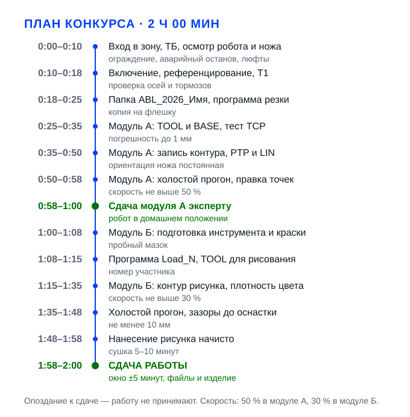
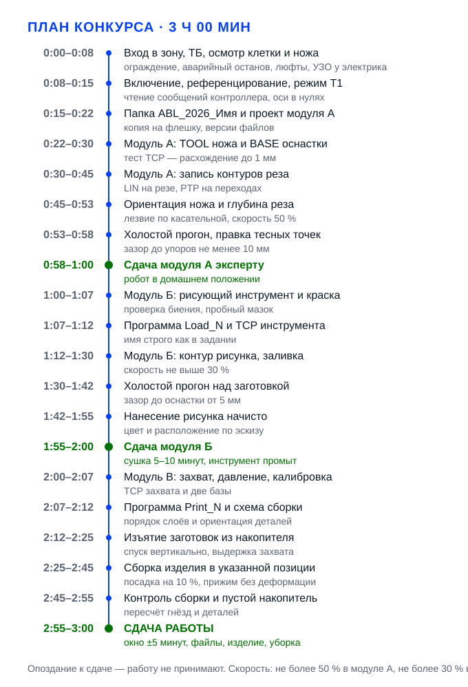
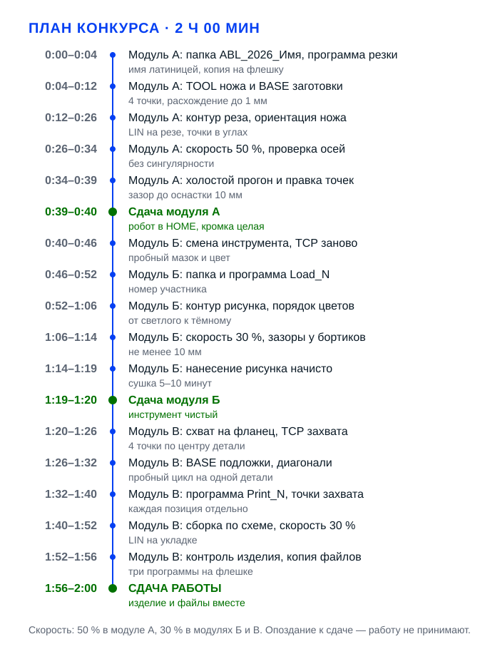

Промышленная робототехника (Р,О)
Задания ниже — официальные файлы «Абилимпикс» (источник: abilympics-russia.ru), разложенные по категориям. Решения написаны по тексту задания, регламенту и критериям оценки; в них указано, что именно проверяет эксперт.
Школьник
14–16 лет, базовый уровень заданияВыдержка из официального конкурсного задания: страницы, относящиеся к категории «Школьник» (стр. 6–7, 10–11 источника).
Пошаговое решение
Конкурсное задание категории «Школьники» длится два часа и состоит из двух модулей по часу: в модуле А робот режет пищевой продукт ножом, закреплённым на фланце промышленного манипулятора, в модуле Б наносит на заготовки графическое изображение. Максимальная сумма — 100 баллов: 48 за резку и 52 за рисунок, причём почти половина баллов связана с траекториями: 24 балла дают за 100 процентов корректно работающих траекторий и 12 за половину. Отдельно оценивают ориентацию ножа, использование типов перемещений PTP и LIN, отсутствие столкновений и сингулярности, возврат в домашнее положение, а в модуле Б — цвет и расположение рисунка. Скорость ограничена: не более 50 процентов при резке и не более 30 при нанесении рисунка. Работа сдаётся из папки ABL_2026_Имя, программа второго модуля называется Load_N по номеру участника, поэтому порядок и именование проверяются наравне с качеством реза.

Задача 1. Подготовить зону, робота и инструмент к безопасной работеМодули А и Б · 2 балла за ТБ + условия для остальных 98
До первого движения по программе нужно сделать три вещи: убедиться, что в зоне никого нет и ограждение закрыто, осмотреть манипулятор, нож и оснастку, а затем включить комплекс и вывести его в понятное исходное состояние. Эти действия почти не дают баллов напрямую, но без них не работает ни один из 48 баллов модуля А и ни один из 52 баллов модуля Б: любая остановка из-за столкновения или сработавшего ограничения обнуляет целые группы критериев.
Действие 1.1. Войти в зону и снять риски
Шаг 1.1.1
Входим в рабочую зону только через калитку ограждения и только с пультом обучения в руке: пульт не оставляем на столе у робота и не кладём на оснастку. Надеваем куртку с длинным рукавом, застёгиваем её полностью, волосы убираем под головной убор, обувь — закрытая, на нескользящей подошве. Рукава не подворачиваем: при наклоне над столом открытая рука оказывается ровно там, где ходит нож. Сразу проверяем большой палец правой руки на кнопке аварийного останова — она должна быть не заблокирована, не утоплена и нажиматься без перехвата пульта.
За соблюдение техники безопасности дают по одному баллу в каждом модуле, то есть два из ста, но задание считается выполненным только при соблюдении всех требований, и грубое нарушение ТБ может обнулить модуль целиком. Пульт в руке — не формальность: пока он у вас, робот не может пойти в автоматическом режиме. Убранные волосы и застёгнутая куртка нужны не для эксперта: фланец вращается на 360 градусов и затягивает всё свободное.
Смотрим на три вещи: ограждение закрыто и концевой выключатель двери не обойдён скотчем, в зоне нет ни одного человека, пульт в руке и его кнопка останова нажимается. Дополнительно проверяем, что ключ выбора режима находится у вас или у эксперта, а не оставлен в стойке на T2 — иначе первый же прогон пойдёт на полной скорости.
Самая частая ошибка — зайти в зону, оставив пульт на столе, и включить приводы кнопкой на стойке: робот отрабатывает сохранённую программу, а участник стоит в рабочем конверте. Второе типичное нарушение — зафиксировать рукоятку разрешения движения стяжкой или изолентой, чтобы не держать её; эксперт видит это сразу, и разговор идёт уже не о баллах.
Эксперт фиксирует ТБ не в конце, а с первой минуты и потом выборочно в течение обоих модулей: смотрит на руки, на калитку, на то, выходит ли участник из зоны при смене инструмента.
Шаг 1.1.2
Обходим стол по часовой стрелке и освобождаем рабочую зону: убираем инструмент, ветошь, стаканы, чехлы и всё, что может попасть под нож или под оснастку. Кабели и шланги укладываем в лоток или за крепёж так, чтобы они не пересекали сектор движения и не натягивались при повороте осей. Проверяем, что заготовка и прижимы не выступают за габарит оснастки, а сама оснастка прикручена к столу минимум двумя болтами и не шатается от нажатия ладонью.
Критерий «робот не совершает столкновений со столом или оснасткой и не прерывается из-за превышения углов или сингулярности» стоит 4 балла в модуле А и ещё 2 балла за отсутствие столкновений с оснасткой в модуле Б. Столкновение почти никогда не бывает следствием одной неверной точки: чаще робот цепляет то, что лежало не на месте. Свободные кабели дают ещё и ложные срабатывания защиты, после которых программу приходится перезапускать с начала.
Проходим взглядом по границе стола на высоте вытянутой руки: ничто не выступает за кромку, кабели лежат в лотке, чехлы и ветошь убраны. Берём оснастку двумя пальцами и пробуем качнуть — люфта быть не должно, заготовка сидит в базе без перекоса, прижимы затянуты одинаково.
Оставить на столе шестигранник или щуп, которым только что выставляли точку, — классика: на холостом прогоне всё хорошо, а на рабочем проходе нож упирается в инструмент, срабатывает защита, и программа встаёт посреди контура. Второй случай — неплотно затянутая оснастка: она сдвигается на доли миллиметра, и рисунок уезжает относительно заготовки.
Эксперт обходит зону вместе с участником перед стартом и отдельно отмечает, убрано ли лишнее с стола и закреплена ли оснастка, потому что именно это определяет, будет ли прогон чистым.
Шаг 1.1.3
Берём пульт двумя руками и проверяем его состояние: корпус без трещин, кабель у основания не переломлен, экран показывает текущий режим, кнопка аварийного останова фиксируется в нажатом положении и разблокируется поворотом. Проверяем трёхпозиционную рукоятку разрешения движения: в среднем положении приводы разрешены, при отпускании и при дожатии до упора движение прекращается. Убеждаемся, что мёртвая рука срабатывает именно так, а не остаётся замкнутой.
Рукоятка разрешения движения — единственное, что стоит между рукой участника и движущимся ножом на скорости до половины от максимальной. Если она неисправна и не снимает разрешение при отпускании, вы теряете контроль над роботом в самый неподходящий момент, а эксперт расценивает это как нарушение ТБ и снимает балл. Проверка занимает меньше минуты и делается до включения приводов, а не после.
Нажимаем и отпускаем рукоятку при выключенных приводах: на экране появляется и пропадает сообщение о разрешении движения. Нажимаем аварийный останов — индикатор гаснет, приводы обесточены, повторный пуск невозможен до поворота и отпускания грибка.
Привычка держать рукоятку дожатой до третьего положения: у большинства пультов это как раз отключение, и участник удивляется, почему робот стоит. Обратная ошибка — вообще не проверять рукоятку и узнать о её неисправности в момент, когда робот идёт по контуру у самой заготовки.
Эксперт может попросить показать проверку рукоятки и аварийного останова вслух; уверенная демонстрация сразу читается как понимание техники, а не как заученный ритуал.
Действие 1.2. Осмотреть манипулятор, нож и заготовку
Шаг 1.2.1
Осматриваем манипулятор по осям, начиная от основания: нет ли подтёков смазки, трещин на литых деталях, ослабших болтов на фланцах редукторов. Проверяем гофру и кабельные вводы — они не должны быть потёрты, пережаты или натянуты. Берём звено рукой при выключенных приводах и пробуем покачать: ощутимый люфт в редукторе означает, что точность повторяемости уже не та, и траектория поедет на десятые доли миллиметра, что для резки критично.
Критерий «в программе прописаны и корректно работают 100% траекторий» стоит 24 балла — почти половину модуля А. Если механика имеет люфт, точки, записанные вами, отрабатываются с ошибкой, и нож идёт рядом с линией разметки. Заметить это до старта гораздо дешевле, чем объяснять эксперту, почему контур смещён.
Люфт проверяется покачиванием звена при отпущенном тормозе: ход не должен превышать долей градуса, слышимого стука быть не должно. Гофра целая, кабели не натянуты, подтёков смазки под редукторами нет.
Не заметить потёртый кабель у основания кисти: при повороте оси он замыкает, срабатывает защита, и программа прерывается на середине контура. Ремонт в конкурсное время не делается, а критерий «программа не прерывается» стоит свои баллы.
Эксперт подходит к стенду после первого прогона и смотрит, не появились ли следы удара или свежие царапины на звеньях — это первое, что выдаёт столкновение.
Шаг 1.2.2
Смотрим на нож, закреплённый на фланце: держатель затянут, лезвие выставлено по оси Z, крепёж не имеет люфта. Берём лезвие за обух большим и указательным пальцем и пробуем провернуть — оно не должно двигаться относительно держателя. Ориентация режущей кромки задаётся заранее: кромка смотрит по направлению реза, а не поперёк, и это положение фиксируется в системе координат инструмента. Осматриваем саму кромку на сколы и замятия, при необходимости меняем лезвие до старта.
За правильную ориентацию ножа по отношению к траектории дают 4 балла, и это единственный критерий модуля А, который проверяется глазами, а не по факту движения. Нож, повёрнутый кромкой вбок, не режет, а давит: заготовка рвётся, кромка реза получается рваной, и часть траекторий формально считается невыполненной.
Кромка смотрит вдоль предполагаемого движения, лезвие стоит перпендикулярно плоскости заготовки, держатель не проворачивается. Проверьте на пробном отрезке: нож должен входить в продукт с усилием, а не скользить по поверхности.
Поставить лезвие кромкой вверх «как удобно встало» и обнаружить это только по рваному краю на первой детали. Вторая ошибка — затянуть держатель от руки без ключа: на втором проходе нож проворачивается, и ориентация теряется посреди контура.
Эксперт смотрит на нож в момент первого реза и отдельно — на кромку готовой детали; ровный срез без бахромы читается как правильная ориентация. Отдельно он смотрит, не появилось ли на лезвии замятие после первого прохода.
Шаг 1.2.3
Укладываем заготовку в оснастку по базовым упорам до упора, без перекоса и без зазора под кромкой, затем зажимаем прижимами крест-накрест: сначала лёгкое усилие, потом окончательное, чтобы заготовка не сдвинулась в процессе затяжки. Проверяем толщину в трёх точках — по центру и у двух краёв; разница больше миллиметра означает, что нож придётся вести с запасом по глубине, иначе на тонком участке он не прорежет. Отмечаем карандашом или наклейкой нулевую точку, от которой будем считать координаты.
Все 24 балла за 100% траекторий держатся на том, что заготовка стоит неподвижно и в известном месте. Сдвиг заготовки на 2 миллиметра после того, как вы записали точки, — это ошибка по всему контуру сразу. Разная толщина по площади даёт неполный рез в тонком месте: деталь формально не разрезана, и траектория не засчитывается.
Заготовка не двигается при нажатии пальцем в четырёх точках, прижимы затянуты одинаково, зазора под кромкой нет. Толщина измерена в трёх местах, значения записаны, разница не больше миллиметра. Если заготовка «дышит» под пальцем, прижим надо подтянуть до старта.
Зажать заготовку с одной стороны и оставить вторую свободной: при первом же проходе нож приподнимает край, деталь смещается, и остальные резы идут мимо. Вторая ошибка — не измерить толщину и вести нож на глубину «на глаз».
Эксперт проверяет базирование до старта модуля: берёт заготовку рукой и пробует сдвинуть. Неподвижность фиксируется как часть подготовки. Он же проверяет, не выступает ли заготовка за габарит оснастки.
Действие 1.3. Включить комплекс и вывести в исходное положение
Шаг 1.3.1
Включаем стойку управления в порядке, указанном на стенде: сначала главный рубильник, затем питание контроллера, затем отпускаем аварийный останов и ждём завершения загрузки. Дожидаемся, пока система выйдет из состояния ошибки и предложит референцирование. Если стенд требует калибровки, выполняем её в режиме T1 на пониженной скорости, не пропуская оси и не пытаясь «схитрить» ручным подводом.
Непрогретая и неотреференцированная система не знает, где находятся оси, и первые записанные точки уходят в сторону на сантиметры. Кроме того, порядок включения влияет на то, сбросится ли ошибка привода: если включить контроллер раньше питания силовой части, ошибка останется висеть, и время уйдёт на её снятие.
Экран не показывает ошибок, индикаторы приводов в норме, все оси отреференцированы и их текущие значения совпадают с ожидаемыми для исходного положения. Проверьте, что робот не находится в режиме автоматического пуска.
Начать программировать до завершения референцирования: точки пишутся от неверной системы координат, и потом всю программу приходится переписать. Вторая ошибка — снимать ошибку привода многократными перезапусками, не разобравшись в причине.
Эксперт наблюдает за включением и за тем, насколько осознанно участник снимает ошибки; хаотичные перезапуски читаются как неуверенность. Если участник начинает писать точки, не дождавшись готовности стойки, это видно по экрану.
Шаг 1.3.2
Переводим пульт в режим T1 — пониженная скорость, движение только при удержании рукоятки разрешения. По очереди трогаем каждую ось коротким импульсом в несколько градусов и слушаем: привод должен идти ровно, без рывков и скрипа, тормоз — отпускать с щелчком. Отводим робота от заготовки на 150–200 миллиметров, чтобы был свободный ход для первых пробных точек.
Проверка каждой оси в отдельности занимает меньше минуты и выявляет заклинивание, которое в автоматическом режиме привело бы к аварийной остановке. Критерий «робот не прерывается из-за превышения углов» стоит в модуле А 4 балла вместе с отсутствием столкновений, и часть этих отказов ловится именно здесь.
Все шесть осей двигаются плавно в обе стороны, посторонних звуков нет, тормоза держат положение после отпускания рукоятки. Робот отведён от оснастки, свободный ход не меньше 150 миллиметров. Проверьте также, что кабель пульта не натянут при отводе робота.
Пропустить проверку осей, которые «всегда работают», и получить остановку на седьмой минуте модуля. Ещё одна ошибка — гонять оси на полной амплитуде в T1 рядом с оснасткой, рискуя задеть её при первом же движении.
Эксперт отмечает, проверяет ли участник оси по одной или сразу гонит робота в дальнюю точку; второе считается грубым обращением с оборудованием. Резкие рывки на проверке он тоже отмечает как грубое обращение с оборудованием.
Шаг 1.3.3
Выводим манипулятор в домашнее положение, заданное на стенде: все оси в нулевых или паспортных значениях, инструмент направлен вниз, робот вне конверта оснастки. Если домашнее положение не задано, запоминаем текущую позу как рабочую точку возврата и записываем её первой строкой будущей программы. Проверяем, что из этого положения видно всю рабочую зону и ни одна ось не стоит у предела.
За то, что после завершения программы робот находится в домашнем положении, дают отдельный балл, и это самый дешёвый балл модуля А: он набирается одной строкой в конце программы. Кроме того, домашнее положение — единственная поза, из которой предсказуемо начинается и заканчивается любой прогон, и без него повторный запуск идёт от случайной точки.
Все оси в ожидаемых значениях, инструмент не касается оснастки, до ближайшего препятствия не меньше 100 миллиметров. Запишите значения осей — по ним потом легко проверить возврат. Отметьте на столе проекцию инструмента, чтобы возврат был виден сразу.
Оставить робота в позе, где ось почти упёрлась в предел: следующий прогон начинается с ошибки переполнения, и программа не стартует. Вторая ошибка — забыть строку возврата в конце: балл за домашнее положение снят, хотя работа сделана.
Эксперт смотрит на позу робота после остановки программы: если манипулятор висит над заготовкой в произвольной позе, балл не ставится. Для него домашнее положение — это конкретные значения осей, а не «примерно там же».
Задача 2. Модуль А. Запрограммировать механическую резкуМодуль А · 48 баллов
Первый час конкурса уходит на резку. Нужно создать папку по шаблону, привязать инструмент и заготовку, записать контур точками, выставить типы перемещений и скорость не выше 50 процентов, а затем прогнать программу так, чтобы робот не задел оснастку и вернулся в домашнее положение. Основной вес здесь у двух критериев: 24 балла за 100 процентов корректно работающих траекторий и 12 баллов за прохождение более половины, остальное — ориентация ножа, типы перемещений, безопасность и возврат в исходную позу.
Действие 2.1. Создать папку и программу по правилам именования
Шаг 2.1.1
В корневом каталоге программ создаём папку с именем ABL_2026_ВашеИмя, где 2026 — текущий год, а имя записано английскими буквами без пробелов, например ABL_2026_Ivanov. Регистр соблюдаем так, как в задании: ABL заглавными, год четырьмя цифрами, имя с заглавной буквы. Кириллицу, пробелы, дефисы и лишние подчёркивания не используем — стойка может сохранить файл, но при переносе на флешку имя исказится.
Папка и программа, названные в соответствии с заданием, — отдельный критерий на 1 балл в модуле Б, но этот балл теряется чаще остальных, потому что делается в спешке в самом начале. Кроме того, по имени папки эксперт находит вашу работу при сдаче: если он не может её опознать, оценивать нечего.
Имя папки целиком читается на экране и совпадает с шаблоном посимвольно: ABL, подчёркивание, 2026, подчёркивание, имя латиницей. Проверьте, что в имени нет пробела в конце — такие папки часто не открываются после копирования.
Назвать папку «Робот» или «Школьник_1» — понятно участнику, но не эксперту, и балл за именование снят. Вторая ошибка — написать год двумя цифрами или забыть подчёркивание: имя выглядит почти правильным, но шаблону не соответствует.
Эксперт сверяет имя папки с шаблоном в момент сдачи и делает это буквально посимвольно, не «по смыслу». Если папка названа почти правильно, он всё равно снимет балл, поэтому имя лучше перепроверить дважды.
Шаг 2.1.2
Внутри папки создаём программу механической резки и называем её так, чтобы было видно отношение к модулю А, например Rezka_N, где N — ваш номер участника. Сохраняем в формате стойки, дожидаясь подтверждения записи, и сразу проверяем, что файл появился именно в ABL_2026_Имя, а не в общем каталоге TEMP или в папке предыдущего участника. Открываем программу заново из меню — так видно, что она читается.
Программа, лежащая не в той папке, формально не существует: при сдаче проверяются только файлы в именованном каталоге. Привычка сохранять в каталог по умолчанию приводит к тому, что работа есть, а баллов за неё нет. Повторное открытие из меню — единственный способ убедиться, что файл записан целиком, а не остался в памяти стойки.
Файл виден в списке программ внутри вашей папки, открывается без сообщений об ошибке, содержит хотя бы одну строку — обычно это точка возврата в домашнее положение. Путь к файлу в строке состояния совпадает с именем папки.
Сохранить программу в корень и потерять её при следующем сохранении под тем же именем. Вторая ошибка — работать, не сохраняя, до самого конца: при перезапуске стойки после ошибки вся программа исчезает.
Эксперт просит открыть программу из меню, а не с рабочего экрана: так сразу видно, сохранена ли она и где лежит. Ему важно, чтобы программа открывалась из меню, а не только с рабочего экрана.
Шаг 2.1.3
Проверяем свободное место и доступность носителя: на стойке смотрим объём свободной памяти, на флешке — что она не защищена от записи и отформатирована в понятной системе. Сразу после создания папки копируем её на флешку и проверяем копию на другом устройстве или хотя бы в другом каталоге. Если стойка ведёт журнал, отмечаем время создания — при сдаче это помогает доказать, что работа сделана в конкурсное время.
Резервная копия стоит тридцати секунд и спасает весь модуль: сбой питания, перезапуск стойки или случайное удаление оставляют участника без программы, а восстановить её по памяти за оставшееся время почти невозможно. Требование «программа не должна прерываться из-за ошибок» относится к прогону, но потеря файла прерывает работу гарантированно.
На флешке есть папка с тем же именем и внутри неё файл программы; размер файла не нулевой. Флешка извлекается через «безопасное извлечение», а не выдёргивается. Убедитесь, что копируется вся папка целиком, а не один файл программы.
Копировать в конце, когда времени уже нет, и обнаружить, что флешка отформатирована в файловой системе, которую стойка не читает. Вторая ошибка — выдернуть носитель во время записи: файл остаётся нулевого размера.
На сдаче эксперт может попросить показать копию; её наличие говорит о том, что участник понимает цену сохранности работы. Наличие резервной копии он отмечает отдельно, особенно если стойка уже перезапускалась.
Действие 2.2. Привязать инструмент и заготовку к координатам
Шаг 2.2.1
Открываем таблицу инструментов и создаём новую систему координат инструмента TOOL с номером, который ещё не занят, например 3. Задаём смещение по трём осям и три угла поворота так, чтобы начало координат оказалось на кончике лезвия, а ось Z инструмента совпала с направлением реза и смотрела от фланца к заготовке. Активируем TOOL и проверяем на экране, что текущая система сменилась.
Все точки программы записываются относительно выбранного инструмента. Если TOOL указывает не на кончик ножа, а на фланец, робот будет вести по траектории фланец, а лезвие окажется на 100–150 миллиметров в стороне — именно так теряются баллы за 100% траекторий. Правильная TOOL — это условие того, что 24 балла вообще достижимы.
На экране активна нужная TOOL, значения смещений не нулевые, ось Z направлена вдоль лезвия. Переключитесь в режим отображения положения в TOOL и убедитесь, что координаты меняются осмысленно при повороте кисти.
Работать в нулевой TOOL, то есть от фланца: точки выглядят правильными на холостом ходу, а с ножом робот режет воздух в стороне от разметки. Вторая ошибка — создать TOOL, но не активировать её: в таблице запись есть, а движение считается по старой.
Эксперт смотрит на номер активной TOOL в строке состояния и на то, совпадает ли положение кончика ножа с заданной точкой при подводе. Если TOOL активна, но смещение нулевое, это видно по координатам и сразу вызывает вопросы.
Шаг 2.2.2
Измеряем TCP по четырём точкам: берём на столе неподвижную метку, например остриё иглы в тисках, и подводим кончик ножа к ней в четырёх разных ориентациях кисти, каждый раз фиксируя точку. Стойка пересчитывает смещение сама; после четвёртой точки смотрим величину остаточной погрешности. Если она больше одного миллиметра, повторяем измерение, потому что четвёртая точка обычно и выявляет ошибку в первых трёх.
Точность TCP напрямую определяет, попадёт ли нож в линию разметки. Погрешность в 2 миллиметра при ориентации ножа по нормали к заготовке даёт смещение кромки на всю глубину реза, и деталь получается с уступом. Кроме того, корректно измеренный TCP позволяет менять ориентацию, не смещая кончик, — а это и есть требование сохранять ориентацию инструмента.
Остаточная погрешность измерения не больше миллиметра, значения смещения близки к геометрическим размерам держателя. Подводим кончик к метке в двух произвольных ориентациях — расхождение не должно быть заметно на глаз.
Измерять все четыре точки в почти одинаковой ориентации: стойка формально посчитает смещение, но погрешность будет огромной. Вторая ошибка — не перепроверить результат и узнать о нём по косому резу на первой детали.
Эксперт может попросить показать проверку TCP поворотом кисти у метки: неподвижный кончик — лучшее доказательство качества привязки. Он смотрит на остаточную погрешность на экране, а не на слова участника.
Шаг 2.2.3
Создаём базовую систему координат BASE, привязанную к оснастке: первую точку берём в начале координат заготовки, вторую — на оси X, третью — на оси Y, разнося их на 100–150 миллиметров. Плоскость XY должна совпасть с плоскостью стола или с плоскостью реза, а ось Z — смотреть вверх, от заготовки к инструменту. Активируем BASE и проверяем, что положение робота в новой системе читается как ожидаемое.
В BASE записываются все точки контура, и если она привязана к столу, а не к оснастке, то при любом сдвиге прижимов вся программа уезжает. Привязка к оснастке даёт главное удобство: координаты точек становятся равны размерам с чертежа, и их можно проверить арифметикой, а не только глазами. Это экономит время, которого в модуле всего час.
Начало BASE совпадает с базовым упором оснастки, ось X идёт вдоль длинной стороны заготовки, ось Z смотрит вверх. Проверьте: координаты центра заготовки в BASE должны быть близки к половине её габаритов.
Привязать BASE к мировым координатам стола и потом вручную пересчитывать каждую точку. Вторая ошибка — перепутать направление оси Z: тогда все подходы окажутся под заготовкой, и первый же прогон даст столкновение.
Эксперт смотрит, в какой системе записаны точки, и по возможности сверяет координаты с размерами на чертеже. Если BASE привязана к столу, он замечает это по координатам, которые не совпадают с чертежом.
Шаг 2.2.4
Делаем контрольный тест привязки: подводим кончик ножа к базовому углу заготовки, обнуляем показания, отводим на 50 миллиметров вверх и возвращаем в ту же точку через движение по X и Y. Затем поворачиваем кисть вокруг оси Z на 90 градусов, не меняя положения кончика, и смотрим, остался ли он на метке. Расхождение больше миллиметра означает ошибку в TOOL или BASE.
Этот тест проверяет сразу обе системы и занимает две минуты, тогда как обнаружение той же ошибки на готовой детали стоит всего модуля. Поворот вокруг Z особенно показателен: он выявляет ошибку в смещении по X и Y, которую при движении вдоль осей не видно.
После возврата в точку кончик стоит на метке, после поворота на 90 градусов — тоже. Координаты точки в BASE совпадают с ожидаемыми с точностью до полумиллиметра. Повторите тест дважды: второй раз с поворотом на 180 градусов, чтобы поймать ошибку по оси Y.
Пропустить тест, потому что «и так видно, что всё ровно»: на глаз смещение в 2 миллиметра почти незаметно, а на резе это брак по всему контуру. Вторая ошибка — тестировать только по одной оси и не проверять поворот.
Эксперт любит этот тест и часто просит повторить его при сдаче: он сразу показывает, понимает ли участник, что такое TCP. Ему достаточно одного поворота кисти, чтобы понять, измерен TCP или взят с потолка.
Действие 2.3. Записать контур резки точками
Шаг 2.3.1
Кладём перед собой чертёж или шаблон и размечаем порядок резов: с какого угла начинаем, в каком направлении идём по каждому контуру, где входим и где выходим. Помечаем на заготовке карандашом точки входа и выхода, отступив от края 5–10 миллиметров, чтобы нож не начинал рез с кромки. Определяем, какие линии общие и где можно не отрывать нож, а где обязательно поднять.
Порядок резов определяет, сколько раз робот поднимает и опускает нож, а каждый подъём — это потенциальное столкновение и потеря точности. Кроме того, продуманный порядок позволяет пройти часть контура без разрыва, и тогда программа короче, а вероятность ошибки в ней ниже. Без плана точки пишутся хаотично, и на проверку уходит больше времени, чем на запись.
На заготовке видны метки входа и выхода для каждого контура, порядок пронумерован. Проверьте, что ни один рез не начинается с самого края и что между соседними контурами остаётся перемычка не меньше 3 миллиметров.
Начать рез с кромки: нож входит в продукт боком, заготовка сминается, и первый сантиметр контура оказывается рваным. Вторая ошибка — идти по соседним линиям без перемычки, из-за чего деталь отваливается раньше времени и смещается под ножом.
Эксперт смотрит на заготовку с разметкой и на последовательность движения: логичный порядок читается сразу. Если порядок резов продуман, на заготовке не будет лишних проколов от ножа.
Шаг 2.3.2
Записываем первую точку как PTP-подход: подводим нож на 80–100 миллиметров над точкой входа, строго по нормали к плоскости заготовки, и фиксируем позицию. Скорость на этом переходе ставим не выше 30 процентов, чтобы подход был предсказуемым. В той же строке задаём ориентацию, в которой нож будет резать, — дальше она не должна меняться. Точку записываем штатной кнопкой фиксации, а не набором координат с клавиатуры.
PTP-подход нужен потому, что он идёт по кратчайшему пути в пространстве сочленений и не требует расчёта прямой линии: так робот выходит в зону реза быстро и без риска зацепить оснастку. Критерий «используется тип перемещения LIN и PTP» стоит 2 балла, и первая же точка должна показать, что участник понимает разницу: подвод — PTP, рез — LIN.
В строке программы стоит тип PTP, координаты соответствуют точке над входом, ориентация совпадает с той, что нужна для реза. При прогоне в T1 робот выходит в эту точку, не задевая прижимы. Проверьте, что до прижимов остаётся не меньше 20 миллиметров.
Записать подход как LIN через полстола: робот идёт по прямой и цепляет оснастку или уходит в сингулярность. Вторая ошибка — задать в подходе одну ориентацию, а в резе другую: кисть доворачивается на первом же миллиметре и смещает кончик.
Эксперт просматривает первую строку программы и проверяет, что подвод сделан PTP, а не LIN. Если первая строка сделана LIN, он сразу понимает, что участник не различает типы перемещений.
Шаг 2.3.3
Записываем движение по контуру типом LIN, начиная от точки входа: опускаем нож на глубину реза и ведём по линии, фиксируя точки через 20–30 миллиметров на прямых участках и через 5–10 миллиметров на радиусах. На каждой точке сохраняем одну и ту же ориентацию, не «поправляя» её руками. Для дуг записываем три точки — начало, середину и конец, чтобы стойка провела дугу, а не ломаную.
Плотность точек на кривых определяет, насколько контур совпадёт с чертежом: при шаге 40 миллиметров на радиусе 20 миллиметров робот срежет угол, и деталь получится с гранёной кромкой. Критерий «100% траекторий» стоит 24 балла, и он ставится только тогда, когда пройдены все участки, включая мелкие радиусы, которые обычно и пропускают.
На экране видна непрерывная цепочка LIN-точек без разрывов, на радиусах шаг заметно меньше, чем на прямых. Прогон в T1 показывает, что нож идёт точно по карандашной линии, отклонение не больше половины толщины линии.
Ставить точки только в углах и надеяться, что стойка сама сгладит: между углами получается прямая, и радиусы исчезают. Вторая ошибка — менять ориентацию на каждой точке «чтобы нож смотрел по ходу»: кончик описывает петлю, и рез уходит в сторону.
Эксперт проходит по программе и смотрит на количество точек на кривых; ровная кромка на радиусе — прямой признак, что шаг был правильным. Гранёная кромка на радиусе — верный признак того, что точки ставились слишком редко.
Шаг 2.3.4
Задаём глубину погружения ножа: кончик должен пройти заготовку насквозь на 1–2 миллиметра, но не коснуться оснастки под ней. Выставляем угол наклона лезвия относительно плоскости реза — 90 градусов, то есть строго перпендикулярно, если в задании не оговорён иной угол. Проверяем, что ориентация в каждой точке реза одинакова: углы A, B, C не меняются от точки к точке.
Правильная ориентация ножа по отношению к траектории — это 4 балла, и проверяется она именно здесь, при записи точек. Наклонённое лезвие режет только одной стороной, уводит рез вбок и даёт косую кромку; кроме того, при наклоне кончик, привязанный по оси Z, оказывается не там, где вы его видите. Глубина с запасом в 1–2 миллиметра гарантирует полный рез при колебаниях толщины.
Углы ориентации во всех точках контура совпадают до десятых долей градуса, нож стоит перпендикулярно плоскости, глубина проходит заготовку насквозь. Проверьте на первом сантиметре реза: кромка ровная с обеих сторон.
Наклонить нож «как удобнее для кисти»: рез уводит в сторону на несколько миллиметров, и ориентация признаётся неверной. Вторая ошибка — задать глубину ровно по толщине заготовки: на участке, где продукт тоньше, рез получается неполным.
Эксперт смотрит на нож сбоку во время реза: отклонение от перпендикуляра видно невооружённым глазом и сразу снимает 4 балла. Он смотрит на кромку с обеих сторон: при наклоне одна сторона всегда получается косой.
Шаг 2.3.5
Записываем выход из реза: в конце контура поднимаем нож строго вверх на 10–15 миллиметров, не сдвигая его вбок, и только после этого уводим в сторону типом LIN или PTP. Если деталь осталась соединённой с заготовкой перемычкой, добавляем точку на перемычке и отводим нож вверх уже от неё. Последней строкой ставим возврат в домашнее положение. Подъём задаём отдельной точкой, а не изменением ориентации.
Подъём строго вверх не даёт ножу тащить заготовку за собой: при боковом отводе лезвие цепляет надрезанный край и смещает деталь, после чего весь оставшийся контур идёт криво. Возврат в домашнее положение в конце — отдельный балл, и его проще поставить строкой сейчас, чем вспоминать при сдаче.
В конце программы есть подъём по Z и возврат в домашнюю позу. На прогоне деталь остаётся на месте, нож выходит из реза без рывка, заготовка не сдвигается. Проверьте, что после подъёма инструмент не проходит над нарезанной деталью ниже 10 миллиметров.
Отводить нож вбок прямо из реза: деталь сдвигается, и последующие контуры режутся мимо разметки. Вторая ошибка — забыть возврат в домашнее положение и потерять балл, который ставится просто за наличие строки.
Эксперт смотрит на последние строки программы и на то, где робот остановился после прогона. Если деталь после выхода сдвинута, он понимает, что нож отвели вбок, а не вверх.
Действие 2.4. Настроить перемещения, скорость и защиту от сингулярности
Шаг 2.4.1
Проходим по программе и расставляем типы перемещений осознанно: все подходы, отводы и переходы между контурами — PTP, потому что там важна скорость, а не прямая линия; весь рез и любые движения у поверхности заготовки — LIN, потому что там важна именно прямая. Для грубых переходов на большое расстояние можно добавить промежуточную точку, чтобы робот не шёл по прямой через оснастку. Проверяем, что ни одна строка реза не осталась с типом PTP.
Критерий «используется тип перемещения LIN и PTP» стоит 2 балла, но фактически от него зависят 24 балла за траектории: PTP-строка внутри реза проведёт нож по дуге в пространстве сочленений, и контур развалится. Осознанное чередование двух типов — это и есть та часть работы, которую эксперт проверяет по тексту программы.
Пройдите по списку строк: перед каждой точкой входа стоит PTP, внутри контура — только LIN, после выхода — PTP. Если в резе нашлась хотя бы одна PTP-строка, исправьте её до прогона. Удобно пройти список строк сверху вниз и отмечать типы карандашом на распечатке.
Оставить все строки PTP по умолчанию, потому что так быстрее набирать: робот пройдёт по контуру приблизительно, кромка получится волнистой, и критерий 100% траекторий не выполнится. Кромка получается волнистой, и часть траекторий формально не засчитывается.
Эксперт открывает программу и смотрит типы строк — это делается за минуту и однозначно показывает уровень понимания. Ему важно увидеть, что LIN стоит именно в резе, а PTP — только в подходах и переходах.
Шаг 2.4.2
Ограничиваем скорость: в модуле А перемещение не должно превышать 50 процентов от максимальной. Ставим общий регулятор скорости на 40–50 процентов и дополнительно задаём скорость линейного движения в точке — для резки это обычно 10–20 миллиметров в секунду, для переходов можно больше. Проверяем по экрану, что фактическое значение не поднимается выше пятидесяти процентов ни на одной строке.
Ограничение в 50 процентов — прямое требование задания, и его нарушение ставит под сомнение весь модуль: эксперт видит по индикатору, что регулятор стоит на 100. Кроме того, на половине скорости нож успевает прорезать продукт, а не сминать его, и кромка получается чистой. Слишком медленно тоже плохо: за час нужно успеть не только записать, но и прогнать программу дважды.
Индикатор регулятора скорости не выше 50, в строках реза задана скорость в миллиметрах в секунду. На прогоне видно, что робот идёт ровно, без рывков на поворотах. Проверьте ограничение на всех строках, включая переходы, а не только в резе.
Выставить 100 процентов «чтобы успеть»: робот проходит контур с рывками, заготовка сминается, и это фиксируется как нарушение требования по скорости. Вторая ошибка — поставить 5 процентов и не успеть прогнать программу второй раз.
Эксперт проверяет положение регулятора скорости в момент прогона и иногда просит показать заданные скорости в строках. Если регулятор стоит на 100, он снимает балл, даже когда рез получился ровным.
Шаг 2.4.3
Фиксируем ориентацию на всём протяжении контура: выбираем одну пару углов и копируем её во все точки реза, не позволяя стойке пересчитывать ориентацию. Если нужно обойти высокий участок заготовки, меняем ориентацию плавно, добавив две промежуточные точки, а не одним скачком. Проверяем, что ось Z инструмента на всех точках смотрит в одну сторону. Копирование ориентации делаем штатной функцией стойки, а не вручную.
Постоянная ориентация — это и 4 балла за правильное положение ножа, и условие ровной кромки: при повороте кисти кончик, смещённый относительно оси вращения хотя бы на полмиллиметра, описывает окружность и уводит рез. Плавная смена ориентации на двух-трёх точках даёт стойке возможность интерполировать поворот, и нож не дёргается.
Значения углов A, B, C одинаковы во всех точках контура — это видно в списке точек. При прогоне кисть не проворачивается на прямых участках. Проверьте это в списке точек, а не на глаз: значения углов должны совпадать посимвольно.
Записать точки в разных ориентациях, потому что так удобнее подводить рукой: кисть доворачивается, кончик смещается на миллиметр-полтора, и на кромке появляется ступенька. На кромке появляется ступенька, которую уже не исправить.
Эксперт смотрит на кисть во время реза: неподвижная ориентация видна сразу, как и постоянный угол наклона лезвия. Если кисть проворачивается на прямом участке, он отмечает это как ошибку ориентации.
Шаг 2.4.4
Проверяем программу на близость к сингулярности: смотрим на значение пятой оси в каждой точке и следим, чтобы оно не подходило к нулю ближе чем на 5–10 градусов. Проверяем также, что ни одна ось не стоит у предела и что конфигурация (вперёд-назад, локоть вверх-вниз) не меняется посреди контура. Если точка попадает в опасную зону, смещаем её на 10–20 миллиметров или меняем ориентацию на 15 градусов вокруг вертикали.
Критерий прямо требует, чтобы робот не прерывался из-за превышения углов или сингулярности, и вместе с отсутствием столкновений это 4 балла. В сингулярности робот теряет одну степень свободы, скорость оси резко растёт, и движение останавливается с ошибкой прямо над заготовкой. Поймать это на экране до прогона гораздо проще, чем объяснять остановку.
Пятая ось во всех точках дальше 5 градусов от нуля, все оси в пределах рабочего диапазона, конфигурация одинаковая от входа до выхода. Прогон в T1 на малой скорости не даёт сообщений о приближении к сингулярности.
Вытянуть кисть почти в прямую линию, чтобы дотянуться до дальнего края: в этой позе робот проходит через сингулярность, и программа встаёт на середине контура. Вторая ошибка — игнорировать предупреждение на экране и продолжать прогон.
Эксперт смотрит на позу робота в дальних точках: вытянутая рука — признак риска, и он это отмечает ещё до остановки. Если программа всё же встала с ошибкой сингулярности, он фиксирует это как нарушение критерия.
Действие 2.5. Прогнать программу и сдать модуль А
Шаг 2.5.1
Первый прогон делаем без заготовки и без ножа, на скорости 10 процентов, в режиме T1, держа рукоятку разрешения движения и не отпуская её до конца контура. Смотрим не на нож, а на расстояния: сколько остаётся до прижимов, до стола, до края оснастки. Отмечаем места, где зазор меньше 20 миллиметров, и записываем номера строк, чтобы потом поправить. Заготовку на этом прогоне лучше снять совсем.
Холостой прогон на десятой скорости — единственная возможность увидеть траекторию вблизи без риска сломать нож или испортить заготовку. Критерий «робот не совершает столкновений со столом или оснасткой» стоит 4 балла, и именно здесь они сохраняются или теряются. На малой скорости вы успеваете отпустить рукоятку, если что-то идёт не так.
Все строки пройдены без сообщений об ошибках, минимальный зазор до препятствий не меньше 20 миллиметров. Номера опасных строк записаны, программа остановлена в домашнем положении. Отметьте, сколько миллиметров остаётся до стола в самой низкой точке контура.
Сразу пускать программу с ножом на рабочей скорости: первое же неверное движение ломает лезвие и портит заготовку, а времени на переделку нет. Вторая ошибка — смотреть на экран вместо робота и не заметить приближение к прижиму.
Эксперт наблюдает за первым прогоном и отмечает, держит ли участник рукоятку и смотрит ли на зону, а не только на пульт. Он также смотрит, не отпускает ли участник рукоятку на поворотах, где движение сложнее.
Шаг 2.5.2
Правим опасные места: в строках, где зазор мал, поднимаем точку по Z на 10–15 миллиметров или сдвигаем её вдоль оси X на 5–10, чтобы обойти выступающий прижим. Если правок много, лучше изменить BASE и пересчитать весь контур, чем тянуть точки по одной. После каждой правки повторяем короткий прогон только по изменённому участку, начиная с предыдущей безопасной точки.
Точечная правка сохраняет общую геометрию контура: если двигать весь контур, деталь перестанет совпадать с чертежом, а 24 балла ставятся именно за прохождение заданных траекторий. Прогон по участку экономит время: полный цикл на десятой скорости занимает несколько минут, и делать его после каждой правки неразумно.
После правок минимальный зазор до препятствий не меньше 20 миллиметров, контур по-прежнему совпадает с разметкой. Изменённый участок проходит без остановок и без предупреждений на экране. Сверьте исправленный участок с разметкой на заготовке, а не только с экраном.
Поднять все точки «на всякий случай» на 30 миллиметров: нож перестаёт доставать до заготовки, и рез не выполняется вообще. Вторая ошибка — править точки, не сохраняя программу, и потерять правки при следующем открытии.
Эксперт следит, чтобы правки не изменили заданную геометрию: он сверяет готовую деталь с чертежом, а не только смотрит на отсутствие столкновений. Если правки изменили геометрию, он это увидит по детали.
Шаг 2.5.3
Ставим нож, укладываем заготовку, закрываем ограждение и выполняем рабочий прогон на скорости не выше 50 процентов. Стоим у пульта, держим аварийный останов под рукой и не отвлекаемся на разговоры. После прохода проверяем первую деталь: кромка ровная, все контуры пройдены, перемычки целы, заготовка не сместилась. Если деталь в порядке — прогоняем второй экземпляр, чтобы подтвердить повторяемость.
Рабочий прогон — это и есть выполнение задания, за которое ставят 24 балла за 100 процентов траекторий и 4 за ориентацию. Второй экземпляр нужен не для красоты: он показывает, что результат повторяется, а не получился случайно, и эксперт при сдаче часто смотрит именно на вторую деталь.
Обе детали одинаковые, все контуры разрезаны полностью, кромка ровная без бахромы, перемычки не порваны раньше времени. Программа дошла до конца без остановок, робот вернулся в домашнее положение. Проверьте также, что перемычки держат деталь и она не выпадает из заготовки.
Отойти от пульта во время прогона «посмотреть с другой стороны»: при остановке или зацепе рядом никого нет, и деталь портится. Вторая ошибка — сдать первую деталь, не проверив остальные контуры, и не заметить, что последний радиус не прорезан.
Эксперт подходит к концу прогона и осматривает деталь: ровная кромка и полный рез по всем линиям — это и есть 24 балла. Он смотрит и на вторую деталь: повторяемость для него важнее одного удачного прохода.
Шаг 2.5.4
Останавливаем программу в домашнем положении, снимаем обороты регулятором до нуля и приглашаем эксперта на оценку модуля А. Показываем программу, нарезанные детали и место, где лежат файлы. Коротко называем, что сделано: тип перемещений, ограничение скорости, ориентация ножа, возврат в домашнее положение. Не начинаем разбирать стенд до того, как эксперт зафиксировал результат.
Балл за домашнее положение и за отсутствие столкновений фиксируется по факту состояния стенда, а не по вашим словам. Если начать разбирать оснастку до оценки, эксперт видит уже другую картину, и часть критериев проверить невозможно. Спокойный и точный доклад читается как понимание собственной работы, что влияет на спорные полбалла.
Робот в домашнем положении, регулятор на нуле, файлы открываются из вашей папки, детали лежат на столе для осмотра. Эксперт подтвердил, что модуль принят. Убедитесь, что на столе нет инструмента, которым вы пользовались при настройке.
Начать убирать инструмент сразу после последнего движения: эксперт не успевает посмотреть позу робота и оценить отсутствие столкновений. Вторая ошибка — молча ждать, не показывая программу, и потерять балл за именование.
Эксперт ставит оценку по трём вещам: поза робота, целостность оснастки и качество кромки на деталях. Он может попросить показать типы перемещений в программе и назвать заданную скорость.
Задача 3. Модуль Б. Запрограммировать нанесение рисункаМодуль Б · 52 балла
Второй час посвящён рисунку. Здесь другая скорость — не выше 30 процентов от максимальной, другая программа — Load_N с номером участника, и другой инструмент, для которого нужно заново привязать систему координат. Два самых дорогих критерия всего конкурса стоят именно в этом модуле: 22 балла за фактически нанесённый рисунок и 23 балла за соответствие цвета и расположения заданию, поэтому геометрия контура и плотность покрытия важнее скорости работы.
Действие 3.1. Подготовить оборудование к нанесению рисунка
Шаг 3.1.1
Готовим инструмент нанесения к работе: снимаем защитный колпачок, проверяем, что краска или маркер подаётся, а сопло не забито. Если на стенде стоит пневматическая подача, выставляем давление по манометру в пределах, указанных на стенде, обычно 0,5–1,5 бара, и проверяем, что воздух не травит на соединениях. Ёмкость с краской заполняем на две трети, чтобы при наклоне кисти краска не выливалась через воздушный канал.
Задание модуля Б прямо начинается с подготовки оборудования к эксплуатации, и это условие для 22 баллов за фактическое нанесение рисунка. Пустое сопло или неверное давление дают бледный, прерывистый след, а критерий «цвет и расположение рисунка соответствует заданию» стоит целых 23 балла — больше, чем любой другой пункт конкурса.
На пробном листе остаётся ровная полоса без пропусков, давление на манометре в заданном диапазоне, подтёков на соединениях нет. Краска в ёмкости есть, уровень виден. Проверьте также, что краска не капает с инструмента при наклоне кисти.
Начать без пробного мазка и обнаружить, что сопло подсохло, уже на первой линии рисунка: половина контура остаётся бледной, и цвет признаётся несоответствующим. Вторая ошибка — налить краску до края: при наклоне она попадает в воздушный канал и инструмент перестаёт работать.
Эксперт смотрит на подготовку оборудования до старта модуля и отдельно отмечает, сделан ли пробный мазок. Для него важно, чтобы к началу рисунка инструмент был проверен, а не настроен на ходу.
Шаг 3.1.2
Проверяем инструмент на пробной заготовке из того же материала: проводим две линии — тонкую и широкую, смотрим на форму факела или на ширину следа. Если след рваный, уменьшаем скорость или увеличиваем подачу; если краска растекается, наоборот, поднимаем скорость или уменьшаем подачу. Результат запоминаем в цифрах: скорость в миллиметрах в секунду и давление, при которых получилась нужная линия.
Материал заготовки впитывает краску по-разному, и параметры, подобранные на бумаге, на продукте дают совсем другой след. Подбор на пробе занимает три минуты и определяет, будет ли рисунок плотным, а плотность — это и есть критерий на 22 балла. Записанные цифры позволяют повторить результат, если придётся перезапускать программу.
Широкая линия равномерная по всей длине, тонкая не расплывается, края чёткие. Параметры записаны, и при повторном мазке получается то же самое. Сравните пробный след с эскизом по ширине линии: она должна попадать в заданную.
Подобрать параметры «на глаз» и не записать их: после перезапуска инструмент настраивается заново и уже иначе, рисунок получается другой плотности. Вторая ошибка — проверять на другом материале, например на бумаге, вместо заготовки.
Эксперт сравнивает пробный след с готовым рисунком: совпадение плотности показывает, что параметры подобраны осознанно. Если параметры подбираются на ходу, по рисунку видно, как меняется плотность.
Шаг 3.1.3
Закрепляем заготовку в оснастке так же, как в модуле А, и проверяем базирование по упорам. Отмечаем на заготовке границы поля рисунка: отступ от края не меньше 10 миллиметров, чтобы инструмент не срывался с кромки. Проверяем, что прижимы не попадают в зону рисунка и не выше хода инструмента больше чем на 5 миллиметров. Отмечаем на заготовке и направление рисунка, чтобы не нанести его вверх ногами.
Расположение рисунка на изделии — это 23 балла, и половина этих баллов теряется не из-за программы, а из-за смещённой заготовки. Прижим, попавший в зону рисунка, заставляет либо обходить его, либо рисовать поверх, и в обоих случаях расположение признаётся несоответствующим.
Заготовка неподвижна, границы поля отмечены, прижимы вне зоны рисунка, минимальный отступ от кромки 10 миллиметров. Проверьте расстояние от инструмента до ближайшего прижима при опускании в рабочую точку.
Оставить прижим в углу, где по эскизу проходит линия: инструмент цепляет его или останавливается, и рисунок получается с разрывом. Вторая ошибка — рисовать слишком близко к кромке, где материал заминается.
Эксперт сверяет положение рисунка с эскизом задания и смотрит на отступы от краёв. Он проверяет отступы от кромки и то, не попадают ли прижимы в зону рисунка, сверяя это с эскизом.
Действие 3.2. Создать программу Load_N и задать рабочую точку
Шаг 3.2.1
Открываем ту же папку ABL_2026_Имя, что и в модуле А, и создаём в ней новую программу с именем Load_N, где N — номер участника, выданный на регистрации. Имя набираем латиницей, без пробелов, ровно в том порядке, что в задании: Load, подчёркивание, номер. Сохраняем и сразу проверяем, что файл лежит рядом с программой резки, а не в корне. Проверяем, что стойка не предложила сохранить файл в каталог по умолчанию.
Имя программы Load_N — отдельное требование задания и отдельный критерий на 1 балл в модуле Б, который проверяется буквально. Кроме того, две программы в одной папке — это порядок при сдаче: эксперт видит обе части работы сразу и не тратит время на поиски.
В папке ABL_2026_Имя два файла: программа резки и Load_N. Имя набрано без кириллицы и пробелов, номер участника совпадает с выданным. Оба файла должны открываться без сообщений об ошибке и иметь непустое содержимое.
Назвать программу «Risunok» или «Load» без номера: критерий не выполняется, хотя работа сделана. Вторая ошибка — создать вторую папку с другим именем и потерять балл сразу за оба модуля. Критерий именования тогда не выполняется по обоим модулям сразу.
Эксперт открывает папку участника и проверяет оба имени — папки и программы — посимвольно. Он открывает папку участника и проверяет оба имени — папки и программы — посимвольно, не по смыслу.
Шаг 3.2.2
Создаём или активируем систему координат инструмента для нанесения: начало координат — на кончике кисти, маркера или на пересечении факела с поверхностью, ось Z — по нормали к заготовке. Если инструмент сменный, проверяем TCP заново по четырём точкам, потому что старый TCP от ножа здесь не подходит. Записываем номер TOOL в шапку программы, чтобы он восстанавливался при открытии.
Рисунок оценивают по расположению, а расположение считается от кончика инструмента. Если оставить TCP от ножа, инструмент для рисования окажется смещён на длину держателя, и весь контур уедет в сторону на 100–150 миллиметров. Критерий «инструмент после выполнения задания не повреждён» тоже зависит от привязки: неверный TCP означает удар о стол.
Активная TOOL указывает на кончик инструмента, ось Z перпендикулярна заготовке. Тест поворотом кисти у метки: кончик остаётся на месте с точностью до миллиметра. Проверьте, что при повороте кисти на 90 градусов кончик остаётся на метке.
Работать с TOOL от ножа, рассчитывая, что «разница небольшая»: разница равна длине держателя, и рисунок уходит за пределы заготовки. Вторая ошибка — создать TOOL, но забыть активировать её перед записью точек.
Эксперт смотрит на номер TOOL и на то, попадает ли кончик инструмента в заданную точку при подводе. Если TOOL осталась от ножа, он понимает, что рисунок уедет на длину держателя.
Шаг 3.2.3
Активируем BASE, привязанную к оснастке, и подводим инструмент в стартовую точку рисунка: 30–50 миллиметров над поверхностью, в стороне от первой линии. Записываем эту точку как PTP-подход с той ориентацией, в которой будем рисовать. Проверяем по экрану координаты: они должны совпадать с положением старта на эскизе, пересчитанным в миллиметрах. Точку записываем кнопкой фиксации, а не вручную.
Стартовая точка задаёт привязку всего рисунка к заготовке: ошибка в ней сдвигает контур целиком, и тогда 23 балла за расположение не набираются, даже если линии проведены идеально. Подход на 30–50 миллиметров даёт запас, чтобы инструмент опустился вертикально и не мазнул краской в стороне.
Координаты стартовой точки совпадают с эскизом с точностью до 2 миллиметров, тип строки PTP, ориентация соответствует рабочей. При прогоне в T1 инструмент выходит в точку, не касаясь заготовки. Проверьте расстояние до поверхности: оно должно быть в заданном диапазоне.
Начать рисунок прямо над заготовкой на высоте 5 миллиметров: при подходе инструмент чиркает по поверхности и оставляет след вне контура. Вторая ошибка — записать старт в мировой системе вместо BASE. Тогда весь рисунок смещается на несколько миллиметров.
Эксперт проверяет первую точку программы и её соответствие эскизу, часто просто по координатам на экране. Он смотрит на первую точку и на то, где инструмент оказывается при подводе в T1, а не только координаты.
Действие 3.3. Запрограммировать контур рисунка и цвет
Шаг 3.3.1
Переносим эскиз в координаты: измеряем габариты рисунка на бумаге, пересчитываем в миллиметры с учётом масштаба задания и записываем координаты ключевых точек — углов, центров окружностей, начал линий. Определяем цвет по заданию и проверяем, что в ёмкости именно он. Рисунок разбиваем на непрерывные фрагменты, чтобы понимать, где инструмент поднимается.
Соответствие цвета и расположения заданию — 23 балла, самая дорогая позиция всего конкурса. Ошибка в масштабе на 10 процентов делает рисунок меньше заданного, и он не совпадает с контрольным оттиском, даже если все линии ровные. Разбиение на фрагменты позволяет не отрывать инструмент посреди линии, где разрыв особенно заметен.
Координаты ключевых точек записаны и проверены арифметикой: расстояние между двумя farthest точками совпадает с габаритом рисунка. Цвет в ёмкости совпадает с заданием, фрагменты пронумерованы. Проверьте масштаб на двух независимых размерах, чтобы исключить ошибку в одном измерении.
Рисовать «по месту», подгоняя линии на глаз: рисунок получается похожим, но не соответствующим эскизу по размеру, и 23 балла снимаются целиком. Вторая ошибка — взять не тот цвет, потому что ёмкости стоят рядом.
Эксперт прикладывает контрольный оттиск или шаблон к изделию: совпадение габаритов и цвета видно сразу. Если рисунок меньше задания, он замечает это по отступам от краёв заготовки.
Шаг 3.3.2
Записываем точки контура в том же порядке, что и фрагменты: сначала подход PTP, затем опускание на рабочую высоту, затем LIN по линии с шагом 10–20 миллиметров на прямых и 5 миллиметров на закруглениях. Для окружности записываем не меньше четырёх точек, для плавных кривых — через каждые 10–15 градусов поворота. После каждой линии поднимаем инструмент на 10 миллиметров и только потом переходим к следующей.
Шаг точек определяет плавность линии: на закруглении с шагом 20 миллиметров вместо дуги получается многоугольник, и это видно на изделии. Подъём между линиями нужен, чтобы инструмент не прочертил соединительную линию через всю заготовку — такая линия сразу портит расположение рисунка.
В программе перед каждой линией есть подъём и опускание, между линиями нет движений на рабочей высоте. Прогон в T1 показывает плавные дуги без изломов. Проверьте на экране, что между линиями стоит подъём, а не строка с рабочей высотой.
Записать контур одной непрерывной цепочкой, включая переходы между буквами или элементами: инструмент чертит лишние линии, и рисунок перестаёт соответствовать заданию. Лишние линии на изделии уже не убрать, а рисунок перестаёт совпадать с эскизом.
Эксперт смотрит на готовый рисунок: лишние соединительные штрихи — первый признак небрежной программы. Ему также видно, плавные ли дуги: изломы выдают слишком редкие точки.
Шаг 3.3.3
Задаём на всех точках рисунка одну и ту же ориентацию: ось Z инструмента перпендикулярна плоскости заготовки, углы A, B, C не меняются. Если поверхность неровная, добавляем компенсацию по Z, но ориентацию оставляем постоянной. Проверяем, что на закруглениях кисть не проворачивается: значения углов должны совпадать во всех строках фрагмента. Одинаковость ориентации проверяем по списку точек, а не по памяти.
Перпендикулярный инструмент даёт одинаковую ширину линии на всём протяжении, а наклонённый — то широкую, то узкую полосу, и цвет выглядит неравномерным. Постоянная ориентация также защищает оснастку: при повороте кисти держатель может задеть прижим, а за столкновения с оснасткой в модуле Б дают 2 балла.
Углы ориентации одинаковы во всех точках, ширина линии на пробном фрагменте постоянная. При прогоне кисть не проворачивается вокруг оси Z. Сравните ширину линии в начале, середине и конце фрагмента — она должна быть одинаковой.
Позволить стойке пересчитывать ориентацию «как удобно»: на поворотах кончика уводит, и линия получается с петлёй. Вторая ошибка — наклонить инструмент для удобства обхода прижима и забыть вернуть перпендикуляр.
Эксперт смотрит на ширину линии и на положение кисти: равномерность — признак правильной ориентации. Если линия то шире, то уже, он делает вывод о наклоне инструмента.
Шаг 3.3.4
Обеспечиваем плотность цвета: если линия после первого прохода бледная, добавляем второй проход по той же траектории со смещением на 30–50 процентов ширины линии, чтобы полосы перекрывались. Для заливки внутри контура используем параллельные проходы с шагом 40–50 процентов ширины и с перекрытием на краях, а не один широкий мазок. Проверяем плотность на пробном фрагменте при том же освещении, что и на стенде.
За фактическое нанесение рисунка дают 22 балла, а бледный или полосатый рисунок считается невыполненным. Перекрытие в половину ширины линии — стандартный приём: оно убирает полосы на стыках и делает цвет однородным. Один широкий мазок даёт рваные края и потёки, которые уже не исправить.
На пробном фрагменте нет полос и просветов, края чёткие, цвет однородный по всей площади. При наклоне изделия к свету плотность не меняется. Проверьте плотность на краях фрагмента: именно там чаще всего остаются просветы.
Пройти контур один раз на предельной подаче: краска не успевает лечь, остаются просветы, и рисунок считается не нанесённым. Вторая ошибка — перекрыть слишком сильно и получить потёк, который стирает соседнюю линию.
Эксперт смотрит изделие под углом к свету: именно так видны полосы и просветы в заливке. Если заливка полосатая, он снижает балл за нанесение, даже когда контур ровный.
Шаг 3.3.5
Если по заданию нужно два цвета, ставим в программе остановку перед сменой: инструмент уходит в точку обслуживания, вы останавливаете программу, промываете или меняете инструмент, заполняете ёмкость другим цветом и проверяете пробным мазком. После смены обнуляете счётчик проходов, возвращаетесь в точку останова и продолжаете со следующей строки, а не с начала программы.
Смена цвета — единственная операция, где легко потерять уже нарисованное: если начать программу заново, первый цвет ляжет поверх второго, и рисунок испортится. Точка обслуживания вне зоны рисунка нужна, чтобы капли краски не попали на изделие. Пробный мазок после смены подтверждает, что новый цвет подаётся и плотность такая же.
Остановка стоит до начала второго цвета, инструмент в точке обслуживания, после смены пробный мазок совпадает по плотности с первым. Продолжение идёт со следующей строки, без повторов. Проверьте, что программа не ушла на строки первого цвета повторно.
Менять цвет, не останавливая программу, и уронить каплю на готовый рисунок. Вторая ошибка — запустить программу с начала и залить первый цвет вторым. Граница между цветами получается смазанной, и расположение рисунка уже не исправить.
Эксперт смотрит на границу между цветами: ровная, без потёков и наложений — значит смена сделана правильно. Ему также важно, чтобы на изделии не было капель от смены инструмента.
Действие 3.4. Отработать траекторию и выполнить нанесение
Шаг 3.4.1
Первый прогон делаем без подачи краски, на скорости 10 процентов, в режиме T1, с пустой ёмкостью или отключённой подачей. Идём по всему контуру от первой до последней строки, держа рукоятку разрешения движения. Отмечаем на листе бумаги, подложенном под инструмент, все места, где след отклоняется от эскиза больше чем на 2 миллиметра, и записываем номера строк.
Холостой прогон показывает геометрию рисунка до того, как израсходована краска и испорчена заготовка. Заготовка на конкурсе одна или две, и права на вторую попытку может не быть. Кроме того, на десятой скорости видно, где инструмент проходит слишком близко к прижимам, а за столкновения с оснасткой в модуле Б дают 2 балла.
Весь контур пройден без остановок и предупреждений, след на подложенном листе совпадает с эскизом с точностью до 2 миллиметров. Опасные места отмечены номерами строк. Отметьте номера строк, где след ушёл в сторону, и исправьте их до рабочего прогона.
Пропустить холостой прогон и сразу рисовать «начисто»: любая ошибка в точке портит изделие, и исправить её нечем. Вторая ошибка — гнать холостой прогон на рабочей скорости и не успеть заметить приближение к прижиму.
Эксперт наблюдает за холостым прогоном: умение проверять программу до нанесения отличает подготовленного участника. Если участник сразу включает подачу, он отмечает это как риск для изделия.
Шаг 3.4.2
Проверяем зазоры до оснастки в самых опасных точках: подводим инструмент вручную в T1 к каждому прижиму и измеряем расстояние линейкой или на глаз по метке на держателе. Минимальный зазор должен быть не меньше 10 миллиметров по всем направлениям, включая вертикаль. Если зазор меньше, правим точку смещением на 5–10 миллиметров или меняем высоту подхода.
За то, что робот не совершает столкновений с оснасткой во время выполнения программы, дают 2 балла, но последствия столкновения дороже: сломанный инструмент — это минус ещё 1 балл по критерию целостности, а испорченная оснастка может остановить работу до конца модуля. Зазор в 10 миллиметров компенсирует погрешность позиционирования и упругие колебания при разгоне.
Во всех опасных точках зазор не меньше 10 миллиметров, инструмент не касается прижимов и стола. Проверка сделана при той ориентации, которая стоит в программе, а не в произвольной. Проверьте зазоры на всём пути инструмента, а не только в двух удобных точках.
Проверять зазор в одной удобной позе и не проверять в остальных: при повороте кисти держатель описывает дугу и достаёт до прижима. Вторая ошибка — оставить зазор 2–3 миллиметра, рассчитывая на точность робота.
Эксперт специально смотрит на проход инструмента рядом с прижимами, потому что именно там чаще всего происходят столкновения. Ему достаточно увидеть один проход у прижима, чтобы оценить запас.
Шаг 3.4.3
Включаем подачу, выставляем регулятор скорости не выше 30 процентов — это прямое требование модуля Б — и запускаем программу начисто. Стоим у пульта, держим аварийный останов, следим за линией: она должна быть ровной, без пропусков и потёков. Если видно, что линия бледнеет, не останавливаем программу сразу, а фиксируем номер строки и продолжаем, чтобы не получить разрыв посередине.
Скорость не более 30 процентов от максимальной прописана в требованиях к модулю Б, и её проверяют по индикатору. На такой скорости краска ложится равномерно и не разбрызгивается, а инструмент успевает изменить направление на закруглениях без рывка. Останавливать программу посреди линии нельзя: после перезапуска в этом месте останется заметная клякса.
Индикатор скорости не выше 30, линия ровная и одинаковой ширины, разрывов нет. Программа дошла до конца без остановок, инструмент вернулся в точку обслуживания. Проверьте, что к концу рисунка ширина линии не изменилась: это признак стабильной подачи.
Поднять скорость до 60–70 процентов, чтобы успеть: краска летит мимо, появляются брызги, и требование по скорости нарушено. Вторая ошибка — останавливать программу при первом же сомнении и получать кляксу в середине контура.
Эксперт проверяет регулятор скорости в момент нанесения и смотрит на равномерность линии по ходу движения. Если регулятор выше 30, он фиксирует нарушение требования, даже при хорошем результате.
Шаг 3.4.4
После прохода даём покрытию схватиться: не трогаем изделие пальцами и не сдвигаем заготовку в оснастке минимум 5–10 минут, а если краска на водной основе — ориентируемся на высыхание до состояния «не липнет». Затем осматриваем рисунок: сверяем габариты с эскизом, проверяем цвет, отступы от краёв и отсутствие лишних штрихов. Сличаем с контрольным оттиском, прикладывая его рядом, а не поверх.
Критерий «цвет и расположение рисунка соответствует заданию» стоит 23 балла и проверяется именно на готовом изделии. Сдвинуть заготовку до высыхания — значит размазать рисунок и потерять все 22 балла за нанесение. Сравнение с оттиском рядом, а не поверх, нужно потому, что наложенный шаблон пачкается и сам становится источником дефекта.
Габариты рисунка совпадают с эскизом, цвет соответствует заданию, отступы от краёв одинаковые, лишних штрихов нет. Покрытие не липнет при лёгком касании тыльной стороной пальца. Проверьте, что на изделии нет отпечатков и пыли, прилипшей к свежей краске.
Сразу схватить изделие, чтобы показать эксперту: отпечаток пальца на рисунке стоит дороже, чем весь выигрыш во времени. Вторая ошибка — не сверить габариты и не заметить, что рисунок меньше задания на сантиметр.
Эксперт оценивает изделие целиком: совпадение с эскизом, чистота фона, отсутствие потёков и повреждений инструмента. Ему важно видеть и сам инструмент: целое сопло подтверждает аккуратную работу.
Задача 4. Завершить работу, сдать файлы и защитить решениеМодули А и Б · 4 балла и общее впечатление
Финальные десять минут не добавляют новых траекторий, но сохраняют уже набранное: робот должен стоять в домашнем положении, инструмент — быть целым, файлы — лежать в папке с правильным именем, а изделие — быть готовым к осмотру. Здесь же происходит короткий разговор с экспертом, и от него зависит, как будут истолкованы спорные полбалла.
Действие 4.1. Вывести комплекс в исходное состояние
Шаг 4.1.1
После последней строки программы проверяем, что робот вернулся в домашнее положение, а не остался над заготовкой: сравниваем значения осей с теми, что записали при подготовке. Если возврата нет, доводим вручную в T1 на малой скорости и записываем эту позу последней строкой программы. Снимаем инструмент, убираем его в отведённое место, ёмкость с краской закрываем.
За нахождение робота в домашнем положении после завершения программы дают 1 балл, и это самый простой балл конкурса. Кроме того, манипулятор, оставленный над заготовкой с инструментом, при снятии питания может опуститься под собственным весом и испортить изделие, которое вы только что сделали.
Значения осей совпадают с домашними, инструмент снят и убран, ёмкость закрыта, на столе нет капель краски. Робот не нависает над изделием. Проверьте также, что на оснастке не осталось капель краски и обрезков продукта.
Оставить робота в последней точке рисунка: балл снят, а при отпускании тормозов инструмент может лечь на изделие. Вторая ошибка — снять инструмент, не убрав его в место хранения, и потерять его до сдачи.
Эксперт смотрит на позу робота и на чистоту стола в момент сдачи: это последнее, что он видит. Если инструмент оставлен на фланце, он может попросить снять его до оценки.
Шаг 4.1.2
Выключаем комплекс в обратном порядке: регулятор скорости на ноль, останавливаем программу, переводим пульт в положение, в котором приводы обесточены, затем отключаем питание контроллера и главный рубильник. Пульт кладём на держатель, а не на стол у робота. Убираем рабочее место: снимаем прижимы, очищаем оснастку, собираем обрезки и использованную ветошь.
Порядок выключения влияет на состояние следующего участника: если оставить комплекс в режиме автоматического пуска, следующий запуск может произойти без команды. Убранное место — часть общей оценки организации работы, а оставленная на оснастке краска засыхает и портит её для следующей смены.
Приводы обесточены, индикаторы погашены, пульт на держателе, оснастка чистая и без прижимов, обрезки в контейнере. Ограждение закрыто. Проверьте, что на столе не осталось ваших расходников, обрезков и использованной ветоши.
Выдернуть питание, не остановив программу: стойка теряет позицию, и следующему участнику приходится референцировать оси, теряя конкурсное время. Вторая ошибка — оставить прижимы на оснастке «пусть лежат».
Эксперт может пройти по зоне после сдачи и отметить состояние оснастки; аккуратность здесь работает на репутацию участника. Если оснастка оставлена грязной, он отмечает это в общем впечатлении.
Действие 4.2. Сдать работу и объяснить решение
Шаг 4.2.1
Открываем папку ABL_2026_Имя на стойке и показываем эксперту оба файла: программу механической резки и Load_N. Проговариваем вслух, где лежит каждый файл и как он называется, при необходимости открываем программу из меню, чтобы было видно, что она читается. Показываем копию на флешке, если эксперт просит. Заранее проверяем, что флешка вставлена и читается, чтобы не искать её при эксперте.
Критерий «папка и программа названа в соответствии с заданием» — 1 балл, и он ставится только по тому, что эксперт увидел своими глазами. Кроме того, при техническом сбое именно копия на флешке позволяет восстановить работу, и её наличие оценивается как аккуратность.
Эксперт видит два файла в правильной папке, имена совпадают с шаблоном, обе программы открываются. Копия на флешке читается. Эксперт должен увидеть оба файла и убедиться, что они открываются из меню, а не только с рабочего экрана.
Говорить «всё там, в папке», не открывая файлы: эксперт не обязан искать, и балл за именование может быть не выставлен. Вторая ошибка — сдавать только одну программу, забыв про вторую. Тогда балл за именование не выставляется вовсе.
Эксперт сверяет имена и наличие обеих программ: это формальная, но обязательная часть оценки. Он также смотрит, лежат ли файлы именно в папке, а не в корне каталога.
Шаг 4.2.2
Выкладываем на стол результат: нарезанные детали и изделие с рисунком, разложив их так, чтобы был виден весь контур и все линии. Рядом кладём эскиз задания или контрольный оттиск, не накладывая его на изделие. Даём эксперту осмотреть кромку и рисунок при хорошем освещении, не торопя его. Детали раскладываем в том порядке, в котором они описаны в задании.
Оценка идёт по изделию, а не по программе: 22 балла за нанесение и 24 за траектории ставятся именно по этой раскладке. Если детали лежат друг на друге, эксперт не видит часть контуров и вынужден оценивать по тому, что доступно, — обычно это заканчивается снижением балла.
Все детали видны целиком, рисунок не закрыт, эскиз лежит рядом. Кромка и линии читаются без наклона к свету. Проверьте, что рисунок не закрыт рукой или инструментом и что все контуры видны при дневном свете.
Свалить детали в кучу и ждать, что эксперт разберётся: часть контуров остаётся неоцененной. Вторая ошибка — положить шаблон прямо на изделие и размазать краску, которая ещё не высохла. В итоге балл снижается без всякой вины участника.
Эксперт осматривает детали по одной и сверяет с эскизом; порядок на столе ускоряет оценку и снижает риск ошибки в вашу пользу. Ему удобнее, когда эскиз лежит рядом и его не надо искать.
Шаг 4.2.3
Коротко объясняем решение: какие системы координат использованы, где стоят PTP и LIN и почему, какая скорость задана в каждом модуле, как обеспечена ориентация инструмента и как проверяли отсутствие столкновений. Называем цифры: 50 процентов в модуле А, 30 в модуле Б, ограничение по пятой оси. Если что-то не получилось, говорим прямо, что именно и почему.
Защита работы влияет на спорные полбалла и на общее впечатление: эксперт видит, понимает ли участник, что сделал, или просто повторил движения. Точный рассказ с цифрами подтверждает, что требования по скорости и типам перемещений соблюдены осознанно. Честное признание недочёта ценится выше, чем попытка объяснить его случайностью.
Рассказ занимает одну-две минуты, содержит названия систем координат, типов перемещений и числовые ограничения. На вопросы эксперт получает прямые ответы без пауз. Проверьте, что вы можете назвать номер своей TOOL и значение BASE без подглядывания.
Отвечать «делал как в задании»: это читается как отсутствие понимания, и эксперт задаёт дополнительные вопросы, на которых участник теряется. Вторая ошибка — спорить с замечанием вместо того, чтобы согласиться и объяснить причину.
Эксперт задаёт один-два вопроса по программе, чаще всего про разницу PTP и LIN и про то, почему скорость ограничена; ответ показывает реальный уровень.
Студент
учащиеся колледжей и техникумовВыдержка из официального конкурсного задания: страницы, относящиеся к категории «Студент» (стр. 6–8, 11–16 источника).
Пошаговое решение
Задание категории «Студенты» — три модуля по одному часу, всего три часа и сто баллов: механическая резка ножом на фланце промышленного манипулятора (модуль А, 33 балла), нанесение рисунка на заготовки (модуль Б, 42 балла) и сборка изделия из подготовленных заготовок с изъятием их из накопителя (модуль В, 25 баллов). Отличие от категории «Школьники» — в третьем модуле: там работа заканчивается нанесённым покрытием, а здесь из готовых частей нужно собрать изделие и установить его в указанную позицию. Скоростные ограничения разные: не выше 50 процентов от максимальной в резке и не выше 30 в рисунке и сборке, и проверяют их по индикатору пульта. Дороже всего стоит рисунок — тридцать шесть баллов из сорока двух дают за нанесение и соответствие заданию по цвету и расположению, поэтому подготовке инструмента и краски отводится четверть модуля, а не пять минут.

Задача 1. Подготовить площадку и вывести комплекс в рабочее состояниеМодули А–В · 4 балла за ТБ и допуск к работе
До первого движения по программе нужно пройти три вещи: надеть спецодежду и снять риски вокруг клетки, осмотреть механику и нож, вывести манипулятор в исходное положение. Формально за технику безопасности в задании стоит всего четыре балла — по одному в модулях Б и В и два в модуле А, где критерий продублирован в начале и в конце, — но именно этот блок решает, дойдёте вы до резки или нет. Пропущенный люфт в креплении ножа или незакрытая дверца ограждения останавливают конкурс быстрее, чем любая ошибка в координатах, и восстановить потерянное время внутри трёх часов почти невозможно.
Действие 1.1. Пройти допуск и обезопасить зону
Шаг 1.1.1
Надеваем рабочую куртку, застёгиваем её на все пуговицы или молнию до верха и убираем рукава так, чтобы манжеты не свисали на запястье: у промышленного манипулятора рядом движется фланец с ножом, и любая свободная ткань — это реальный захват. Волосы убираем под головной убор полностью, обувь — закрытая, на нескользящей подошве, потому что пол вокруг клетки обычно в разлитом масле и стружке. Часы, браслеты, кольца и длинные серьги снимаем и оставляем вне рабочей зоны, а не в кармане куртки.
Критерий «При выполнении задания была соблюдена ТБ» стоит по одному баллу в каждом модуле, а в модуле А он продублирован дважды — в начале и в конце списка, — то есть на кону четыре балла из ста. Снимают их не за катастрофу, а за конкретные видимые признаки: расстёгнутую куртку, свисающий рукав, украшение на руке, открытую обувь. Оценивается это в первые минуты, и вернуть балл потом нельзя ничем, даже идеально выполненной резкой.
Отойдите на два шага от клетки и посмотрите на себя как на постороннего: куртка застёгнута, рукава держатся выше запястья, волосы убраны и спереди и сзади, руки без украшений, обувь закрытая и сухая. Попросите наставника или волонтёра взглянуть со спины — затылок участники проверяют хуже всего.
Самая частая ошибка — надеть куртку нараспашку, потому что в клетке жарко, и застегнуть её «когда начну работать»: старт фиксируется раньше, чем вы дойдёте до пульта. Вторая — оставить обручальное кольцо или часы: они мешают повороту кисти на пульте и цепляются за кожух, а эксперт видит их сразу.
Эксперт осматривает участника до подачи команды на старт и отдельно — после остановки программы, потому что второй балл за ТБ в модуле А выставляется в конце модуля.
Шаг 1.1.2
Обходим клетку по периметру против часовой стрелки и проверяем четыре вещи: дверца ограждения закрыта и концевик на ней срабатывает, световая завеса не перекрыта и её индикатор зелёный, кнопка аварийного останова на пульте и на выносном посту доступна и не заблокирована, внутри клетки нет посторонних предметов — инструмента, бутылок, ветоши, обрезков продукта. Отдельно уточняем у эксперта строку задания про УЗО: там сказано, что для работы промышленного оборудования его отключают на площадке, и делает это дежурный электрик, а не участник.
Ограждение и аварийный останов — не формальность, а условие допуска: при срабатывании завесы программа встаёт, и в критерии «Программа не прерывается во время выполнения» вы теряете балл, даже если причина не в вашей программе. Строка про УЗО стоит в разделе особых указаний, и её выполнение проверяет технический эксперт: если щит не подготовлен, привод на разгоне даёт ложные отключения, а каждая такая остановка — минус время модуля.
Пройдите периметр и вслух назовите состояние каждого узла: дверца закрыта, индикатор завесы зелёный, гриб аварийного останова выступает и не утоплен, внутри клетки пусто. Нажмите гриб и отпустите его с поворотом, убедитесь, что контроллер показывает снятие аварийной остановки, — так вы проверяете цепь безопасности до старта, а не в середине реза.
Типичная ошибка — оставить внутри клетки шестигранник или струбцину, которые «потом пригодятся»: манипулятор на первом же переходе бьёт по ним, и это уже столкновение с оснасткой, а в модуле А такой критерий стоит четыре балла. Вторая — пытаться самому отключить УЗО в щите: это нарушение допуска и немедленная остановка работы.
Технический эксперт проходит клетку вместе с участником на старте и фиксирует, закрыто ли ограждение и снята ли аварийная остановка до первого движения.
Шаг 1.1.3
Убираем телефон в сумку и оставляем её вне соревновательной площадки — в задании это прямой запрет. Достаём то, что разрешено: флеш-карту и ноутбук, на котором удобно держать схему реза, эскиз рисунка и схему сборки, а также копии программ. Ноутбук ставим сбоку от пульта, на сухую поверхность, экраном к себе, кабелем не поперёк прохода. Флешку держим вставленной в контроллер или в ноутбук, но не на столе рядом с ножом.
Запрет на телефоны и разрешение на ноутбук и флешку прописаны в разделе «Участнику МОЖНО / НЕЛЬЗЯ», и нарушение запрета разбирается главным экспертом, а не оценивается баллами. Ноутбук при этом не роскошь: за три часа вы трижды создаёте папку и программы с заданными именами, и держать перед глазами точную номенклатуру надёжнее, чем вспоминать её по памяти у пульта.
Телефон лежит в сумке вне площадки, ноутбук включён и показывает ваши рабочие файлы, флешка на месте и читается. Проверьте, что кабель питания ноутбука не пересекает зону движения оператора и не лежит на полу под ногами.
Ошибка — положить телефон на пульт «чтобы смотреть время»: это фиксируется как нарушение, и разговор с главным экспертом отнимает время модуля. Вторая — держать единственную копию программы на флешке без дубля в контроллере: при сбое чтения вы остаётесь без файла.
Эксперт смотрит на площадку вокруг участника в начале смены и отмечает, есть ли на столе запрещённые предметы и подготовлено ли рабочее место под ноутбук.
Действие 1.2. Осмотреть манипулятор, нож и оснастку
Шаг 1.2.1
Осматриваем манипулятор по схеме «снизу вверх»: основание и анкерные болты, состояние гофры и кабельной трассы на звеньях, шарниры на предмет подтёков смазки, фланец. Кабель, идущий к инструменту, проверяем на перетирание и на натяжение в крайних положениях: он не должен быть натянут как струна и не должен лежать петлёй ниже фланца. Каждое звено пробуем рукой на люфт при выключенном приводе — свободный ход не должен ощущаться как стук.
Люфт в шарнире или перетянутый кабель дают ошибку, которую невозможно исправить в программе: точка реза уезжает на миллиметры, а на тонком продукте это видимый брак. Кроме того, столкновения и остановки по превышению момента в модуле А оцениваются отдельным критерием на четыре балла, и профилактический осмотр — единственный способ их избежать, потому что во время программы вы уже ничего не поправите.
Покачайте каждое звено рукой: стука и ощутимого свободного хода нет, гофра целая, подтёков нет, кабель имеет запас по длине в самом неудобном положении звена. Если нашли повреждение гофры или потёртость кабеля — говорите эксперту сразу, до включения.
Пропустить натянутый кабель инструмента: при повороте кисти он вытягивается, тянет разъём и даёт ошибку привода прямо посреди контура. Вторая ошибка — начать работу с подтёком смазки на шарнире, не сообщив: капля попадает на продукт и на стол, а это уже вопрос к санитарии и к внешнему виду изделия.
Эксперт стоит рядом на осмотре и отмечает, трогал ли участник механику руками или ограничился взглядом с трёх метров, а также спросил ли он про состояние кабельной трассы и люфты в шарнирах.
Шаг 1.2.2
Проверяем инструмент: нож закреплён в переходнике на фланце, лезвие выставлено по оси инструмента, крепёж затянут. Берём ключ под размер болтов переходника и проверяем затяжку без фанатизма — до плотного упора, чтобы не сорвать резьбу в алюминиевом корпусе. Смотрим вылет лезвия: он должен соответствовать глубине реза, заданной в схеме, и быть одинаковым по всей длине кромки. Оснастку на столе проверяем на подвижность: прижимы, упоры и подкладная плита не должны шататься от нажатия пальцем.
Ориентация ножа относительно траектории — отдельный критерий на два балла, и он проверяется в движении: если лезвие стоит не по касательной, оно не режет, а скребёт и уводит продукт. Незатянутый переходник даёт люфт в доли миллиметра, который на длинном контуре превращается в увод кромки, а шатающийся упор оснастки — в смещение заготовки под нагрузкой, то есть в брак и в столкновение.
Проверьте рукой: переходник не проворачивается, лезвие не играет в держателе, вылет одинаков по кромке, упоры оснастки стоят мёртво. Совместите лезвие с осью Z инструмента визуально и по отметке на переходнике — расхождение видно на просвет.
Затянуть крепёж «на глаз» коротким ключом и не проверить вылет: при первом заглублении нож уходит глубже расчётного и режет подкладную плиту. Вторая ошибка — оставить шатающийся прижим, решив, что продукт его всё равно придавит: продукт сдвигается на втором проходе, и контур рвётся.
Эксперт подходит к столу и проверяет крепление ножа и состояние оснастки до старта, а после модуля смотрит, повреждена ли подкладная плита: по её состоянию видно, выдержана ли глубина реза.
Шаг 1.2.3
Освобождаем стол: убираем всё, что не относится к заданию, — обрезки, ветошь, упаковку, лишние заготовки. Протираем поверхность оснастки насухо, потому что на влажной плите заготовка едет. Проверяем, что зона движения манипулятора не перекрыта ничем выше уровня стола, и мысленно проходим траекторию: где фланец будет ближе всего к упорам, где кисть развернётся над оснасткой. Найденные тесные места отмечаем маркером на схеме — это будущие точки риска.
Столкновение с оснасткой в модуле А стоит четыре балла и почти всегда случается не на резе, а на переходе между контурами, когда участник смотрит на продукт и не смотрит на кисть. Заранее найденные тесные места позволяют поднять точку перехода или развернуть кисть до входа в зону, а не после того, как прозвучал удар.
На столе только заготовка, прижимы и подкладная плита. Пройдите рукой над оснасткой по предполагаемой траектории фланца: если ладонь задевает упор, значит, и кисть заденет. Все тесные точки отмечены на схеме.
Оставить на столе ветошь: она наматывается на нож и останавливает программу. Вторая ошибка — не проверить высоту упоров и вести переход на рабочей высоте вместо подъёма: фланец бьёт по упору на первом же холостом проходе.
Эксперт обходит стол и смотрит, свободна ли зона и есть ли у участника схема с пометками: по ней видно, планировал он переходы и тесные места заранее или работал наугад.
Действие 1.3. Включить комплекс и вывести его в исходное положение
Шаг 1.3.1
Включаем комплекс в определённой последовательности: сначала главный рубильник шкафа, затем пульт управления, затем ждём полной загрузки контроллера — индикатор готовности перестаёт мигать. Снимаем аварийную остановку поворотом гриба и нажимаем кнопку подтверждения на пульте. Читаем список сообщений: ошибки привода, ошибки датчиков ограждения, предупреждения о разряде батареи энкодеров нужно разобрать до первого движения, а не после.
Порядок включения важен потому, что контроллер опрашивает цепь безопасности при старте: если подать питание приводов раньше пульта, часть сообщений не успевает сформироваться и вылезает уже в движении. Каждое непонятное сообщение, оставленное без внимания, в конкурсе превращается в остановку программы, а критерий «Программа не прерывается из-за ошибок» действует во всех трёх модулях.
На пульте нет красных сообщений, индикатор готовности горит ровно, приводы в состоянии «готов». Если сообщение осталось — запишите его номер и текст на черновик, вызовите технического эксперта и добейтесь ясности до начала программирования.
Давить кнопку подтверждения несколько раз подряд, чтобы «само ушло»: сообщение возвращается в движении, и программа встаёт на середине контура. Вторая ошибка — начать работу с предупреждением о батарее энкодеров: при потере питания позиция осей теряется, и весь комплекс требует нового референцирования.
Эксперт наблюдает за включением и отмечает, читает ли участник сообщения контроллера или просто гасит их кнопкой подтверждения: по этому видно, работал человек с таким комплексом раньше или видит его впервые.
Шаг 1.3.2
Выполняем референцирование осей, если контроллер его требует: переводим пульт в режим T1, удерживаем кнопку подтверждения и запускаем процедуру выхода в нули. Робот идёт по каждой оси на пониженной скорости, поэтому руку с гриба не снимаем и следим за кистью: она не должна задеть оснастку при развороте. Если референцирование не требуется и позиция осей сохранена, всё равно сверяем показания всех шести осей с записанными значениями домашнего положения.
В режиме T1 скорость ограничена примерно 250 мм/с, и это единственный режим, в котором безопасно подводить манипулятор руками к точкам. Без корректного референцирования все координаты, которые вы запишете дальше, окажутся сдвинуты на неизвестную величину, и программа будет резать воздух или, что хуже, оснастку. Именно поэтому позиционирование делается до создания папки и проекта, а не после.
Все шесть осей показывают ожидаемые значения, расхождения с записанным домашним положением нет, приводы не издают щелчков. Проверьте переключение режимов: T1 активен, индикатор режима горит, кнопка подтверждения работает — при её отпускании движение прекращается.
Отпустить кнопку подтверждения в момент разворота кисти: привод встаёт по тормозу, а при неудачном угле это ошибка по превышению момента. Вторая ошибка — пропустить референцирование, решив, что позиция сохранилась: дальше все точки уезжают, и выясняется это на первом резе.
Эксперт смотрит на режим на пульте и на то, держит ли участник кнопку подтверждения; работа в автоматическом режиме при настройке — грубое нарушение ТБ.
Шаг 1.3.3
Выводим манипулятор в домашнее положение программно, а не вручную: запускаем штатную процедуру выхода в HOME и дожидаемся её завершения. Запоминаем или записываем значения шести осей в этом положении на черновик — они понадобятся в конце каждого модуля. Проверяем, что кисть в домашнем положении не выступает за габарит клетки и не перекрывает обзор стола.
Критерий «После завершения выполнения программы промышленный робот находится в домашнем положении» стоит в модуле А один балл, и проверяется он буквально: эксперт смотрит на оси и на то, стоит ли манипулятор в исходной позе. Кроме того, домашнее положение — это ваша страховка: из него удобно начинать следующий модуль и из него безопасно выключать комплекс.
Оси стоят в записанных значениях, отклонение — ноль или единицы последнего разряда. Программа выхода в HOME завершилась без сообщений, приводы в готовности. Сверьте значения на пульте с черновиком, и если они разошлись, повторите процедуру выхода целиком.
Оставить робота в последней точке контура: формально программа выполнена, но балл за домашнее положение потерян, а следующий модуль начинается с ручного вывода и лишних пяти минут. Вторая ошибка — выводить в HOME на скорости 100 процентов: кисть успевает развернуться и задеть упор.
Эксперт проверяет положение осей в конце каждого модуля, а не только в конце конкурса, и сверяет их с домашними значениями, записанными в протоколе площадки или на пульте.
Задача 2. Выполнить модуль А — механическую резкуМодуль А · 33 балла
Модуль А — это час, за который нужно превратить чистый лист в программу, режущую заготовку по контуру ножом на фланце. Баллы внутри распределены неравномерно: двадцать четыре из тридцати трёх дают за траектории, которые прописаны и корректно работают, — двенадцать за половину контуров и ещё двенадцать за все сто процентов. Отсюда простая тактика: сначала довести до рабочего состояния один короткий участок, убедиться, что он режет, и только потом набирать остальные, потому что программа, где работает половина траекторий, стоит дороже, чем красивая, но падающая на первом движении.
Действие 2.1. Создать папку и проект
Шаг 2.1.1
Создаём папку с именем строго по шаблону: ABL_2026_Имя, где 2026 — текущий год, а Имя — ваше имя, набранное латиницей без пробелов, например ABL_2026_Ivan. Нижнее подчёркивание между частями, никаких дефисов, кириллицы и лишних точек. Папку делаем в рабочем каталоге контроллера, а её копию — на флешке и в ноутбуке, чтобы был резерв. Программу внутри называем так, как требует задание для этого модуля, и не переименовываем её по ходу работы.
В модуле Б название папки и программы вынесено в отдельный критерий на один балл, и проверяют его буквальным сравнением с шаблоном из задания: кириллическая буква вместо латинской или дефис вместо подчёркивания — уже несоответствие. В модуле А отдельной строки за имя нет, но требование создать папку стоит первым пунктом последовательности выполнения, и его отсутствие читается как невыполнение требований задания целиком.
Откройте путь целиком и прочитайте имя посимвольно: ABL, подчёркивание, 2026, подчёркивание, имя латиницей. Убедитесь, что в проводнике контроллера видна именно эта папка, а внутри неё — файл программы. Проверьте, что копия на флешке открывается.
Набрать имя в русской раскладке: визуально ABL_2026_Иван и ABL_2026_Ivan отличаются только буквами, а контроллер и эксперт видят разницу сразу. Вторая ошибка — сложить файлы в корень без папки, решив, что «главное — программа».
Эксперт открывает каталог и сверяет имя папки с шаблоном в первые же минуты модуля, поэтому переименовать позже бесполезно — он уже видел исходное имя.
Шаг 2.1.2
Внутри проекта создаём модуль программы под резку и сразу заводим в нём структуру: блок инициализации с установкой скорости и подтверждением инструмента, блок подвода к заготовке, блок контуров реза, блок отвода и блок возврата в домашнее положение. Каждую точку подписываем комментарием по-английски или по-русски, но коротко: P1_entry, P2_cut_start, P3_cut_end. Скорость задаём в начале программы одним значением, а не в каждой строке.
Структура из пяти блоков позволяет править один участок, не перезаписывая весь файл: на конкурсе это экономит десятки минут, потому что чаще всего ошибка сидит в одной точке входа. Единая установка скорости наверху нужна из-за требования не превышать 50 процентов от максимальной: меняя одно число, вы гарантированно держите ограничение по всему модулю, а не надеетесь, что нигде не забыли.
В программе видны пять смысловых блоков, у каждой точки есть комментарий, скорость задана один раз и равна 50 процентам или меньше. Прокрутите файл целиком: не должно остаться пустых блоков и закомментированных обрывков от предыдущих попыток.
Писать всё подряд одной простынёй без комментариев: через двадцать минут вы уже не помните, какая строка за что отвечает, и правка одной точки превращается в переписывание контура. Вторая ошибка — задавать скорость в каждой строке и разойтись в значениях.
Эксперт при проверке открывает программу и смотрит читаемость: подписанные точки и явно заданная скорость говорят о том, что участник понимает структуру.
Шаг 2.1.3
Сохраняем проект и делаем копию: одну на флешку, одну в ноутбук, причём имя копии отличается только датой или номером версии — ABL_2026_Ivan_A_v1, _v2. Перед каждым существенным изменением контура сохраняем новую версию, а не перезаписываем предыдущую. Номер последней версии и время сохранения записываем на черновик, чтобы в конце модуля не гадать, какой файл свежий.
Три часа конкурса — это три модуля подряд, и сбой чтения или случайное сохранение поверх рабочего файла стоит всего модуля. Версионные копии позволяют откатиться на рабочую программу, если эксперимент с контуром не удался, — а такие эксперименты на конкурсе почти неизбежны, когда первые проходы идут не так, как планировалось.
На флешке и в ноутбуке лежат файлы с разными номерами версий, последняя версия открывается и совпадает с той, что в контроллере. Проверьте размер файлов — нулевой размер означает, что сохранение не прошло.
Держать единственную копию в контроллере: при зависании пульта и перезагрузке несохранённые изменения теряются. Вторая ошибка — сохранять поверх рабочей версии, обнаружив ошибку, и остаться без отката.
Эксперт может попросить показать файл программы на флешке при сдаче модуля: наличие резервной копии и понятные имена версий он отмечает как порядок в работе, а единственный файл без копии — как риск.
Действие 2.2. Привязать инструмент и заготовку
Шаг 2.2.1
Задаём инструмент: выбираем в контроллере таблицу инструментов и привязываем TCP ножа методом четырёх точек — подводим кончик лезвия к неподвижной игле или уголку оснастки из четырёх разных положений кисти и фиксируем точки. Если контроллер поддерживает метод шести точек, добавляем две точки с наклоном, чтобы получить и ориентацию. Номер инструмента записываем на черновик: он понадобится в каждом модуле, а сбитый номер — самая незаметная ошибка из всех.
Все координаты реза считаются относительно TCP, и ошибка в привязке инструмента умножается на всю программу: нож идёт мимо контура на величину этой ошибки. Критерий «Нож удерживается в правильной ориентации по отношению к траектории» на два балла проверяется именно по тому, как ведёт себя лезвие, а при неверном TCP ориентация уезжает вместе с положением.
После привязки покрутите кисть вокруг точки: кончик лезвия должен оставаться на месте, отклонение — не больше миллиметра. Контроллер покажет остаточную погрешность по каждой точке; если одна точка выбивается из ряда, перемеряйте её, а не усредняйте.
Привязывать TCP по трём точкам и без наклона кисти: ориентация остаётся неизвестной, и нож входит в продукт под случайным углом. Вторая ошибка — взять за кончик не лезвие, а кромку переходника: вся программа смещается на вылет инструмента.
Эксперт проверяет привязку инструмента пробным подводом к метке на оснастке и смотрит, вызывает ли участник таблицу инструментов, а не подгоняет координаты вручную.
Шаг 2.2.2
Привязываем базовую систему заготовки: три точки на плоскости стола — начало координат, точка по оси X вдоль направляющей оснастки и точка в плоскости XY. Базу ставим именно на оснастку, а не на продукт, потому что продукт вы будете менять, а упоры останутся на месте. Номер базы тоже записываем и проверяем, что он активен в программе, а не остался от предыдущего участника.
Если база привязана к продукту, любое его смещение при прижиме сдвигает весь контур, и программа режет по краю. Привязка к оснастке делает координаты стабильными: продукт кладут в те же упоры, и точки остаются верными. Критерий «Программа создана с учётом требования задания» проверяет в том числе осмысленность системы координат.
Подведите инструмент к трём выбранным точкам и убедитесь, что показания совпадают с ожидаемыми: X по направляющей, Y перпендикулярно, Z на плоскости стола. Проверьте, что база активна и её номер тот же, что вы записали.
Привязать базу по точкам на самом продукте: после первого прижима контур уезжает на два-три миллиметра, обрез получается с перекосом, а на узкой заготовке контур вообще выходит за габарит. Вторая ошибка — оставить активной чужую базу с прошлой смены.
Эксперт смотрит, как участник выбирает точки базы: по упорам оснастки или по случайным местам на столе, и проверяет, что активна именно своя база, а не оставшаяся от предыдущей смены.
Шаг 2.2.3
Проверяем связку инструмент-база практическим тестом: подводим кончик ножа к углу оснастки, обнуляем показания по X и Y, отводим на 50 миллиметров и возвращаемся в ту же точку на скорости 10 процентов. Затем поворачиваем кисть на 90 градусов вокруг оси Z и снова подводим к тому же углу. Расхождение в обоих случаях не должно превышать миллиметра, иначе привязка неверна и её нужно переделать до начала записи контура.
Тест ловит две разные ошибки сразу: смещение по положению и ошибку ориентации. Именно эта проверка занимает три минуты, а экономит весь модуль, потому что обнаружить ту же ошибку на готовом продукте можно только по испорченной заготовке, а второй заготовки может не быть. Критерий за столкновения и сингулярность на четыре балла тоже опирается на корректный TCP: неверная привязка уводит кисть в опасные углы.
Возврат в точку — в пределах миллиметра по экрану пульта и на глаз по метке. Поворот кисти не смещает кончик лезвия. Если расхождение больше, проверьте, не сбился ли номер инструмента и не осталась ли активной старая база.
Пропустить тест, потому что «привязка только что сделана»: ошибка в одной из четырёх точек не видна в таблице, но проявляется на повороте кисти. Вторая — проверять на скорости 50 процентов, где люфт и инерция маскируют погрешность.
Эксперт наблюдает за тестом и отмечает, проверяет ли участник привязку в движении, а не только по числам на экране: поворот кисти вокруг точки для него главный признак правильного TCP.
Действие 2.3. Записать траектории реза
Шаг 2.3.1
Разбираем схему реза на бумаге, до первого движения: считаем количество контуров, отмечаем, какие из них замкнутые, где точки входа и выхода, в каком порядке их выгоднее резать, чтобы не гонять манипулятор через весь стол. Определяем припуск: нож должен войти в продукт на глубину, при которой лезвие проходит насквозь, но не касается подкладной плиты. На схеме нумеруем контуры в том порядке, в котором будете их писать, — эта нумерация потом станет номерами точек.
Двадцать четыре балла модуля А дают за траектории, которые прописаны и корректно работают, поэтому порядок обхода — не эстетика, а способ уложиться в час. Разумная последовательность контуров сокращает переходы и снижает риск задеть оснастку на развороте, а понятная нумерация не даёт запутаться в точках, когда их станет больше тридцати.
На бумаге есть список контуров с номерами, у каждого отмечены вход, выход и направление обхода. Количество записанных контуров совпадает с тем, что нарисовано на схеме задания. Припуск по глубине записан числом.
Начать записывать точки прямо у пульта, разбираясь со схемой по ходу: через десять минут порядок теряется, и половина контура остаётся недописанной. Вторая ошибка — задать глубину «на глаз» и резать подкладную плиту.
Эксперт смотрит на черновик со схемой и нумерацией: наличие плана и подсчёта контуров отличает осознанную работу от тыканья в точки у пульта, когда время модуля уже идёт.
Шаг 2.3.2
Записываем точки в режиме T1, удерживая кнопку подтверждения: подводим нож к точке входа по нормали к контуру, фиксируем, затем ведём по контуру, останавливаясь на поворотах и характерных изгибах. Расстояние между записанными точками на прямых участках — 30–50 миллиметров, на радиусах — 5–10, иначе контроллер срежет дугу и нож пойдёт по хорде. Для подводов и переходов между контурами ставим тип PTP, для самого реза — LIN, потому что только линейное перемещение держит прямую и постоянную скорость.
Критерий «Используется тип перемещения LIN и PTP» стоит один балл, но он же косвенно определяет качество реза: PTP на рабочем ходу даёт непредсказуемую траекторию между точками и рваный край. Критерий за траектории на двадцать четыре балла считается по факту работы каждого участка, поэтому контур, записанный редкими точками, формально существует, а фактически режет мимо.
Пройдите программу по точкам на экране: на резе стоит LIN, на переходах PTP, между точками на прямых — не больше 50 миллиметров, на радиусах точки идут часто. Сверьте количество точек с нумерацией на черновике.
Записать весь контур типом PTP: манипулятор идёт по кратчайшему пути в пространстве суставов, и нож режет по кривой, которой нет в задании. Вторая ошибка — ставить точки только в углах, из-за чего дуги превращаются в многоугольник.
Эксперт открывает список точек и смотрит типы перемещений: чередование PTP на подходах и LIN на резе видно в первых строках, и по нему сразу понятно, писал участник контур осмысленно или записывал всё подряд.
Шаг 2.3.3
Настраиваем ориентацию ножа на каждом участке: лезвие должно идти по касательной к траектории, а ось инструмента — сохранять постоянный наклон к плоскости стола. Для этого на точках входа и выхода задаём одинаковые углы ориентации, а на изгибах проверяем, что кисть не разворачивает лезвие поперёк движения. Если конструкция ножа несимметрична, плоская сторона лезвия смотрит в сторону продукта, а режущая кромка — по ходу.
За ориентацию ножа относительно траектории дают два балла, и это самый заметный на глаз критерий: нож, идущий боком, не режет, а рвёт продукт, и обрез получается рваным. Постоянная ориентация важна и технически: при развороте кисти на 180 градусов на коротком участке контроллер может уйти в сингулярность, а за это в том же модуле снимают до четырёх баллов.
Пролистайте точки и сравните углы ориентации на входе и выходе каждого контура — они совпадают. Пройдите контур вхолостую и посмотрите на лезвие: оно идёт кромкой вперёд, а не боком. Кисть не делает полных оборотов на коротких участках.
Оставить ориентацию по умолчанию, взятую из предыдущего контура: на противоположной стороне изделия нож идёт обратной стороной и мнёт продукт. Вторая ошибка — разворачивать кисть «как удобно» на каждом переходе, что даёт рывки и риск сингулярности.
Эксперт смотрит именно на лезвие во время реза, а не на экран: направление кромки по отношению к линии движения — его главный признак, и по нему он отличает рез от скобления.
Шаг 2.3.4
Сшиваем участки в непрерывную программу: после каждого контура ставим отвод по нормали на 20–30 миллиметров, затем PTP-переход к следующей точке входа и снова подвод. Проверяем, что между последней точкой одного контура и первой точкой следующего нет разрыва и не осталось дублей точек. В конце ставим возврат в домашнее положение и команду снятия инструмента с рабочей высоты.
Разрыв в сшивке — самая обидная потеря: программа формально содержит все контуры, но останавливается на переходе, и критерий за непрерывность обнуляется вместе с частью баллов за траектории. Отвод по нормали перед переходом нужен, чтобы нож вышел из продукта вертикально и не выломал кромку обреза.
Пройдите программу построчно: каждый контур заканчивается отводом, каждый переход начинается с PTP и заканчивается подводом, дублей номеров точек нет. Счётчик точек совпадает с суммой по контурам на черновике.
Оставить переход сразу от последней точки реза: нож выходит из продукта под углом и тянет за собой край. Вторая ошибка — скопировать блок контура и забыть перенумеровать точки, из-за чего программа прыгает назад.
Эксперт при прогоне следит за стыками: ровный выход ножа и плавный переход между контурами он отмечает как признак проработанной программы, а рывки на стыках — как недоделанную сшивку.
Действие 2.4. Прогнать вхолостую и выполнить резку
Шаг 2.4.1
Ставим скорость 10 процентов и прогоняем программу без продукта, с поднятым на 20 миллиметров ножом, наблюдая за кистью и фланцем. Идём рядом с клеткой и в каждой точке риска смотрим зазор до упоров и до стола. Все места, где зазор меньше 10 миллиметров, помечаем и правим: поднимаем точку перехода или меняем ориентацию. Холостой прогон повторяем после каждой правки, а не один раз в начале.
Столкновения и остановки по превышению углов или сингулярности стоят в модуле А четыре балла, и почти всегда они ловятся именно на холостом ходу. Прогон на десяти процентах даёт время разглядеть, где кисть идёт впритирку, и успеть остановить программу до удара. Один такой прогон занимает четыре-пять минут, а разбор столкновения с экспертом — остаток модуля.
Программа проходит все контуры без сообщений, зазоры не меньше 10 миллиметров, кисть не разворачивается в положение, где ось кисти близка к нулю. Отметьте на черновике самый тесный участок — за ним будете следить при рабочем прогоне.
Прогнать один раз и на 50 процентах, чтобы сэкономить время: на такой скорости удар происходит раньше, чем вы успеваете нажать останов. Вторая ошибка — смотреть на продукт, а не на фланец, и пропустить касание упора.
Эксперт отмечает, делает ли участник холостой прогон вообще: это первый признак того, что человек работал с промышленным роботом, а не только в симуляторе.
Шаг 2.4.2
Кладём заготовку в упоры, прижимаем и проверяем, что она не играет. Выставляем скорость 50 процентов от максимальной — ровно столько разрешено заданием — и запускаем программу в автоматическом режиме, стоя у пульта с рукой на кнопке останова. Следим за стружкой и за кромкой: ровная лента означает правильную ориентацию и глубину, рваная — что нож идёт боком или тупой. Если пошёл увод, останавливаем сразу, а не ждём конца контура.
Ограничение в 50 процентов прописано в пункте 6 последовательности выполнения модуля А, и его проверяют по индикатору скорости на пульте, а не на слух. Превышение — это не только нарушение требования, но и потеря точности: на высокой скорости нож проминает продукт и контур уходит. Остановка при первых признаках увода сохраняет заготовку, а без заготовки модуль нечем закончить.
Индикатор скорости показывает 50 процентов или меньше. Кромка обреза ровная по всей длине, продукт разрезан насквозь, подкладная плита не прорезана. Все контуры из схемы видны на заготовке, и число частей совпадает с эскизом.
Поставить 100 процентов «чтобы успеть»: нож режет с рывками, продукт сминается, а на сложных участках контроллер уходит в ошибку по моменту. Вторая ошибка — не прижать заготовку и потерять контур целиком.
Эксперт смотрит на индикатор скорости в момент пуска и на качество кромки после модуля, а не только на наличие разреза: рваная кромка при формально выполненном контуре снижает оценку.
Шаг 2.4.3
После последнего контура даём программе доработать возврат в домашнее положение и только потом снимаем заготовку. Проверяем по схеме, что разрезаны все части, и раскладываем их на столе в порядке, в котором они понадобятся в модуле В. Снимаем стружку со стола, протираем оснастку, оставляем нож на фланце и убираем инструмент с рабочей поверхности. Показываем результат эксперту и называем вслух, какие контуры выполнены.
Критерий «После завершения программы робот находится в домашнем положении» на один балл проверяется в этот момент, и снимать заготовку до возврата нельзя: движение в HOME продолжается, и рука в клетке — прямое нарушение ТБ, за которое снимают ещё балл. Разложенные по порядку части экономят время в модуле В, где из них нужно собрать изделие.
Оси в домашнем положении, программа завершена штатно, все части по схеме на столе, стол чистый, инструмент на месте. Сверьте с эскизом число частей и убедитесь, что ни одна из них не осталась соединённой с другой.
Полезть в клетку сразу после последнего реза, не дождавшись возврата: это нарушение ТБ и потеря балла, а при неудачном моменте — травма. Вторая ошибка — свалить части в кучу, из-за чего в модуле В придётся тратить время на поиск нужной.
Эксперт подходит к столу сразу после остановки программы и проверяет домашнее положение, результат реза и чистоту рабочего места — три вещи, которые видны без единого вопроса.
Задача 3. Выполнить модуль Б — нанесение рисункаМодуль Б · 42 балла
Второй модуль самый дорогой: сорок два балла из ста, и тридцать шесть из них дают за сам рисунок — восемнадцать за то, что он вообще нанесён, и восемнадцать за соответствие цвета и расположения заданию. Это значит, что рисовать нужно не «примерно там», а строго по эскизу, с постоянной скоростью и правильным зазором до поверхности. Час модуля уходит на три вещи: подготовить инструмент и краску, привязать новый TCP под рисующий инструмент и записать контур. Первые пятнадцать минут здесь дороже последних: если краска не легла на пробном образце, дальше можно идеально вывести траекторию и всё равно потерять половину модуля.
Действие 3.1. Подготовить оборудование к эксплуатации
Шаг 3.1.1
Снимаем нож и ставим рисующий инструмент — маркер в держателе, тампон или аэрограф, в зависимости от того, чем оснащена площадка. Инструмент закрепляем в переходнике так, чтобы его рабочий кончик оказался примерно там, где был кончик лезвия, иначе часть хода манипулятора уйдёт на пересчёт высот. Проверяем осевое биение: медленно проворачиваем шпиндель или кисть и смотрим на кончик — он не должен описывать окружность. Подачу краски или воздух подключаем до первого движения и проверяем на герметичность.
Первый пункт последовательности модуля Б звучит как «произведите подготовку оборудования к эксплуатации», и с него начинается отсчёт времени модуля. Инструмент, закреплённый с биением, даёт дрожащую линию, а на тонких линиях рисунка это читается как размазанный контур — и балл за нанесение рисунка, восемнадцать баллов, снижается вместе с баллом за цвет и расположение.
Кончик инструмента не бьёт при провороте кисти, держатель затянут, подача не травит воздух или краску в месте соединения. Инструмент стоит по оси фланца, без перекоса, и не выступает за габарит кисти больше, чем нужно.
Поставить инструмент с перекосом и не проверить биение: линия выходит волнистой, и при густом рисунке это видно на всех элементах сразу. Вторая ошибка — подключить подачу после начала программирования: краска идёт с задержкой, и первые сантиметры контура остаются пустыми.
Эксперт подходит к столу в начале модуля и смотрит, чем оснащён фланец и проверял ли участник биение инструмента: маркер, поставленный с перекосом, выдаёт себя волнистой линией.
Шаг 3.1.2
Готовим краску строго того цвета, который задан в эскизе: если цвет задан как синий, не берём чёрный «потому что он виднее». Разводим или заправляем по инструкции к инструменту, добиваясь рабочей консистенции, и делаем пробный мазок на обрезке той же заготовки, что пойдёт в работу. Смотрим на пробу: линия должна быть сплошной, без просветов и без наплывов по краям, а цвет — совпадать с эталоном при дневном свете, а не под жёлтой лампой.
За цвет и расположение рисунка дают восемнадцать баллов, и это ровно половина модуля Б: цвет проверяют сравнением с эскизом, а не «на глаз нравится или нет». Пробный мазок — единственная возможность поймать слишком жидкую краску до того, как она поплывёт по заготовке, потому что исправить нанесённое уже нельзя, а второй заготовки может не быть.
Проба лежит рядом: линия сплошная, края ровные, цвет совпадает с эскизом. Проверьте пробу через минуту — если краска расплылась, консистенция слишком жидкая, если линия рвётся, слишком густая. Сравнивать цвет нужно при дневном свете.
Взять первый попавшийся маркер или готовую краску не того оттенка: рисунок получается технически идеальным, но цвет не соответствует заданию, и восемнадцать баллов уходят целиком. Вторая ошибка — не сделать пробу и узнать о слишком жидкой краске на готовом изделии.
Эксперт ищет на столе пробный образец: его наличие показывает, что участник проверял цвет и подачу до работы, а не после того, как краска легла на изделие неровно.
Шаг 3.1.3
Ставим заготовку в оснастку по упорам, прижимаем и проверяем базирование: заготовка не должна качаться и не должна выступать за упоры. Протираем поверхность насухо и без ворса, потому что пыль под краской даёт бугры, а капля воды размывает линию. Отмечаем на оснастке маркером или наклейкой базу для ориентации рисунка — сторону, которая на эскизе считается верхом.
Расположение рисунка оценивают относительно края изделия, и если заготовка лежит повёрнутой на девяносто градусов, весь рисунок окажется смещён — восемнадцать баллов за расположение под угрозой при формально правильном контуре. Насухо протёртая поверхность нужна ещё и потому, что краска на влажном или запылённом материале ложится пятнами.
Заготовка сидит плотно, метка верха совпадает с эскизом, поверхность сухая и чистая на просвет. Прижмите пальцем по углам — люфта быть не должно, а на самой поверхности не остаётся ворса от тряпки. Проверьте и торец заготовки — он тоже должен быть сухим.
Положить заготовку «как легла»: рисунок смещается и разворачивается, и эксперт видит несоответствие расположения, даже если контур записан идеально. Вторая ошибка — протереть поверхность влажной тряпкой и сразу начать работу.
Эксперт проверяет базирование заготовки до старта программы и отмечает, есть ли метка ориентации: по ней видно, думал ли участник о том, где у рисунка верх.
Действие 3.2. Создать папку и программу с заданным именем
Шаг 3.2.1
Создаём папку ABL_2026_Имя по тому же шаблону, что и в модуле А, и внутри неё — программу с именем Load_N, где N — ваш номер участника, выданный на регистрации. Имя программы набираем латиницей, ровно как в задании: Load, подчёркивание, номер. Не переименовываем её в «рисунок» или «print», даже если так кажется логичнее, — задание требует именно Load_N. Номер участника уточняем у эксперта, если он не написан на вашем бейдже.
Критерий «Папка и программа названа в соответствии с заданием» стоит один балл, и это самый дешёвый балл модуля, который теряют чаще всего: участники называют программу по смыслу операции, а не по букве задания. В модуле В программа называется Print_N, то есть имена в задании переставлены местами относительно привычной логики, и именно на этой перестановке теряют балл те, кто пишет «как правильно», а не «как в задании».
Прочитайте имя посимвольно: ABL_2026_Имя в папке и Load_N в файле, где N — ваш номер. Проверьте, что номер совпадает с бейджем, имя набрано латиницей без пробелов, а программа лежит именно в этой папке, а не в корне каталога.
Назвать программу Print_N в модуле Б «по логике печати»: имя не совпадёт с заданием, и балл снимается, хотя программа работает. Вторая ошибка — набрать номер участника по памяти и ошибиться на единицу.
Эксперт сверяет имя папки и программы с шаблоном и с номером участника в протоколе: это делается быстро, буквально, и переименование после проверки уже не помогает.
Шаг 3.2.2
Привязываем новый инструмент: TCP рисующего кончика задаём методом четырёх точек по той же метке на оснастке, что и в модуле А, но теперь за кончик берём рабочую точку маркера или сопла. Если инструмент с подачей, дополнительно задаём ориентацию оси инструмента вдоль нормали к поверхности — тогда наклон кисти будет одинаковым на всех участках. Записываем номер нового инструмента и проверяем, что он активен, а не остался прежний, от ножа.
Ошибка в TCP рисующего инструмента сдвигает весь рисунок относительно заготовки на величину ошибки, и никакая аккуратность ведения линии это не исправит. Кроме того, зазор между кончиком и поверхностью зависит именно от TCP: если он завышен, линия рвётся, если занижен — инструмент давит и оснастка страдает, а за повреждение оснастки и инструмента в модуле Б снимают два балла и один балл соответственно.
Проворот кисти вокруг точки не смещает кончик больше чем на миллиметр, номер инструмента в программе совпадает с записанным. Подведите кончик к поверхности на 1–2 миллиметра и проверьте зазор щупом или на просвет.
Оставить активным инструмент от ножа: кончик маркера оказывается выше или ниже расчётной точки, линия либо не касается поверхности, либо вдавливается. Вторая ошибка — привязывать TCP по корпусу маркера, а не по кончику.
Эксперт проверяет зазор подведением к поверхности и смотрит, вызывает ли участник отдельный номер инструмента под рисование, а не работает старым TCP от ножа.
Шаг 3.2.3
Собираем программу из тех же пяти блоков, что и в модуле А, но с поправкой на рисование: блок инициализации с подачей краски, блок подвода к началу рисунка, блок контура, блок отвода и остановки подачи, блок возврата в домашнее положение. Подачу включаем отдельной командой в начале контура и выключаем в конце, а не оставляем открытой на всё время программы. Скорость задаём одним числом в начале и сразу ставим 30 процентов.
Ограничение в 30 процентов прописано в пункте 5 модуля Б и проверяется по индикатору: на большей скорости линия становится бледной и прерывистой, потому что краска не успевает подаваться. Отдельные команды включения и выключения подачи нужны, чтобы краска не текла на холостых переходах и не оставляла клякс на оснастке — а за столкновения и повреждения оснастки в модуле Б снимают ещё два балла.
В программе видны пять блоков, подача включается и выключается отдельными строками, скорость равна 30 процентам. Прокрутите файл: не осталось ли команд от программы резки, особенно вызовов старого инструмента.
Оставить подачу открытой на всю программу: на переходах краска капает на оснастку и на заготовку, оставляя пятна вне рисунка. Вторая ошибка — скопировать программу резки и не заменить номер инструмента и скорость.
Эксперт смотрит на индикатор скорости при пуске и на наличие отдельных команд подачи в начале и конце контура: открытая на всю программу подача оставляет кляксы на переходах.
Действие 3.3. Записать контур рисунка
Шаг 3.3.1
Раскладываем эскиз на элементы: контурные линии, заливки, мелкие детали. Определяем порядок нанесения так, чтобы сначала шли крупные элементы, а мелкие — последними, и чтобы переходы между элементами были короткими. Для каждого элемента отмечаем на эскизе направление обхода и точку начала: удобнее всего начинать с линии, у которой есть чёткая привязка к краю изделия. Отдельно считаем, где рисунок подходит близко к краю заготовки, — там зазор до оснастки будет минимальным.
Восемнадцать баллов за нанесение рисунка начисляют за то, что рисунок выполнен полностью и в нужных местах, поэтому пропущенный мелкий элемент стоит дороже, чем небрежно проведённая крупная линия. Порядок «от крупного к мелкому» экономит время на переходах и не даёт смазать уже нанесённые элементы, когда кисть проходит рядом с ними.
На эскизе каждый элемент пронумерован, у всех отмечено направление обхода и точка старта. Количество элементов совпадает с тем, что вы планируете записать в программе. Отмечены места близкого подхода к краю.
Начать с мелких деталей, разбираясь по ходу: к середине модуля крупные элементы остаются недоделанными, а именно они дают основной объём рисунка. Вторая ошибка — не отметить близкие к краю участки и задеть оснастку кистью.
Эксперт смотрит на эскиз с пометками: разложенный на элементы рисунок с номерами и направлениями обхода отличает подготовленную работу от импровизации у пульта.
Шаг 3.3.2
Записываем контур в режиме T1: подводим кончик к точке старта по нормали, фиксируем точку, затем ведём по линии, ставя точки на изгибах через 5–10 миллиметров и на прямых через 30–40. Все перемещения по самому рисунку задаём типом LIN, чтобы линия шла точно по эскизу и с постоянной скоростью. Кисть держим так, чтобы ось инструмента была наклонена к поверхности одинаково на всём контуре: для маркера это обычно перпендикуляр, для тампона — заданный угол.
Тип LIN в модуле Б прямо не входит в критерии, но он определяет ровность линии, а значит и восемнадцать баллов за нанесение. Постоянный наклон кисти нужен потому, что при изменении угла меняется ширина следа: линия начинает «дышать», и на глаз это выглядит как небрежность, хотя координаты соблюдены точно.
На рабочем ходе стоит LIN, точек на изгибах достаточно, ориентация на входе и выходе элемента совпадает. Пройдите контур вхолостую с поднятым на 5 миллиметров инструментом и посмотрите, повторяет ли он линию эскиза.
Вести рисунок типом PTP: между точками кисть идёт по кратчайшему пути в суставах, и линия уходит в сторону от эскиза. Вторая ошибка — менять наклон кисти на поворотах и получить линию переменной толщины.
Эксперт смотрит на линию в процессе: её толщина и четкость краёв для него важнее координат точек на экране, потому что именно они дают баллы за нанесение рисунка.
Шаг 3.3.3
Настраиваем плотность нанесения: для заливки задаём перекрытие соседних проходов примерно в треть ширины следа, для линий — один проход без возврата. Скорость держим 30 процентов и не меняем внутри элемента: если хочется ускорить на длинной прямой, лучше разбить её на два участка с одинаковой скоростью. Подачу краски подбираем так, чтобы след был сплошным при этой скорости, и проверяем на пробном образце, а не на изделии.
Цвет и расположение рисунка — это отдельные восемнадцать баллов, и цвет оценивают по насыщенности и равномерности: бледные пропуски читаются как невыполненный элемент, а наплывы — как неаккуратность. Постоянная скорость внутри элемента — единственный способ получить одинаковую плотность, потому что подача краски настроена на конкретную скорость.
Пробный образец с заливкой: след сплошной, без полос, границы ровные, перекрытие видно как равномерное. Сравните пробу с эскизом по насыщенности — если светлее, увеличьте подачу или уменьшите скорость.
Менять скорость по ходу элемента: на быстрых участках линия бледнеет, на медленных появляется наплыв. Вторая ошибка — делать заливку в один проход с шагом, равным ширине следа, из-за чего между проходами остаются белые полосы.
Эксперт оценивает равномерность заливки на просвет и сравнивает насыщенность с эталоном задания: бледные полосы он читает как невыполненный элемент, а наплывы — как неаккуратность.
Шаг 3.3.4
Сшиваем элементы в один контур и проверяем соответствие эскизу: масштаб, положение относительно краёв, ориентацию. Отводим инструмент между элементами на 5–10 миллиметров и поднимаем подачу только на время перехода. Прогоняем всю программу вхолостую над заготовкой, подняв инструмент, и сравниваем след фланца с линиями эскиза: расхождение больше двух миллиметров означает ошибку в привязке или в точке старта.
Расположение рисунка проверяют по совпадению с эскизом, и смещение на пять миллиметров стоит тех же восемнадцати баллов, что и полностью отсутствующий рисунок. Холостой прогон над заготовкой — последняя возможность увидеть смещение до того, как краска ляжет на изделие, потому что стереть нанесённое без следа уже не получится.
Фланец и кончик инструмента проходят точно над линиями эскиза, припуск по краям одинаковый, масштаб совпадает. Сверьте положение рисунка относительно краёв заготовки и убедитесь, что программа проходит все элементы без сообщений.
Пропустить холостой прогон и начать начисто: смещение обнаруживается на первом же элементе, а исправить его на уже нанесённом рисунке невозможно. Вторая ошибка — не сверить масштаб и получить рисунок, выходящий за край заготовки.
Эксперт может подойти на холостом прогоне и посмотреть, совпадает ли ход инструмента с эскизом: смещение видно без всяких измерений, по одному взгляду сверху.
Действие 3.4. Нанести рисунок начисто
Шаг 3.4.1
Проверяем зазоры до оснастки на самом рискованном участке: подводим инструмент к краю заготовки и к ближайшему упору и смотрим просвет. Он должен быть не меньше 5 миллиметров по горизонтали и 10 по вертикали при переходах. Если упор мешает, меняем точку перехода: поднимаем её или обходим элемент с другой стороны, а не надеемся на точность ведения. Проверку повторяем после каждой правки точек.
За столкновения с оснасткой в модуле Б снимают два балла, а за повреждённый инструмент — ещё один: в сумме это больше, чем стоит целый элемент рисунка. Касание упора обычно происходит не на самой линии, а на переходе, когда участник смотрит на рисунок и не смотрит на кисть.
Просвет до упоров не меньше 5 миллиметров на глаз и по щупу, переходы проходят выше уровня упоров. Все тесные места отмечены на эскизе и обойдены в программе, а не оставлены на удачу. Отдельно проверьте участок, где рисунок подходит близко к краю заготовки.
Оставить переход на рабочей высоте вплотную к упору: кисть задевает оснастку, программа останавливается, и на заготовке остаётся смазанный след. Вторая ошибка — поднять инструмент слишком высоко и задеть верхнюю часть оснастки.
Эксперт смотрит на зазоры в момент перехода между элементами: именно там чаще всего фиксируются касания оснастки, за которые в модуле снимают два балла.
Шаг 3.4.2
Запускаем программу начисто на 30 процентах и стоим у пульта, не отвлекаясь: рука на кнопке останова, взгляд на кончик инструмента, а не на экран. Следим за тремя вещами одновременно — линия ложится ровно, краска не течёт, кисть не подходит к упорам. При первом же признаке брака останавливаем программу, а не ждём финала: часть рисунка можно спасти, полностью испорченную заготовку — нет.
Два критерия модуля Б — нанесение рисунка и соответствие цвета и расположения — вместе стоят тридцать шесть баллов, и оба оцениваются по готовому изделию. Остановка на середине стоит нескольких баллов за неполный рисунок, но продолжение с текущей ошибкой стоит всех тридцати шести, потому что испорченный элемент уже не исправить.
Индикатор скорости 30 процентов, линия сплошная и ровная, цвет совпадает с пробой, посторонних пятен вне рисунка нет. По завершении все элементы эскиза видны на изделии, и сверять цвет нужно с пробным образцом, а не по памяти.
Отойти от пульта во время нанесения: срабатывание завесы или сбой подачи замечается поздно, и рисунок остаётся недоделанным. Вторая ошибка — увидеть, что краска потекла, и доработать контур «чтобы было что показать».
Эксперт наблюдает за процессом и отмечает, останавливает ли участник программу при появлении брака или доводит её до конца, теряя весь рисунок целиком.
Шаг 3.4.3
Даём краске подсохнуть столько, сколько указано в инструкции к инструменту, обычно от пяти до десяти минут, и только потом снимаем заготовку. Снимаем аккуратно, держа за края, чтобы не смазать свежий рисунок пальцем. Кладём изделие на сухую подставку и показываем эксперту, называя вслух, какой цвет и какое расположение вы выполнили. Инструмент промываем или закрываем колпачком, чтобы он не засох до модуля В.
Критерий «Инструмент после выполнения задания не повреждён» стоит один балл, и засохший маркер или забитое сопло — это именно повреждение инструмента, а не мелочь. Промывка занимает минуту сразу и полчаса, если вспомнить о ней в конце конкурса, когда инструмент уже не отмывается.
Краска не липнет к пальцу при легком касании, рисунок не смазан, инструмент промыт или закрыт колпачком. Изделие лежит рисунком вверх на сухой подставке, а не на краю стола, где его легко задеть рукавом.
Схватить изделие за только что нанесённый рисунок: отпечаток пальца на цветном элементе читается как брак и снижает балл за нанесение. Вторая ошибка — оставить маркер открытым, и к модулю В он уже не пишет.
Эксперт осматривает изделие после сушки и отдельно проверяет состояние инструмента на фланце: засохший маркер или забитое сопло он фиксирует как повреждение инструмента.
Задача 4. Выполнить модуль В — паллетирование и сборку изделияМодуль В · 25 баллов
Последний модуль — час на то, чтобы вынуть из накопителя все заготовки и собрать из них изделие по схеме. Здесь баллы считаются по результату, а не по красоте кода: шесть баллов дают за то, что из накопителя изъяты все заготовки, восемь — за то, что они собраны и установлены в указанной позиции, шесть — за соблюдение технологии сборки. Из этого расклада следует главное правило модуля: недоделанная сборка стоит дороже, чем медленная, поэтому сначала обеспечивается полный комплект заготовок, потом порядок укладки, и только потом всё остальное.
Действие 4.1. Откалибровать инструмент захвата
Шаг 4.1.1
Снимаем рисующий инструмент и ставим захват: вакуумную присоску, двухпальцевый схват или специализированную оснастку — то, чем оборудована площадка. Проверяем механику захвата: пальцы расходятся и сводятся без заеданий, присоска не имеет трещин и мусора на кромке, пневматические трубки не пережаты и не травят. Подаём давление и проверяем по манометру, что оно в рабочем диапазоне, а датчик захвата срабатывает при удержании заготовки.
Первый пункт модуля В прямо требует откалибровать инструмент, и это логично: от точности захвата зависит, попадёт ли заготовка в позицию сборки. Заготовка, взятая с перекосом, при укладке встаёт криво, и восемь баллов за сборку в указанной позиции теряются не из-за программы, а из-за одного миллиметра смещения в захвате.
Пальцы ходят плавно, присоска чистая и целая, давление в норме, датчик загорается при поднесении заготовки и гаснет при её снятии. Трубки не касаются подвижных частей кисти, а манометр держит давление, не проседая за минуту.
Начать без проверки датчика захвата: программа считает заготовку взятой, хотя её нет, и укладывает воздух в позицию сборки. Вторая ошибка — работать с присоской, у которой загрязнена кромка: заготовка срывается в переносе.
Эксперт смотрит на манометр и на срабатывание датчика при пробном захвате: это делается до старта программы, и по этой проверке видно, работал участник с вакуумным захватом раньше.
Шаг 4.1.2
Привязываем TCP захвата: для схвата точку ставим в центр между пальцами на уровне рабочей плоскости, для присоски — в центр рабочей поверхности. Метод тот же, что и раньше: четыре точки по неподвижной метке плюс ориентация, чтобы ось инструмента совпадала с направлением посадки. После привязки проверяем захват на пробной заготовке: берём, поднимаем на 50 миллиметров, поворачиваем кисть на 90 градусов и ставим обратно в тот же паз.
Точка TCP захвата определяет, куда именно встанет заготовка: смещение центра на два миллиметра — это два миллиметра перекоса в сборке, и на тонких деталях этого достаточно, чтобы изделие не собралось по схеме. Критерий за технологию сборки на шесть баллов проверяет в том числе аккуратность посадки, а не только факт укладки.
Заготовка после поворота кисти возвращается в тот же паз без подталкивания, зазоры по краям одинаковые. Проворот кисти вокруг точки не смещает центр захвата, а сама деталь не проворачивается в пальцах при подъёме.
Привязать TCP по корпусу схвата: заготовка встаёт со сдвигом на половину толщины пальца, и сборка идёт с перекосом. Вторая ошибка — не проверить захват под поворотом и узнать о смещении на третьей детали.
Эксперт проверяет привязку захвата пробной укладкой и смотрит на зазоры по краям детали: смещение центра захвата на пару миллиметров он видит именно по ним.
Шаг 4.1.3
Привязываем базы для двух рабочих зон: накопителя, откуда берутся заготовки, и позиции сборки, куда они укладываются. Для каждой зоны берём три точки по упорам оснастки, а не по первой попавшейся заготовке, потому что заготовки сменные, а упоры нет. Записываем номера баз и явно указываем в программе, какая база активна на каждом участке: переход между базами — самая частая причина «уехавшей» укладки.
Восемь баллов за сборку в указанной позиции начисляют по факту попадания в позицию, и считается это относительно базы сборки. Если база привязана по заготовке, а не по упорам, первая же уложенная деталь смещает систему координат, и все следующие ложатся с нарастающей ошибкой.
Обе базы активны и вызываются в программе в нужных местах, точки привязки совпадают с упорами оснастки. Проверьте подводом: инструмент приходит в угол накопителя и в угол позиции сборки точно по меткам.
Использовать одну базу для накопителя и сборки: укладка смещается на постоянную величину на расстояние между зонами. Вторая ошибка — забыть переключить базу после извлечения и уронить заготовку мимо позиции.
Эксперт смотрит на список активных баз в программе и на то, по каким точкам они привязаны: база по упорам оснастки и база по заготовке отличаются уже на первом цикле.
Действие 4.2. Разобрать схему сборки и создать программу
Шаг 4.2.1
Разбираем схему сборки до первого движения: сколько заготовок, в каком порядке они ложатся, какая сторона каждой заготовки считается верхом, где допустимые зазоры. Рисуем на бумаге последовательность слоёв и подписываем у каждой заготовки номер и ориентацию. Отдельно отмечаем детали, которые нельзя положить последними, потому что они окажутся под другими, и детали, которые требуют прижима.
Шесть баллов за программу без нарушений технологии сборки дают именно за порядок: если положить верхнюю деталь первой, всё изделие придётся пересобирать, а времени на это в модуле нет. Схема, разобранная на бумаге, позволяет писать программу сразу в правильном порядке и не переписывать её после первой неудачной попытки.
На бумаге есть последовательность с номерами и ориентацией каждой заготовки, отмечены детали с прижимом. Количество заготовок в списке совпадает с числом гнёзд в накопителе, а порядок не противоречит схеме задания.
Начать сборку с той детали, которая лежит ближе: порядок нарушается, и изделие не собирается по схеме, хотя все заготовки извлечены. Вторая ошибка — не отметить ориентацию и положить деталь обратной стороной.
Эксперт сверяет порядок укладки со схемой задания: нарушение последовательности он видит и без программы, по тому, какая деталь оказалась внизу изделия.
Шаг 4.2.2
Создаём папку ABL_2026_Имя и в ней программу с именем Print_N, где N — номер участника. Здесь важно не перепутать: в модуле Б программа называлась Load_N, а в модуле В — Print_N, то есть имена в задании даны не по смыслу операции. Набираем ровно Print_N, латиницей, с подчёркиванием. Сохраняем копию на флешку сразу после создания, чтобы не потерять имя при сбое.
Требование назвать папку и программу по заданию действует во всех модулях, и в модуле В путаница между Load и Print встречается чаще всего, потому что участник помнит предыдущий модуль. Стоит это немного, но обидно: работа сделана, а формальное требование не выполнено, и эксперт фиксирует несоответствие.
Прочитайте имя посимвольно: Print_N, номер совпадает с бейджем, папка ABL_2026_Имя. Убедитесь, что вы не открыли случайно программу из модуля Б и не пишете поверх неё: обе программы должны остаться на месте.
Назвать программу Load_N по привычке от прошлого модуля: имя не соответствует заданию, и балл теряется. Вторая ошибка — писать программу сборки поверх программы рисунка и терять результат модуля Б, а заодно и его баллы.
Эксперт сверяет имя программы с шаблоном модуля В и проверяет, что программа модуля Б сохранилась отдельно: обе нужны для оценки, и потеря одной стоит дороже, чем неверное имя.
Шаг 4.2.3
Пишем логику программы: для каждой заготовки — подход к накопителю типом PTP на высоте 50 миллиметров над гнездом, вертикальный спуск LIN, захват с выдержкой на срабатывание, подъём LIN, переход к позиции сборки, спуск LIN, отпускание с выдержкой, отвод вверх. Скорость ставим 30 процентов, потому что именно столько разрешено в модуле В. В конце — возврат в домашнее положение.
Вертикальный спуск и подъём типом LIN нужны, чтобы не смахнуть соседние заготовки и не потащить деталь боком: при PTP кисть идёт по дуге и цепляет края гнёзд. Выдержка на срабатывание захвата в доли секунды кажется мелочью, но без неё робот начинает подъём раньше, чем вакуум набрал разряжение, и заготовка остаётся в накопителе — а за неполный комплект снимают шесть баллов.
В программе на каждую заготовку есть подход, спуск, захват с выдержкой, подъём, переход, спуск, отпускание и отвод. Скорость 30 процентов задана один раз и не переопределяется ниже. Возврат в домашнее положение стоит последним.
Спускаться к гнезду по дуге: кисть цепляет соседнюю заготовку и сдвигает её, а иногда роняет. Вторая ошибка — убрать выдержку на срабатывание захвата и получить срыв заготовки в переносе, после чего накопитель остаётся непустым.
Эксперт смотрит на скорость на индикаторе и на характер подхода к накопителю: вертикальный спуск и подъём видно сразу, а дуга выдаёт программу, собранную на скорую руку.
Действие 4.3. Изъять заготовки из накопителя
Шаг 4.3.1
Подводим захват к первому гнезду и проверяем положение по вертикали: спуск должен закончиться так, чтобы присоска легла на заготовку, а пальцы схвата вошли в зазор по бокам, не задевая стенок гнезда. Зазор по бокам — не меньше 2 миллиметров с каждой стороны, иначе захват трёт оснастку. Если зазор меньше, корректируем точку спуска, а не надеемся на упругость пальцев.
Шесть баллов дают за то, что из накопителя изъяты все заготовки, и первая же ошибка в глубине спуска ломает всю цепочку: смятая заготовка не встанет в сборку. Кроме того, касание стенки гнезда — это столкновение с оснасткой, а за него в модуле В снимают два балла.
Просвет по бокам виден на глаз и проверяется щупом, присоска ложится всей плоскостью, пальцы не касаются стенок гнезда. Заготовка после захвата не перекошена, дно гнезда не продавлено. Проверку повторите на втором гнезде: наклон оснастки проявляется не сразу.
Спуститься слишком глубоко и упереться в дно гнезда: привод уходит в ошибку по моменту, и программа встаёт. Вторая ошибка — спуститься слишком высоко и схватить заготовку за край, из-за чего она выскальзывает в подъёме.
Эксперт наблюдает за первым захватом: правильная глубина видна по тому, как легла присоска и остались ли зазоры по бокам гнезда, а слишком глубокий спуск слышно по удару в дно.
Шаг 4.3.2
Извлекаем заготовку строго вертикально вверх на 50 миллиметров, затем отводим в сторону и только потом начинаем переход к позиции сборки. Следим, чтобы при подъёме заготовка не задела соседние: если в накопителе они стоят плотно, поднимаем выше — на 80 миллиметров. Каждую изъятую заготовку программа должна отметить в счётчике, а вы — проверить по факту, что гнездо пустое.
Критерий «Изъяты все заготовки из накопителя» на шесть баллов проверяется буквально пересчётом: пустые гнёзда и наличие всех деталей в зоне сборки. Заготовка, вытащенная под углом, цепляет соседнюю и сдвигает её, после чего та же программа промахивается мимо гнезда на следующем цикле.
После каждого цикла гнездо пустое, заготовка на захвате не перекошена, соседние заготовки стоят на своих местах. К концу программы все гнёзда пусты, а число деталей в зоне сборки равно числу гнёзд. Счётчик в программе должен совпасть с фактическим числом деталей.
Тащить заготовку вбок сразу после захвата: она цепляет соседнюю, и та смещается, из-за чего следующий захват идёт мимо, а деталь остаётся в накопителе. Вторая ошибка — поднимать на 20 миллиметров и задевать бортик накопителя.
Эксперт пересчитывает пустые гнёзда и детали в зоне сборки после модуля: это самый простой и самый весомый критерий модуля В, и он виден без всякой программы.
Шаг 4.3.3
Проверяем удержание в переносе: на первом цикле останавливаем программу на середине перехода, смотрим на заготовку и убеждаемся, что она не сползла и датчик захвата держит сигнал. Если заготовка висит с перекосом, возвращаем её в гнездо, правим ориентацию захвата и повторяем цикл. Только после устойчивого удержания на первом цикле пускаем программу на все заготовки.
Сорванная в переносе заготовка — это и потеря детали, и потенциальное столкновение с оснасткой, и остановка программы, за которую снимают два балла. Проверка на первом цикле занимает минуту, а поиск упавшей детали под оснасткой — десять, и всё это внутри часа модуля.
Заготовка в переносе стоит ровно, датчик держит сигнал, перекоса нет. После возврата в гнездо заготовка легла в те же упоры без подталкивания, а соседние детали остались на своих местах. Отдельно посмотрите на присоску: на ней не должно остаться ворса или стружки.
Запустить все циклы сразу, не проверив удержание: срыв происходит на третьей-четвёртой детали, когда вы уже не ждёте проблемы. Вторая ошибка — поправить перекошенную заготовку рукой в клетке при работающем приводе.
Эксперт отмечает, проверяет ли участник удержание до полного прогона, и следит за тем, чтобы в клетку не лезли руками при активном приводе: последнее он считает грубым нарушением ТБ.
Действие 4.4. Собрать изделие в указанной позиции
Шаг 4.4.1
Укладываем первую заготовку — базовую, от которой зависит вся геометрия изделия. Спуск делаем вертикально, посадку — медленно, на 10 процентах, чтобы видеть, садится ли деталь в упоры без нажима. После отпускания отводим захват вверх и в сторону, не протаскивая его над только что уложенной деталью. Проверяем по схеме, что ориентация совпадает с эскизом: сторона с меткой смотрит в заданную сторону.
Восемь баллов дают за то, что все заготовки собраны и установлены в указанной позиции, и ошибка в первой детали переносит на несколько миллиметров всё изделие. Базовая деталь задаёт систему отсчёта для остальных, поэтому её посадка проверяется особенно тщательно, а не «на скорость».
Деталь лежит в упорах без зазора с одной стороны и без нажима, ориентация совпадает с эскизом, захват ушёл вверх без касания. Сверьте положение по меткам на оснастке и проверьте, что деталь не качается от нажатия пальцем.
Уронить первую деталь с высоты: она отскакивает от упора и встаёт с перекосом, а все следующие ложатся по этому перекосу, и изделие приходится разбирать. Вторая ошибка — протащить захват над уложенной деталью и сдвинуть её.
Эксперт смотрит на посадку первой детали и на зазоры по упорам: по ним видно, будет ли изделие собрано ровно или уйдёт с перекосом на первом же слое. Заодно он смотрит, не сдвинул ли захват соседние детали на подходе к позиции.
Шаг 4.4.2
Укладываем остальные заготовки по схеме, слой за слоем, каждый раз проверяя, что предыдущая деталь не сдвинулась. Там, где схема требует прижима, добавляем короткое движение вниз с усилием, ограниченным настройкой, а не «до упора»: прижим нужен для фиксации, а не для деформации. Между укладками очищаем захват от стружки и пыли, если она появилась, потому что крошка под деталью даёт перекос.
Шесть баллов за программу без нарушений технологии сборки начисляют за порядок и аккуратность: сдвинутая деталь, уложенная поверх другой, читается как нарушение технологии. Прижим с ограниченным усилием нужен потому, что тонкие заготовки проминаются, и изделие перестаёт соответствовать схеме по толщине.
Каждая деталь на своём месте, зазоры по схеме соблюдены, предыдущие детали не сдвинуты, поверхность захвата чистая. Изделие по высоте совпадает с расчётной, а слои не выступают один над другим. Проверьте верхний слой на просвет — он не должен выступать за габарит нижнего.
Прижимать «до упора»: заготовка проминается, и следующий слой не садится в паз. Вторая ошибка — не очищать захват и уложить деталь на крошку, получив перекос в полмиллиметра, а третий слой после этого уже не собирается.
Эксперт проверяет сборку по схеме после каждого слоя, если успевает подойти, и обязательно в конце модуля: перекос он видит по зазорам между деталями.
Шаг 4.4.3
После последней детали даём программе вывести манипулятор в домашнее положение, затем снимаем захват с фланца и убираем его в отведённое место. Осматриваем изделие со всех сторон: все ли детали на месте, нет ли перекосов, не осталось ли лишних заготовок в накопителе. Показываем собранное изделие эксперту и называем вслух, в какой позиции оно установлено и по какой схеме собрано.
Критерии «Все заготовки собраны и установлены в указанной позиции» и «Робот не совершает столкновений» проверяются в конце, и домашнее положение входит в общую культуру работы, которую эксперт видит каждый модуль. Снятый захват освобождает фланец и снимает риск, что при выключении кисть заденет оснастку.
Оси в домашнем положении, изделие собрано полностью по схеме, накопитель пуст, лишних деталей на столе нет. Захват снят и убран, инструмент не повреждён, а на фланце не осталось ничего лишнего. Отдельно убедитесь, что в накопителе не осталось ни одной заготовки.
Оставить изделие недоделанным, «чтобы не испортить»: неполная сборка стоит дороже, чем собранная с небольшим перекосом, потому что баллы за комплект и позицию начисляют по факту. Вторая ошибка — оставить захват на фланце и задеть им оснастку при возврате в HOME.
Эксперт осматривает собранное изделие и сверяет его со схемой, а также фиксирует, что накопитель пуст: неполный комплект он видит сразу, без разбора программы.
Задача 5. Сдать работу и привести площадку в порядокВсе модули · до 3 баллов и допуск к оценке
Финальная часть конкурса занимает последние десять минут трёх часов, но именно здесь работа либо принимается, либо нет. Нужно убрать площадку, выключить комплекс в правильной последовательности и сдать файлы так, чтобы эксперт мог открыть программу и найти её по имени. Отдельно стоит проговорить вслух, что сделано в каждом модуле: эксперт оценивает результат по изделию и файлам, но короткое точное объяснение снимает вопросы, которые иначе решаются в вашу пользу не всегда.
Действие 5.1. Сдать работу и закрыть площадку
Шаг 5.1.1
Убираем рабочее место: снимаем с фланца оснастку, убираем инструмент и краску в отведённые места, ссыпаем стружку и обрезки в контейнер, протираем стол и подкладную плиту насухо. Разрезанные части и собранное изделие оставляем на столе в том порядке, в котором их удобно оценивать: изделие отдельно, части отдельно, ничего не свалено в кучу. Ветошь и упаковку выбрасываем, а не оставляем под столом.
Чистое рабочее место — это не только вопрос культуры: за технику безопасности балл выставляется в каждом модуле, в том числе в конце, и беспорядок с разбросанным инструментом читается как нарушение. Кроме того, разложенные результаты позволяют эксперту оценить все три модуля за один подход и не отнимать время у следующего участника.
Стол сухой и чистый, инструмент на местах, стружка убрана, изделие и части лежат раздельно и аккуратно. Пройдите по площадке и посмотрите, не осталось ли чего-то на полу внутри клетки и вокруг неё. Отдельно проверьте, не осталось ли обрезков под оснасткой.
Оставить на столе обрезки и ветошь «пусть эксперт видит, что работал»: это снижает балл за ТБ и мешает осмотру. Вторая ошибка — свалить изделие и части в один ящик, из-за чего невозможно быстро понять, что собрано.
Эксперт обходит площадку после сдачи и оценивает состояние стола и наличие всего результата на виду: разложенные части и изделие он осматривает за один подход.
Шаг 5.1.2
Выводим манипулятор в домашнее положение, если он там ещё не стоит, переводим пульт в режим T1 и только потом выключаем: сначала приводы, затем пульт, затем главный рубильник. Дожидаемся полной остановки и снятия индикаторов. Снимаем заготовки и оснастку со стола только после того, как убедились, что приводы отключены и индикатор готовности погас. Проверьте, что на фланце не осталось инструмента, прежде чем снимать питание.
Порядок выключения обратен порядку включения, и это не формальность: если снять питание приводов раньше пульта, контроллер зафиксирует ошибку и при следующем включении потребует референцирования, а это лишние десять минут следующему участнику и вопросы к вам. Домашнее положение при выключении защищает кисть и оснастку от касания при остывании и снятии питания.
Оси в домашнем положении, индикаторы погасли, приводы отключены, рубильник выключен. В клетке ничего не осталось из того, что вы принесли, а на столе нет инструмента, который должен лежать в ящике. Проверьте также, что флешка и ноутбук убраны в сумку, а не оставлены на столе.
Выключить рубильник при работающем пульте: контроллер сохраняет ошибку, и следующий запуск начинается с разбора сообщений. Вторая ошибка — оставить робота в произвольной позе, из которой он при включении пойдёт в HOME через оснастку.
Эксперт смотрит на последовательность выключения и на положение осей перед снятием питания: обратный порядок он фиксирует как ошибку работы с комплексом.
Шаг 5.1.3
Сдаём файлы: показываем эксперту папку ABL_2026_Имя с программами модулей А, Б и В, называя каждую по имени — программу резки, Load_N и Print_N. Убеждаемся, что копии лежат на флешке, а флешка остаётся у вас или сдаётся по правилам площадки. Коротко, в трёх-четырёх фразах, объясняем, что сделано: какие контуры разрезаны, каким цветом и где нанесён рисунок, в какой позиции собрано изделие. Говорим по факту, без оценок и без оправданий.
Критерий «Папка и программа названа в соответствии с заданием» проверяют по факту наличия файлов, и если программа не открывается или лежит не там, балл теряется независимо от того, как она работала. Точный короткий отчёт помогает эксперту связать файл с результатом на столе, а это прямая дорога к тем баллам, которые иначе остаются на усмотрение проверяющего.
Все три программы открываются с флешки, имена совпадают с шаблонами, изделие и части на столе. Вы можете за минуту объяснить, что делает каждая программа и где лежит её копия, не заглядывая в файлы. Отдельно назовите номер участника, чтобы эксперт сверил его с протоколом.
Сдать только программу последнего модуля: за остальные файлы баллы уже выставлены по факту, но проверить их без файла сложнее, и спорные случаи решаются не в вашу пользу. Вторая ошибка — начать объяснять, что «не успел из-за оборудования»: это не добавляет баллов и отнимает время.
Эксперт открывает файлы при вас и сверяет имена: в этот момент видно, работал участник по заданию или собирал программы наугад и надеялся на результат.
Специалист
работающие профессионалыВыдержка из официального конкурсного задания: страницы, относящиеся к категории «Специалист» (стр. 6–10 источника).
Пошаговое решение
Разбор задания «Абилимпикс» 2026 по компетенции «Промышленная робототехника», категория «Специалисты». На три модуля отведено два часа, по 40 минут на каждый: в модуле А робот режет пищевой продукт ножом на фланце манипулятора, в модуле Б наносит графическое изображение, в модуле В собирает заготовки в единое изделие по схеме. Скорости проверяются отдельно: до 50 процентов от максимальной при резке и до 30 при рисунке и сборке. Работа идёт из папки ABL_2026_Имя, программы модулей Б и В называются Load_N и Print_N по номеру участника, инструмент меняется трижды, калибровка делается заново каждый раз. Баллы расписаны по критериям: 24 за все работающие траектории и 12 за половину, 4 за ориентацию ножа, 2 за типы PTP и LIN, 22 за нанесение рисунка и 23 за цвет и расположение. Тридцать процентов задания могут изменить число объектов и цветов, а работать можно и на комплексе, и в KUKA SimPro.

Задача 1. Подготовить площадку, комплекс и инструментМодули А–В · техника безопасности в каждом модуле
До первого движения по программе нужно сделать три вещи: убедиться, что в зоне никого нет и ограждение закрыто, снять электрические риски площадки и осмотреть манипулятор с инструментом. Эти действия не приносят баллов сами по себе, но каждый модуль начинается с критерия по технике безопасности, и нарушение на входе снимает балл независимо от того, как выполнена резка. Дальше всё зависит от того, насколько честно вы посмотрели на нож, кабели и фиксацию заготовки: комплекс из трёх модулей по сорок минут не прощает сюрпризов в середине траектории.
Действие 1.1. Войти в зону и снять риски площадки
Шаг 1.1.1
Подходим к ограждению площадки и проверяем, что дверь закрыта, а ключ-бирка висит на своём месте: в зону промышленного робота входят только после того, как убедились, что внутри никого нет. Надеваем защитные очки, закрытую обувь и убираем всё свисающее — шарф, широкие рукава, бейдж на длинной ленте, — потому что манипулятор движется быстро и цепляет всё, что выступает за габарит человека. Волосы убираем под резинку или головной убор, рукава подворачиваем выше локтя.
Техника безопасности — первый критерий в каждом из трёх модулей, по одному баллу за модуль, и он снимается сразу, если эксперт видит участника в зоне без очков или с открытой дверью ограждения. Но дело не только в балле: у робота нет чувствительной кожи и он не останавливается, заметив человека, поэтому столкновение с шестиосевым манипулятором заканчивается травмой, после которой работа на площадке прекращается полностью.
Очки на лице, обувь закрытая, ничего не свисает ниже пояса, дверь ограждения закрыта до щелчка. Пройдите взглядом по одежде сверху вниз и проверьте рукава у запястий: если манжета болтается, её надо подтянуть, а не подворачивать наспех. Отойдите на шаг от ограждения и посмотрите, не осталось ли в зоне сумки или бутылки.
Самая частая ошибка — зайти в очках на лбу и в рубашке с широкими рукавами: формально защита есть, фактически её нет. Вторая — оставить дверь приоткрытой «чтобы быстрее выйти»: датчик двери останавливает программу, модуль теряет минуты, а нарушение попадает в протокол.
Эксперт смотрит на входе, а потом выборочно в течение модуля: очки, обувь, закрытая дверь, руки вне зоны движения. Замечание делается вслух и фиксируется в протоколе, поэтому спор об этом потом уже не имеет смысла.
Шаг 1.1.2
Находим на площадке щит питания и отключаем УЗО — устройство защитного отключения в линии питания промышленного комплекса. Это прямое указание конкурсного задания: для работы промышленного оборудования УЗО на площадке отключают, потому что пусковые токи приводов и помехи от преобразователей дают ложные срабатывания. Перед этим убеждаемся, что руки сухие и на щите нет следов повреждения изоляции, и только потом переводим рычаг в нижнее положение до упора.
Если УЗО сработает в середине реза, программа прервётся, а критерий требует, чтобы при полностью выполненном задании программа не прерывалась из-за ошибок: в модуле Б это 2 балла, а в модуле А прерывание обнуляет часть траекторий из 24 возможных. Кроме того, после обесточивания робот теряет позиционирование, его приходится референцировать заново, и на это уходит около десяти минут из сорока.
Рычаг УЗО в нижнем положении, на панели контроллера горит питание, приводы включаются без повторных отключений и без сообщений о потере питания. Если защита сработала снова, не переводим рычаг насильно и не ищем обходной путь: причина может быть в неисправности площадки, и её должен увидеть эксперт.
Типичная ошибка — отключить не то УЗО или оставить его включённым, решив, что «и так работало». Тогда первый разгон осей выбивает защиту, робот встаёт в случайной позе, и восстановление съедает половину модуля.
Эксперт проверяет положение УЗО до старта модуля А и следит, не включает ли участник его обратно в процессе. Вмешательство в электрику площадки без разрешения — отдельное нарушение, которое фиксируется сразу.
Шаг 1.1.3
Обходим площадку по периметру и проверяем три вещи: панели ограждения закреплены, световая колонна цела, кнопка аварийного останова на пульте и на внешней стойке отжата. Кнопку проверяем по-настоящему: нажимаем до щелчка, смотрим, что на пульте появилось сообщение об аварийном останове и приводы отключились, затем поворачиваем её по часовой стрелке и сбрасываем сообщение кнопкой подтверждения. Приводы после этого остаются выключенными до отдельной команды.
Проверенная кнопка — единственный способ остановить робота быстрее, чем он пройдёт полметра. Критерий по технике безопасности оценивает не наличие кнопки, а умение ею пользоваться: на чемпионатах бывает, что участник ищет её в тот момент, когда нажимать надо было уже вчера. Плюс порядок сброса аварийного останова входит в подготовку оборудования к эксплуатации, которую задание требует в модулях Б и В.
После нажатия появляется сообщение об аварийном останове, приводы отключаются, световая колонна меняет цвет. После поворота и подтверждения сообщение уходит, приводы остаются выключенными и включаются отдельной командой без ошибок. Проверьте обе кнопки — на пульте и на стойке, если она есть.
Ошибка — нажать кнопку и не сбросить сообщение, а потом искать причину, почему робот не двигается. Вторая — проверять кнопку, когда программа уже написана: сброс аварийного останова обнуляет несохранённые изменения, и часть точек придётся записывать заново.
Эксперт наблюдает за проверкой кнопки в первые минуты и смотрит, находит ли участник её не отрывая взгляда от пульта. Если кнопку не проверили вовсе, это отмечается как пробел в подготовке, даже когда всё остальное сделано.
Действие 1.2. Осмотреть манипулятор, инструмент и оснастку
Шаг 1.2.1
Медленно обходим манипулятор от основания: смотрим, нет ли вмятин и подтёков масла, целы ли гофры на плече и предплечье, не перекручен ли жгут кабелей у фланца. Отдельно проверяем кабель инструмента: он должен лежать петлёй с запасом, а не натягиваться при повороте кисти. Рукой в перчатке покачиваем фланец: люфта быть не должно, а посторонний стук при покачивании означает износ редуктора, и об этом надо сказать до старта.
Осмотр занимает три минуты, а предотвращает самый дорогой сценарий: обрыв жгута или заклинивание оси в середине реза. По критериям модуля А столкновения и превышение углов стоят 4 балла, но если ось встанет по механике, эти баллы уже не вернуть, потому что модуль останется незаконченным, а время уйдёт на вызов технического специалиста.
Гофры целые, масла нет, жгут не натянут и не перекручен, фланец без люфта и без стука при покачивании. Если нашли каплю масла под редуктором или услышали стук, покажите эксперту до старта, а не вытирайте молча: это признак неисправности, а не грязи.
Частая ошибка — смотреть только на инструмент и не смотреть на кабели. Перекрученный жгут при повороте кисти наматывается на фланец, и на третьем проходе контура робот встаёт с ошибкой привода, а разбираться с ней некогда.
Эксперт подходит во время осмотра и спрашивает, что именно проверяется. Ответ «всё нормально» без перечисления узлов читается как формальность, а названные гофры, жгут и фланец — как понимание машины.
Шаг 1.2.2
Снимаем нож с держателя и осматриваем лезвие: кромка без зазубрин, жало острое настолько, чтобы резать заготовку без нажима. Ставим нож обратно и затягиваем крепление так, чтобы лезвие не проворачивалось рукой, но посадка не сминалась: два винта тянем крест-накрест средним усилием, без удлинителя на ключе. Замеряем вылет — расстояние от фланца до кончика лезвия: он должен совпасть с тем, что вы зададите в TOOL, иначе все точки контура уедут по высоте.
Ориентация ножа — отдельный критерий на 4 балла, и оценивают её по тому, как лезвие стоит относительно траектории. Провёрнутый в держателе нож уводит рез в сторону, а на поворотах контура появляются надрывы. Вылет, замеренный до калибровки, нужен, чтобы сразу понять, хватит ли хода оси при заглублении на два миллиметра.
Лезвие не двигается при попытке провернуть его рукой, винты затянуты равномерно, вылет одинаков при повторном замере штангенциркулем в двух положениях. Кромку проверяем ногтем по всей длине: зацепов и заминов быть не должно, а жало должно цеплять ноготь без нажима.
Перетянутый винт сминает держатель, и нож встаёт с перекосом в два-три градуса — на глаз незаметно, а на резе видно по клину и рваной кромке. Недотянутый винт даёт проворот лезвия на первом же входе в заготовку.
Эксперт осматривает нож до старта и после модуля А, сравнивая состояние кромки. Скол или загиб — минус балл за инструмент, риск переделки модуля и повод проверить, не резал ли участник по металлу стола.
Шаг 1.2.3
Ставим на стол оснастку и проверяем, что она не качается: прижимаем рукой каждый угол и смотрим, есть ли зазор под опорой. Под заготовку кладём разделочную подложку, а саму заготовку фиксируем так, чтобы она не сдвинулась от бокового усилия ножа: упор по двум смежным кромкам или двусторонняя лента по всей площади. Проверяем, что продукт лежит ровно, без волны, и его край не выступает за габарит оснастки.
Сдвиг заготовки на два миллиметра превращает точный контур в брак: нож идёт по программе, а продукт уезжает под ним. Критерий за 100 процентов работающих траекторий — 24 балла, и снимается он не за ошибку в коде, а за то, что заготовка не была закреплена. Подложка нужна, чтобы нож гарантированно прорезал продукт насквозь и не тупился о металл стола.
Оснастка стоит без качания, заготовка не сдвигается при нажатии пальцем в бок, подложка выступает за контур реза не меньше чем на 20 миллиметров. Проверьте углы и середину кромки: именно они сдвигаются первыми, а по центру заготовка держится даже при плохом креплении.
Самая частая ошибка — закрепить заготовку только по центру: края поднимаются волной, и на последнем проходе нож режет воздух. Вторая — положить продукт прямо на стол без подложки, испортив кромку ножа о металл на первом сантиметре.
Эксперт проверяет фиксацию перед пуском программы: берёт край двумя пальцами и пробует сдвинуть. Если заготовка едет, модуль могут не запустить до устранения, и время уйдёт из сорока минут.
Задача 2. Модуль А. Запрограммировать механическую резкуМодуль А · 40 минут · резка ножом на манипуляторе
Первые сорок минут уходят на резку. Нужно создать папку по шаблону ABL_2026_Имя, привязать инструмент к кончику лезвия, привязать базу к заготовке, записать контур точками с постоянной ориентацией ножа, выставить PTP на переходах и LIN на резе, ограничить скорость половиной максимума и прогнать программу без заготовки. Критерии этого модуля складываются в 48 баллов: 24 за все работающие траектории, 12 за половину, 4 за ориентацию ножа, 2 за оба типа перемещений, 4 за отсутствие столкновений и сингулярности и 1 за возврат в домашнее положение. Тридцать процентов задания могут изменить число вырезаемых объектов, поэтому контур надо строить так, чтобы его можно было быстро расширить.
Действие 2.1. Создать папку и программу резки
Шаг 2.1.1
На пульте открываем «Обзор файлов», встаём на диск R1 и создаём папку: меню «Новый», затем «Папка», в поле имени набираем ABL_2026_Имя, где 2026 — текущий год, а вместо «Имя» — ваше имя латинскими буквами без пробелов, например ABL_2026_Ivan. Имя набираем латиницей, потому что кириллицу контроллер в именах не принимает и папка с русскими буквами потом не открывается в редакторе. Сразу заходим внутрь двойным нажатием и убеждаемся, что путь в строке состояния заканчивается этим именем.
Именование — прямой пункт задания и отдельный критерий в модуле Б на 1 балл, но действует он на все три модуля: эксперт ищет работу по имени папки, и если её нет, искать программу он не станет. Вся сдача идёт из этой папки, включая копию на флешку, а переименование задним числом сбивает порядок файлов и время их изменения.
В обзоре файлов видна папка ABL_2026_Ivan, внутри пусто, редактор в неё заходит. Проверьте имя посимвольно, включая оба подчёркивания и год: контроллер не подсказывает опечатки и не предлагает исправить похожее имя, поэтому ошибку вы увидите только при сдаче.
Ошибка — создать папку в корне другого диска или назвать её ABL_26_Ivan: формально похоже, но шаблон требует точного совпадения, и балл снимается. Вторая — набрать имя кириллицей, получить отказ и решить, что папка вообще не создаётся.
Эксперт проверяет имя папки в начале модуля и перед сдачей. Переименование после замечания допускается, но время на него уходит из модуля, а копия на флешке к этому моменту уже сделана со старым именем.
Шаг 2.1.2
Внутри папки создаём программу модуля А: «Новый», затем «Модуль», имя Rez_N, где N — ваш номер участника. Имя программы в контроллере ограничено 24 символами, начинается с латинской буквы и не содержит пробелов и дефисов, поэтому Rez_12 подходит, а «Резка 12» — нет. Сразу открываем программу и добавляем в начало три вещи: PTP HOME с параметрами по умолчанию, ограничение скорости $VEL.CP и установку $APO.CPTP, чтобы движение начиналось из понятной точки и без рывка.
Задание фиксирует имя программы только для модулей Б и В, а в модуле А требует написать программу резки; своё читаемое имя нужно, чтобы за сорок минут не перепутать файлы и не запустить рисунок вместо реза. Инициализация в начале закрывает сразу два критерия: возврат в домашнее положение на 1 балл и предсказуемый старт без столкновения с оснасткой на 4 балла.
Программа открывается, в первой строке стоит PTP HOME, ниже — установки скоростей и $APO.CPTP, имя совпадает с задуманным. Запустите проверку синтаксиса в редакторе: сообщений об ошибках быть не должно, а строка состояния не должна показывать несохранённые изменения.
Частая ошибка — начать писать движения с первой строки, без HOME: робот стартует из случайной позы, и первый кадр уводит кисть в сторону оснастки. Вторая — дать программе имя с пробелом и потом искать, почему контроллер её не сохраняет.
Эксперт открывает программу и смотрит первые строки: есть ли HOME, заданы ли скорости, читается ли структура. Программа из одних точек без инициализации выглядит как запись «на автомате», без понимания последствий.
Шаг 2.1.3
Сохраняем программу штатной командой пульта, закрываем редактор и проверяем, что в папке появился файл Rez_N.src. Сразу копируем папку на флешку: вставляем её в порт пульта, в обзоре файлов выделяем папку, вызываем «Копировать» и выбираем флешку как приёмник. Копию делаем до первого запуска, а не в конце модуля, потому что именно после первого запуска точки чаще всего и теряются.
Правила разрешают взять на площадку флешку и ноутбук, и это единственная страховка от потери работы при сбросе питания или аварийном останове. Критерий по именованию и непрерывности программы проверяется по факту наличия файла: если после сбоя программы нет, доказывать, что она была, бессмысленно.
В папке на диске R1 лежит Rez_N.src, а на флешке — папка ABL_2026_Имя с тем же файлом. Сверьте дату и время изменения с моментом сохранения, а размер файла — с исходным: пустой файл на флешке выглядит как нормальный, но открывается пустым.
Ошибка — копировать в конце, когда времени уже нет, или копировать один файл, забыв папку: на флешке оказывается программа без вложенных данных. Вторая — вынуть флешку без безопасного извлечения и получить пустой файл.
Эксперт может попросить показать копию при сдаче и открыть файл с флешки. Её отсутствие не обнуляет модуль, но показывает, что о сохранности работы участник не думал, а это заметно и по другим деталям.
Действие 2.2. Привязать инструмент и заготовку
Шаг 2.2.1
Берём кончик ножа как рабочую точку и калибруем TCP методом четырёх точек: в меню инструмента выбираем номер, нажимаем «Измерить», затем в режиме T1 подводим жало к одной и той же точке на острие неподвижной иглы с четырёх разных направлений — сверху, сбоку, под углом 45 градусов и с противоположной стороны. Каждый подход фиксируем кнопкой, после четвёртого контроллер считает координаты. Подходим короткими шагами по 5 миллиметров на минимальной скорости.
Без калибровки контроллер не знает, где находится кончик лезвия, и все точки контура смещаются на величину несовпадения фланца и жала. Это самая частая причина, по которой рез уходит на три-пять миллиметров при формально правильной программе, а критерий за 100 процентов траекторий стоит 24 балла.
После калибровки контроллер показывает расхождение по точкам: оно должно быть меньше 1 миллиметра. Проверьте вручную — подведите кончик к той же игле в новой ориентации, несовпадение не должно превышать половину миллиметра, а при повторном подходе результат должен повторяться.
Ошибка — брать четыре точки с почти одинаковых направлений: математика сходится, но погрешность по глубине остаётся, и нож входит в продукт то на два, то на пять миллиметров. Вторая — калибровать по центру держателя, а не по кончику лезвия.
Эксперт смотрит на расхождение после калибровки и на то, с каких направлений брались точки. Калибровка без фиксации, с рывками и подходами с одной стороны, видна по большому разбросу и по кривой кромке на первом резе.
Шаг 2.2.2
Дополняем TCP ориентацией: в том же меню переходим на закладку ABC и задаём направление осей инструмента так, чтобы ось Z шла от фланца к кончику ножа, а ось X — вдоль режущей кромки. Удобно методом двух точек: подводим нож к вертикальной игле, чтобы ось Z смотрела строго вниз, фиксируем, затем разворачиваем кисть и прикладываем ось X к линии на оснастке, снова фиксируем. Углы A, B и C контроллер посчитает сам.
Ориентация ножа оценивается отдельно, 4 балла, и проверяется в движении: лезвие должно идти по траектории кромкой вперёд, а плоскость лезвия — стоять перпендикулярно поверхности продукта. Если оси инструмента заданы неверно, программа с корректными координатами всё равно поставит нож боком, и вместо реза получится вмятина.
При ручном переводе в точку над заготовкой нож стоит вертикально, кромка смотрит по направлению будущего движения. Проверьте на четырёх направлениях: разверните кисть на 90 градусов и убедитесь, что плоскость лезвия остаётся перпендикулярной столу, а кромка не заваливается.
Типичная ошибка — оставить ABC совпадающими с фланцем: тогда при обходе углов нож заваливается, и на повороте продукт рвётся. Вторая — задать ось X вдоль лезвия, но перепутать знак, и нож идёт режущей кромкой назад.
Эксперт просит показать нож в точке входа и смотрит на плоскость лезвия относительно стола. Перекошенный нож виден сразу, без измерений, и объяснение «так программа написала» здесь не работает.
Шаг 2.2.3
Привязываем систему координат заготовки: в меню базы выбираем номер, метод трёх точек и в режиме T1 подводим кончик ножа к углу заготовки, который считаем началом координат, — фиксируем первую точку. Ведём нож вдоль длинной кромки на 100–150 миллиметров и фиксируем вторую точку, задавая направление X, затем уходим по короткой кромке и фиксируем третью, задавая Y. Все координаты программы будут считаться от угла заготовки, а не от фланца робота.
Привязка базы даёт устойчивость к сдвигу оснастки: если заготовку переставили на десять миллиметров, достаточно перепривязать базу, и программа остаётся рабочей. Без базы любая правка положения заготовки требует переписывать все точки, а на сорок минут модуля это непозволительная роскошь. Кроме того, критерий по столкновениям на 4 балла легче удержать, когда координаты привязаны к реальному столу.
После привязки контроллер показывает углы базы. Проверьте физически: переведите робота в точку X=0, Y=0, Z=0 и убедитесь, что кончик ножа стоит точно в выбранном углу заготовки, а движение по X идёт вдоль длинной кромки, не уходя в сторону на 100 миллиметрах.
Ошибка — брать вторую точку в 10–15 миллиметрах от первой: направление оси вычисляется с большой погрешностью, и контур разворачивается на пару градусов. Вторая — привязать базу по центру заготовки, а потом искать, почему программа режет со сдвигом.
Эксперт смотрит, привязана ли база к заготовке или к столу, и просит показать точку начала координат. Работа без базы читается как непонимание того, зачем она нужна, и дальше все правки идут наугад.
Шаг 2.2.4
Проверяем связку целиком: в ручном режиме переводим робота в три точки над заготовкой — левый нижний угол, правый верхний и центр — и в каждой смотрим на кончик ножа относительно карандашных меток. Затем наклоняем кисть на 30 градусов в каждой точке: если кончик остаётся на метке, TCP и база согласованы, а если уезжает по дуге, значит ошибка в длине инструмента. Фактические отклонения записываем на лист.
Проверка занимает две минуты и отсекает главную причину брака — рассогласование инструмента и базы. Критерий за траектории оценивает результат, а не намерение, поэтому сдвиг лучше найти сейчас, чем после первого реза, когда заготовка уже испорчена, а второй в модуле нет.
В трёх точках кончик совпадает с метками при наклоне кисти, отклонение не больше 1 миллиметра. Записанные отклонения нужны, чтобы править точки с пониманием, в какую сторону уходит контур: без записи вы будете исправлять одно и то же место дважды.
Ошибка — проверять только в вертикальной ориентации: при наклоне выясняется, что длина инструмента задана неверно, и на наклонных участках нож уходит в подложку. Вторая — проверять на весу, без меток, и «на глаз» признать, что всё хорошо.
Эксперт наблюдает за проверкой и может попросить наклонить кисть в точке. Именно наклон показывает, настоящая ли калибровка: при неверной длине инструмента кончик описывает дугу радиусом в разницу длин.
Действие 2.3. Записать контур реза
Шаг 2.3.1
Начинаем контур с точки подхода: ставим нож над заготовкой на высоту 30 миллиметров, затем отдельной точкой опускаем до касания поверхности и только третьей вводим в материал на глубину 1–2 миллиметра. Подход делаем по вертикали, без наклонного входа, чтобы лезвие не пошло в сторону. Для каждой линии контура записываем точку начала и точку конца, не пытаясь пройти весь контур одной записью.
Вертикальный вход даёт чистую кромку: при наклонном входе нож мнёт продукт и оставляет след, который видно на изделии. Разбиение на отдельные линии нужно, чтобы править один участок, не перезаписывая весь контур, а времени на правку в модуле А остаётся немного.
Перед каждой линией в программе стоит точка подхода на высоте 30 миллиметров, точка касания и точка заглубления. Проверьте на первом проходе: нож входит вертикально, без бокового сноса, а кромка в месте входа ровная, без замятия и без волны по краю.
Частая ошибка — совместить подвод и вход, начав движение сразу с заглубления: нож врезается под углом и рвёт кромку. Вторая — задать глубину пять миллиметров «чтобы наверняка», из-за чего нож упирается в подложку и срабатывает защита по моменту.
Эксперт смотрит первые точки программы и качество кромки на первом резе. Рваное начало контура — признак неправильного входа, и дальше он смотрит, повторяется ли это на каждом следующем элементе.
Шаг 2.3.2
Обходим контур по часовой стрелке, записывая точки на прямых участках через 40–50 миллиметров, а на скруглениях через 10–15, потому что на дуге редкие точки превращают окружность в многоугольник. В каждом углу ставим дополнительную точку до поворота и после, чтобы нож успевал развернуться на месте, не срезая угол. Точки пишем с постоянной ориентацией: ось Z вниз, ось X по касательной к траектории.
Плотность точек — это и есть качество контура: критерий за 100 процентов работающих траекторий на 24 балла оценивает, совпадает ли реальный рез с заданием. На скруглении с редкими точками появляются плоские грани, а в углу без промежуточных точек нож срезает материал по хорде.
Пройдите контур в T1 на малой скорости и посмотрите на след: дуги плавные, углы прямые, без скоса. Если на дуге видна грань, добавьте точку между существующими и прогоните участок заново, а не правьте сразу несколько точек: причина искажения обычно одна.
Ошибка — записывать точки только в характерных местах, экономя время: на дуге радиусом 20 миллиметров из трёх точек получается треугольник. Вторая — не ставить точки вокруг угла, и нож на повороте выходит за контур на три-четыре миллиметра.
Эксперт сравнивает рез с эскизом задания и смотрит углы. Именно углы и дуги показывают, писал ли участник контур осознанно или расставлял точки наугад, ориентируясь только на их количество.
Шаг 2.3.3
Учитываем ширину лезвия: программа должна вести кончик точно по линии реза, а не по краю детали. Для деталей, у которых важен наружный размер, смещаем контур внутрь на половину толщины лезвия — обычно 0,3–0,5 миллиметра — и проверяем результат штангенциркулем на первом отрезанном элементе. Смещение задаём в координатах точек, а не наклоном инструмента, потому что наклон меняет и глубину.
Размер детали проверяется штангенциркулем, и отклонение в полмиллиметра на каждой стороне даёт минус миллиметр по габариту, что для сборки в модуле В уже критично: детали просто не сойдутся по схеме. Учёт толщины лезвия — разница между участником, который понимает процесс, и тем, кто просто повторил точки с эскиза.
Отрежьте первый элемент и измерьте его в двух направлениях. Расхождение с заданием не должно превышать 1 миллиметра, а если оно стабильно в одну сторону — правьте контур именно на эту величину, а не перекалибровывайте инструмент: причина в геометрии, не в TCP.
Ошибка — игнорировать толщину лезвия: все детали выходят на полмиллиметра меньше, и на сборке они болтаются. Вторая — компенсировать «на глаз» в другую сторону и получить наплыв по кромке. Третья ошибка — компенсировать толщину лезвия на глаз, без замера первого элемента: поправка уходит в другую сторону, и деталь выходит с наплывом.
Эксперт измеряет одну-две детали и смотрит, одинаков ли размер по всей партии. Стабильное отклонение читается как системная ошибка калибровки или контура, а разброс — как небрежная запись точек.
Шаг 2.3.4
Отдельно проходим участки с поворотом траектории больше 90 градусов и проверяем, что ось X инструмента остаётся по касательной. В точках поворота пересчитываем угол C: он должен измениться на ту же величину, на которую повернулась траектория. Если ориентация задана постоянной, на повороте нож идёт боком, и это видно по широкой полосе вместо тонкого реза.
Ориентация ножа — 4 балла, и проверяют её именно на поворотах, потому что на прямых участках ошибка не проявляется. Постоянная ориентация допустима только для очень коротких контуров, где поворот меньше 30 градусов, и то с оговорками. Проверка занимает пару минут, но именно она отличает рабочий контур от контура, который держится только на прямых участках.
На повороте след остаётся тонким, кромка ровная, ширина реза одинаковая до и после угла. Если после угла рез стал шире, ориентация не пересчитана: проверьте в этой точке значение угла C и сравните его с углом касательной по эскизу.
Ошибка — скопировать точку поворота с той же ориентацией, что и предыдущую: нож разворачивается всем корпусом и на углу вырывает кусок. Вторая — пересчитать угол с ошибкой в знаке, и нож идёт кромкой назад, сминая материал.
Эксперт смотрит на повороты контура и на ширину реза после них. Это самый наглядный признак того, что ориентация ведётся осознанно, а не задана один раз на всю программу.
Действие 2.4. Настроить перемещения, скорость и защиту
Шаг 2.4.1
Разделяем движения по типам: переходы между элементами, отводы и подходы к заготовке делаем PTP, потому что он ведёт робота по кратчайшему пути в пространстве присоединённых значений и не задевает оснастку при правильных промежуточных точках. Сам рез ведём только LIN: линейное перемещение сохраняет ориентацию и скорость по прямой, а PTP на резе даёт дугу и разную подачу на разных участках. В программе перед каждой линией реза стоит LIN, а между линиями — PTP с промежуточной точкой на высоте 30 миллиметров.
Использование обоих типов — отдельный критерий на 2 балла, и проверяется он по тексту программы: если весь файл состоит из PTP, эксперт видит, что участник не понимает разницы. Кроме того, LIN на резе — единственный способ держать постоянную подачу, от которой зависит чистота кромки.
Откройте программу и пролистайте: на каждом режущем участке стоит LIN, на переходах PTP, и перед каждым LIN есть точка подхода. В движении робот идёт по прямой без «нырков» на переходах, а на резе не меняет скорость при переходе с прямой на дугу.
Частая ошибка — сделать весь контур на PTP: робот проходит углы по дуге, и деталь получается со скруглёнными углами вместо прямых. Вторая — сделать всё на LIN, включая переходы, и получить медленный обход с риском зацепить оснастку по прямой.
Эксперт читает программу и смотрит типы перемещений построчно. Смешение типов без логики — верный признак записи «как получилось», а грамотное чередование PTP и LIN видно уже по структуре файла.
Шаг 2.4.2
Ставим ограничение скорости двумя способами сразу: в программе задаём $VEL.CP не больше 0,25 метра в секунду, а регулятор на пульте переводим на 50 процентов, чтобы даже при полном программном значении робот не превысил половину максимума. Для подводов и отводов оставляем 0,1 метра в секунду, для реза — 0,15–0,2, потому что на большей подаче пищевой продукт начинает рваться, а не резаться. Значения записываем в начало программы.
Требование не более 50 процентов от максимальной скорости — прямое условие задания, и его проверяют по регулятору на пульте и по значениям в программе. Превышение это не только нарушение: на высокой подаче нож мнёт продукт, а робот не успевает отработать поворот, и появляется перерегулирование по осям с последующей ошибкой.
На пульте регулятор стоит на 50, в программе перед первым движением задана скорость, и на резе видно, что робот идёт медленно и равномерно. Проверьте на первом проходе: подача на прямых и на дугах должна быть одинаковой, без ускорений в середине линии.
Ошибка — оставить регулятор на 100 процентах и понадеяться на программное ограничение: эксперт смотрит на пульт, и цифра 100 читается как нарушение. Вторая — задать скорость один раз в начале и не учесть, что после смены инструмента значение сбрасывается.
Эксперт фиксирует положение регулятора перед пуском и может посмотреть значение в программе. Требование по скорости проверяется в каждом модуле отдельно, и ссылка на программное ограничение при регуляторе на 100 не принимается.
Шаг 2.4.3
Перед первым прогоном проверяем позы на всём контуре: проходим программу по шагам в T1 и в каждой точке смотрим на индикацию близости к сингулярности и на запас до пределов осей. Кистевая сингулярность возникает, когда пятая ось подходит к нулю, то есть кисть выпрямляется в линию, и робот теряет свободу по одной оси. Если такая поза попадает на контур, разворачиваем заготовку на столе на 15–20 градусов или меняем ориентацию инструмента, а не подкручиваем точки наугад.
Критерий прямо требует, чтобы робот не прерывался из-за превышения углов или сингулярности, и стоит это 4 балла вместе с отсутствием столкновений. Сингулярность опасна тем, что проявляется не сразу: программа проходит первые проходы, а на третьем робот встаёт с ошибкой, и время модуля уже потрачено.
На всём контуре пятая ось не подходит к нулю ближе чем на 10 градусов, до пределов остальных осей остаётся не меньше 15 градусов, индикаторы не мигают. Прогон в T1 проходит без сообщений об ошибке, а журнал после прогона не содержит предупреждений по осям.
Ошибка — заметить сингулярность только на автоматическом прогоне: тогда правка занимает половину модуля. Вторая — вывести робота из сингулярности, развернув кисть на 180 градусов, и получить перекрут кабеля у фланца.
Эксперт смотрит на сообщения контроллера после прогона: ошибки по осям и сингулярности остаются в журнале, даже если участник их сбросил. Чистый журнал при пройденном контуре — сильный аргумент в защиту.
Действие 2.5. Прогнать программу и сдать модуль А
Шаг 2.5.1
Прогоняем программу без заготовки, на высоте 30 миллиметров над столом, в автоматическом режиме с регулятором на 30 процентах, и смотрим три вещи: не задевает ли нож оснастку, совпадает ли контур с эскизом, нет ли рывков на переходах. Замеченные расхождения правим точечно: подходим в проблемную точку в T1, перезаписываем её и прогоняем только этот участок. Полный прогон повторяем после каждой правки, потому что изменение одной точки меняет позы на соседних.
Холостой прогон — единственная возможность увидеть ошибку до того, как испорчена заготовка, а заготовка в модуле одна. Критерий за 100 процентов траекторий на 24 балла и критерий за отсутствие столкновений на 4 балла снимаются именно здесь, на этапе, где ещё ничего не потеряно.
Холостой прогон проходит от HOME до HOME без сообщений, контур визуально повторяет эскиз, зазор до оснастки в самом тесном месте не меньше 10 миллиметров. Проверьте этот зазор щупом или линейкой на самом узком участке, а не на глаз с пульта.
Ошибка — сразу резать начисто, «чтобы сэкономить время»: одна неверная точка стоит всей заготовки, а второй в модуле не будет. Вторая — править точки и не прогонять заново весь контур, из-за чего следующая ошибка проявляется уже на резе.
Эксперт смотрит, делает ли участник холостой прогон и правит ли точки после него. Правка на ходу, без прогона, почти всегда заканчивается браком, и это видно по состоянию заготовки в конце модуля.
Шаг 2.5.2
Запускаем рез начисто в автоматическом режиме, с рукой на кнопке аварийного останова и глазами на зоне реза, а не на пульте. После прохода не сдвигаем заготовку и не трогаем изделие: сначала дожидаемся, пока программа вернёт робота в HOME, и только потом проверяем кромку. Если программа закончилась, а робот остался в последней точке, добавляем в конец PTP HOME и прогоняем финальный участок заново.
Возврат в домашнее положение — отдельный критерий на 1 балл, и проверяется он сразу после программы: робот, застывший над столом, читается как незавершённая работа. Кроме того, из HOME удобно начинать следующий модуль, и вы не теряете минуты на ручной отвод кисти.
После завершения программы робот стоит в HOME, нож над столом, зона реза свободна, кромка ровная по всему контуру. Изделие снимается со стола без усилия, детали не слиплись между собой, а на подложке не осталось непрорезанных перемычек.
Ошибка — выхватить изделие из-под ножа, не дождавшись HOME: робот в этот момент ещё в контуре, и любое движение рукой в зоне это риск столкновения. Вторая — забыть PTP HOME в конце, потеряв балл и время на ручной отвод.
Эксперт подходит к пульту сразу после окончания программы и смотрит положение робота и состояние кромки. Эти две вещи он фиксирует до того, как участник что-то поправит, поэтому порядок действий важен.
Задача 3. Модуль Б. Нанести графическое изображениеМодуль Б · 40 минут · рисунок на заготовке
Вторые сорок минут посвящены рисунку. Скорость здесь падает до 30 процентов от максимальной, программа называется Load_N по номеру участника и лежит в той же папке ABL_2026_Имя, а инструмент меняется с ножа на рисующий, поэтому калибровку приходится делать заново. В этом модуле 52 балла: 22 за само нанесение рисунка и 23 за соответствие цвета и расположения заданию, то есть почти вся оценка зависит от того, насколько точно вы попали в эскиз и в образец цвета. Остальное — 1 балл за имя папки и программы, 2 за отсутствие столкновений с оснасткой, 2 за непрерывность программы и 1 за целый инструмент. Тридцать процентов изменения чаще всего касаются числа цветов и усложнения траектории.
Действие 3.1. Подготовить оборудование, краску и заготовку
Шаг 3.1.1
Меняем нож на рисующий инструмент: отворачиваем два винта держателя, снимаем нож и ставим на его место маркер или кисть в том же посадочном гнезде, затягивая винты крест-накрест. Проверяем, что наконечник не болтается и выступает из держателя на ту же величину, что и нож, иначе прежняя калибровка станет неверной. После установки заново калибруем рабочую точку по кончику наконечника, потому что длина инструмента изменилась на несколько миллиметров.
Подготовка оборудования к эксплуатации — первый пункт задания модуля Б, и от неё зависит всё остальное. Если оставить старый TCP, кончик маркера окажется выше или ниже расчётной точки, и рисунок либо не пропечатается, либо маркер вотрётся в заготовку и порвёт её, а это уже минус по критерию целостности инструмента на 1 балл.
Наконечник не двигается рукой, вылет измерен штангенциркулем и записан, TCP пересчитан, расхождение по точкам меньше 1 миллиметра. Подведите маркер к листу бумаги в T1 и убедитесь, что он касается поверхности кончиком, а не боком, и оставляет точку, а не полосу.
Ошибка — поставить маркер, не пересчитав TCP: рисунок получается сдвинутым на разницу длин, и обнаруживается это на готовом изделии. Вторая — затянуть держатель так, что корпус маркера треснет. Третья ошибка — оставить на фланце переходник от ножа и поставить маркер в него: вылет меняется на длину переходника, и рисунок рисуется в воздухе.
Эксперт смотрит, пересчитан ли инструмент после смены. Старые координаты с новым инструментом — типичная причина смазанного рисунка, и по первым линиям видно, что участник не понял, откуда берётся смещение.
Шаг 3.1.2
Готовим краску нужного цвета и проверяем консистенцию: она должна стекать с кисти медленно, оставляя ровный след, а не капать и не ложиться комками. На отдельном листе бумаги, закреплённом в зоне доступа робота, делаем пробный мазок той же программой, которой будем рисовать, и смотрим ширину линии и плотность цвета. Если цвет бледный — добавляем пигмент, если растекается — разводим гуще и пробуем снова.
Критерий «цвет и расположение рисунка соответствует заданию» весит 23 балла, то есть больше, чем сам факт нанесения. Цвет оценивают визуально, и бледный или грязный оттенок снижает оценку независимо от геометрии. Пробный мазок — единственный способ понять плотность до того, как испорчено изделие, второго изделия в модуле нет.
Пробный мазок даёт ровную линию одинаковой ширины по всей длине, цвет совпадает с образцом, краска не просвечивает. След высыхает за 5–10 минут и не пачкается при касании, а на изгибе линии не появляются капли и сгустки.
Ошибка — развести краску «на глаз» и сразу начать рисовать: жидкая растекается, и контур превращается в пятно, а густая не пропечатывает линию. Вторая — взять не тот цвет и обнаружить это на готовом изделии, когда переделать уже нельзя.
Эксперт сравнивает цвет с образцом задания и смотрит пробный мазок. Если мазка нет, а рисунок уже нанесён, вопросы возникают к подготовке, а не к качеству краски: проверить её было нечем.
Шаг 3.1.3
Кладём заготовку под рисунок на то же место, где она лежала в модуле А, и проверяем, что поверхность чистая и сухая: пыль и жир не дают краске лечь ровно. Привязываем базу заново по трём точкам, потому что заготовка могла сместиться при съёме. Рядом освобождаем площадку под сушку — ровную, без сквозняка, с бортиком, чтобы изделие не сдвинули, пока краска не схватилась.
Рисунок должен лечь в те же координаты, что и рез, иначе изображение уедет относительно контура детали, а критерий оценивает именно расположение. Перепривязка базы занимает две минуты и страхует от сдвига, который почти неизбежен при съёме и возврате изделия. Площадка сушки нужна, чтобы не переносить мокрое изделие через всю зону и не оставить потёки.
Заготовка лежит без качания, база перепривязана, координаты начала совпадают с меткой, площадка сушки свободна и подписана. Проверьте, что заготовка не выступает за габарит оснастки и что поверхность не липнет: остатки краски от пробного мазка сюда попадать не должны.
Ошибка — рисовать на привязке, которая была до съёма изделия: сдвиг на два-три миллиметра, и рисунок выходит за кромку. Вторая — сушить изделие на краю стола, где его задевают локтем. Третья ошибка — сушить изделие под струёй воздуха от вытяжки: верхний слой схватывается плёнкой, а под ней краска остаётся сырой и смазывается при сдаче.
Эксперт смотрит на чистоту поверхности перед рисованием и на организацию места сушки. Пятна и пыль под краской видны на готовом изделии, а мокрое изделие на краю стола — как отсутствие планирования.
Действие 3.2. Создать папку и программу Load_N
Шаг 3.2.1
Возвращаемся в папку ABL_2026_Имя, созданную в модуле А, и проверяем, что она на месте и в ней лежат файлы первого модуля. Если папку пришлось создавать заново, повторяем шаблон полностью: ABL_2026_Имя, латиницей, без пробелов, в корне диска R1. Внутри папки не создаём подпапок: все программы модулей лежат рядом, чтобы эксперт видел их одним списком и мог открыть любую.
Критерий «папка и программа названа в соответствии с заданием» стоит 1 балл, но он же открывает доступ ко всей работе: эксперт ищет Load_N внутри ABL_2026_Имя. Подпапки и переименования ломают эту логику, и работа может быть просто не найдена при проверке, даже если всё нарисовано идеально.
В обзоре файлов видна папка ABL_2026_Имя, внутри Rez_N.src из первого модуля и место под новую программу. Путь в строке состояния заканчивается именем папки, а не корнем диска, иначе все дальнейшие сохранения уйдут не туда.
Ошибка — создать вторую папку с похожим именем и запутаться, какая из них актуальная. Вторая — переименовать папку, добавив категорию или дату, и потерять балл за соответствие шаблону. Третья ошибка — переименовать папку, потому что имя кажется неудобным: контроллер создаст новый путь, а копия на флешке останется от старого, и версии разойдутся.
Эксперт проверяет имя папки перед сдачей каждого модуля. Расхождение в один символ уже считается нарушением шаблона, и объяснение «почти так же» не принимается, потому что критерий сформулирован буквально.
Шаг 3.2.2
Создаём в папке программу с именем Load_N, где N — номер участника, выданный на регистрации, например Load_12. Имя набираем латиницей, без пробелов, и проверяем, что контроллер его принял: файл Load_12.src должен появиться в списке рядом с программой резки. В начало программы ставим PTP HOME и ограничение скорости, в конец — возврат в HOME, чтобы модуль заканчивался в предсказуемой позе.
Имя программы задано в задании буквально, и это единственный модуль, где имя проверяется отдельным критерием. Номер участника берётся с бейджа, а не по памяти, потому что программа с чужим номером при сдаче выглядит как копия работы соседа и вызывает отдельные вопросы у эксперта.
В папке лежит файл Load_12.src, имя совпадает с номером на бейдже, программа открывается и содержит HOME в начале и в конце. Сверьте номер с бейджем, а не с записями на листе: номер участника — единственный признак, по которому работу связывают с человеком.
Ошибка — назвать программу Load или Load_1 без номера: критерий не выполнен, и эксперт не может однозначно связать файл с участником. Вторая — записать программу вне папки, в корне диска. Третья ошибка — назвать программу по названию рисунка, а не по номеру участника: критерий требует Load_N, и красивое имя здесь только мешает.
Эксперт сверяет имя программы с номером участника при сдаче. Несовпадение — минус балл и вопросы о происхождении файла, особенно если рядом лежит программа с чужим номером.
Шаг 3.2.3
Задаём параметры рисования: подачу 0,05–0,1 метра в секунду, чтобы краска успевала лечь равномерно, и зазор между наконечником и поверхностью около 0,5 миллиметра. Если инструмент жёсткий, как маркер, работаем с небольшим прижимом, при котором корпус слегка пружинит, а если это кисть — строго без касания, на весу. Прижим проверяем на пробном листе: след должен быть одинаковым по ширине на прямых и на дугах.
Скорость не выше 30 процентов от максимальной — требование задания для модуля Б, и оно связано с качеством: на быстрой подаче краска не успевает переноситься, и линия получается рваной. Постоянный зазор нужен, чтобы толщина линии не зависела от неровностей заготовки, а критерий по цвету и расположению стоит 23 балла.
Пробный проход даёт линию одинаковой ширины и плотности на прямых, дугах и в углах. При подъёме заготовки на один-два миллиметра линия не пропадает, а при опускании на столько же не появляется клякса: запас по зазору должен работать в обе стороны.
Ошибка — рисовать с прижимом посильнее: наконечник продавливает заготовку и оставляет лужу краски по краям. Вторая — держать инструмент на весу слишком высоко, и линия выходит прерывистой. Третья ошибка — выставить подачу 0,3 метра в секунду, посчитав, что 30 процентов это и есть: на такой скорости линия рвётся, и рисунок приходится переделывать.
Эксперт смотрит на пробный след и на то, меняет ли участник подачу после него. Правка параметров по результату — признак понимания процесса, а рисунок «как получилось» говорит об обратном.
Действие 3.3. Запрограммировать контур рисунка и цвет
Шаг 3.3.1
Переносим рисунок в программу по эскизу задания: размечаем заготовку карандашом на клетки по 10 миллиметров и записываем точки контура, привязываясь к этим клеткам, а не на глаз. Крупные элементы обводим по внешнему контуру, мелкие детали внутри — отдельными линиями, чтобы можно было менять цвет, не переписывая всю программу. Все точки ставим на постоянной высоте, потому что любое изменение Z меняет ширину линии.
Критерий «выполнено нанесение рисунка» на 22 балла оценивает, узнаётся ли изображение, а критерий расположения — совпадает ли оно с заданием по месту. Разметка по клеткам даёт привязку к реальным размерам и позволяет проверить себя до запуска, не расходуя краску и не портя заготовку.
Наложите эскиз на заготовку и сравните: контур, пройденный в T1 без краски, повторяет линии эскиза с отклонением до 2 миллиметров. Мелкие элементы не сливаются и не выходят за габарит детали, а центр изображения совпадает с центром заготовки.
Ошибка — рисовать по памяти, не привязываясь к разметке: изображение смещается к одному краю, и часть уходит за кромку. Вторая — ставить точки на разной высоте, из-за чего линия то толстая, то тонкая.
Эксперт сравнивает готовый рисунок с эскизом по характерным точкам: центр, габариты, симметрия. Смещение видно без инструментов, и именно по нему он понимает, привязывался участник к разметке или рисовал по памяти.
Шаг 3.3.2
Разбиваем рисунок по цветам и задаём порядок: сначала самый светлый, потом тёмный, чтобы тёмная краска не пачкалась о светлую при смене инструмента. Для каждого цвета создаём отдельный участок программы с остановкой в HOME, во время которой меняем инструмент или промываем кисть. Между цветами оставляем паузу на сушку не меньше 5 минут, а в программе ставим сообщение на пульте, чтобы не начать второй цвет по мокрому слою.
Задание допускает изменение количества цветов в рамках тридцати процентов, и усложнение траекторий с цветами — самый вероятный вариант. Критерий по цвету и расположению на 23 балла снижается, если цвета смешались или светлый слой перекрыт тёмным. Порядок от светлого к тёмному — стандартная практика, которая страхует от грязи на границах.
На пробном листе цвета не смешиваются, границы чистые, светлый тон не просвечивает тёмным. Каждый цвет лежит отдельным участком программы, и после каждого есть возврат в HOME, иначе смена инструмента происходит в случайной позе и кисть пачкает изделие.
Ошибка — наносить тёмный цвет первым: при смене инструмента кисть касается мокрого слоя и размазывает его по светлым участкам. Вторая — менять цвет, не дождавшись сушки, и получить смазанный контур. Третья ошибка — держать кисть в одном положении и промывать её между слоями в одном стакане: тёмный пигмент остаётся в воде и пачкает светлый.
Эксперт смотрит на границы цветов и на порядок слоёв. Размазанный стык — прямой минус по критерию цвета, а аккуратная граница при трёх цветах читается как работа с запасом по сложности задания.
Шаг 3.3.3
Проверяем траекторию на всём протяжении рисунка на запас до оснастки: в самых тесных местах, у бортиков и упоров, зазор должен быть не меньше 10 миллиметров, а при наклоне кисти — не меньше 15. Если рисунок подходит к краю заготовки, добавляем точку отвода вверх на 20 миллиметров и подводим инструмент заново, вместо того чтобы вести его низкой прямой через бортик. Проверяем это в T1 по шагам, глядя на реальный зазор, а не на экран.
Критерий «робот не совершает столкновений с оснасткой» стоит 2 балла, а критерий целостности инструмента — ещё 1 балл. Столкновение на тридцати процентах скорости не всегда останавливает программу, но гнёт наконечник, и после этого рисунок идёт с перекосом до конца модуля.
При пошаговом проходе в T1 зазор до оснастки нигде не меньше 10 миллиметров, инструмент не касается бортиков и упоров. Проверьте углы заготовки: там зазор минимальный, и именно там наконечник цепляет упор при малейшей ошибке в координатах.
Ошибка — вести инструмент по кратчайшей прямой через бортик, экономя движение: наконечник цепляет упор, и программа останавливается по моменту. Вторая — проверять зазор только на экране, где оснастка не отображается.
Эксперт наблюдает за проходом у краёв заготовки. Именно там чаще всего видно, думал ли участник про габариты, а не только про сам рисунок: касание упора оставляет след на инструменте.
Действие 3.4. Отработать траекторию и нанести рисунок
Шаг 3.4.1
Прогоняем программу без краски: снимаем инструмент или поднимаем его на 5 миллиметров и проходим весь контур в автоматическом режиме на 30 процентах. Смотрим на плавность, на отсутствие остановок и на то, совпадает ли траектория с карандашной разметкой. Замеченные отклонения правим по одной точке и после каждой правки прогоняем участок заново, а не всю программу с начала.
Холостой прогон показывает геометрию до того, как израсходована краска и испорчено изделие. Критерий непрерывности программы на 2 балла проверяется по факту: программа не должна прерываться во время проигрывания, а ошибки в точках проявляются именно на прогоне, когда их ещё можно исправить без потерь.
Прогон проходит от HOME до HOME без сообщений, траектория ложится на разметку, ни одна точка не выходит за габарит заготовки. Отметьте самые узкие места и проверьте их ещё раз в T1, а в журнале после прогона не должно остаться предупреждений.
Ошибка — пропустить прогон и сразу рисовать: одна неверная точка портит изделие, а второго нет. Вторая — прогнать только первый цвет и забыть про остальные, которые пишутся отдельными участками. Третья ошибка — прогонять только первый цвет и запускать остальные без проверки: ошибка в третьем цвете обнаруживается, когда изделие уже почти готово.
Эксперт смотрит, есть ли прогон перед нанесением. Работа без прогона — самая частая причина смазанного рисунка, и по расходу краски к концу модуля видно, сколько попыток участник сделал.
Шаг 3.4.2
Наносим рисунок начисто в автоматическом режиме, на 30 процентах, с рукой у кнопки останова. Не поправляем изделие во время прохода и не сдуваем пыль над заготовкой: любое движение воздуха сдвигает мокрую линию. После каждого цвета останавливаем программу в HOME, меняем инструмент и даём слою высохнуть 5–10 минут, а затем запускаем следующий участок.
Нанесение рисунка — критерий на 22 балла, и оценивается он по результату: изображение должно быть целым и читаемым. Прерывание прохода ради правки даёт стык, который виден на изделии, а спешка между цветами — смазанные границы, за которые снимают баллы по критерию цвета.
Изображение читается целиком, линии непрерывные, цвет ровный, границы между цветами чистые, изделие не сдвинуто относительно меток. Сверьте с эскизом по трём характерным точкам и проверьте, что рисунок не заходит на кромку детали.
Ошибка — трогать изделие во время рисования или сдвигать его между цветами: рисунок разъезжается, и совместить слои уже невозможно. Вторая — начинать второй цвет по мокрому слою. Третья ошибка — наносить второй цвет, не дав первому высохнуть, и сушить изделие феном: краска вспучивается, и граница становится рваной.
Эксперт оценивает рисунок сразу после модуля, до того как участник начнёт что-то подкрашивать вручную. Ручная подкраска не считается выполнением программы и видна по неровной, дрожащей линии.
Шаг 3.4.3
Оставляем изделие на площадке сушки не меньше 5 минут, а в это время приводим робота в HOME, убираем инструмент в держатель и очищаем наконечник от краски. Проверяем, что программа Load_N сохранена и скопирована на флешку. Изделие берём только за края, не покрытые краской, и держим горизонтально, чтобы слои не потянулись. Изделие берём только за сухие края, чтобы не оставить отпечатков на ещё не схватившемся слое.
Инструмент после выполнения задания должен быть не повреждён — это 1 балл, и он снимается, если наконечник погнут или забит засохшей краской. Сушка нужна и для оценки: мокрый рисунок эксперт не сможет оценить по цвету, а перенос изделия в наклонном положении оставляет потёки.
Краска не липнет к пальцу при лёгком касании, слои не смещаются, наконечник чистый, программа сохранена. Робот стоит в HOME, зона свободна, изделие лежит горизонтально и не касается соседних предметов, которые могут его сдвинуть.
Ошибка — сдавать изделие мокрым: эксперт видит потёки и смазанные границы, а цвет оценить невозможно. Вторая — оставить наконечник с засохшей краской, и в модуле В он уже не даст ровной линии. Третья ошибка — ставить изделие на сушку у края площадки, где ходят люди: одно неосторожное движение, и рисунок смазан, а переделать его уже нельзя.
Эксперт проверяет изделие на просушку и осматривает инструмент. Засохшая краска на наконечнике фиксируется как небрежность, а мокрое изделие он оценивать не станет и отложит осмотр.
Задача 4. Модуль В. Откалибровать инструмент и собрать изделиеМодуль В · 40 минут · паллетирование и сборка
Последние сорок минут отданы сборке. Задание требует подготовить оборудование, откалибровать инструмент, создать программу Print_N и собрать изделие по предложенной схеме, не повредив оснастку и не превышая 30 процентов скорости. Здесь меняется инструмент: вместо ножа и маркера на фланце стоит схват, у него другой центр захвата и другая ориентация, поэтому калибровка делается с нуля. Ошибка в центре захвата на три миллиметра на каждой детали превращается в сдвиг всего изделия, а критерий оценивает именно соответствие схеме. Тридцать процентов изменения могут касаться количества собираемых изделий.
Действие 4.1. Подготовить комплекс и откалибровать инструмент
Шаг 4.1.1
Ставим на фланец схват: совмещаем штифты с отверстиями, заводим четыре винта и затягиваем их крест-накрест динамометрическим ключом с моментом по паспорту схвата, обычно 8–10 ньютон-метров для такого типоразмера. Проверяем, что схват сидит без перекоса, а пальцы или присоски не касаются друг друга в закрытом положении. Кабель схвата укладываем петлёй с запасом на поворот кисти и фиксируем стяжкой, чтобы он не попал между пальцами.
Откалибровать инструмент — прямой пункт задания модуля В, и начинается он с правильной установки: перекошенный схват даёт смещение центра захвата на несколько миллиметров, и детали при укладке встают с перекосом. Крест-накрест и с моментом — потому что неравномерная затяжка ведёт к деформации корпуса и заклиниванию механики, а ремонт схвата в конкурсе невозможен.
Схват сидит без люфта, винты затянуты одинаково, пальцы двигаются свободно на всём ходе, кабель не натянут. Проверьте закрытие и открытие вручную, без воздуха: ход должен быть плавным, без заеданий, а зазор между фланцем и корпусом — одинаковым по всему периметру.
Ошибка — затянуть винты по кругу и получить перекос корпуса: пальцы начинают заедать на середине хода. Вторая — оставить кабель в зоне движения, и на первом же повороте кисти его зажмёт между фланцем и оснасткой.
Эксперт осматривает посадку схвата и проверяет ход пальцев. Перекос виден по неравномерному зазору между фланцем и корпусом, а заедание слышно по звуку при закрытии.
Шаг 4.1.2
Калибруем центр захвата методом четырёх точек: подводим к неподвижной игле ту точку схвата, которая будет центром захвата детали, — для двухпальцевого это середина между пальцами на уровне их кончиков, для вакуумного центр присоски. Берём четыре подхода с разных сторон, каждый фиксируем, и контроллер считает TCP. Затем задаём ориентацию ABC так, чтобы ось Z шла от фланца к детали, а ось X — вдоль линии пальцев.
Задание требует откалибровать инструмент именно в модуле В, и это логично: центр захвата отличается от кончика ножа, и старая калибровка здесь не годится. Критерий сборки оценивает, встали ли детали по схеме, а ошибка центра захвата в три миллиметра на каждой детали превращается в сдвиг всего изделия к краю подложки.
Расхождение по четырём точкам меньше 1 миллиметра, при наклоне кисти центр захвата остаётся на игле. Проверьте на реальной детали: возьмите её и поднимите на 50 миллиметров, деталь не должна провернуться в пальцах и не должна выскользнуть при покачивании.
Ошибка — калибровать по корпусу схвата, а не по точке контакта с деталью: разница в пять-десять миллиметров, и все детали ложатся со сдвигом. Вторая — задать ось X не вдоль пальцев, и детали встают повёрнутыми на 90 градусов.
Эксперт смотрит на расхождение и на пробный захват. Если деталь проворачивается в пальцах, калибровка и прижим неверны, и дальше вся сборка пойдёт с перекосом, который накопится к последнему ряду.
Шаг 4.1.3
Привязываем базу к подложке, на которую будем укладывать изделие: три точки — угол подложки как начало координат, точка вдоль длинной кромки на 150 миллиметров и точка по короткой кромке. Подложку предварительно выставляем по упорам и проверяем, что она не качается. Базу привязываем именно к подложке, а не к столу, потому что при сборке важно положение лотка, а не стола.
Схема сборки задана в координатах изделия, и укладывать детали надо от подложки: если база привязана к столу, а лоток стоит с перекосом в два градуса, ряды пойдут клином. Критерий модуля В оценивает готовое изделие, и геометрия укладки входит в него целиком, вплоть до диагоналей.
Точка X=0, Y=0, Z=0 попадает точно в угол подложки, направление X идёт вдоль длинной кромки. Проверьте диагонали подложки: они должны быть равны с точностью до миллиметра, иначе лоток стоит не по прямоугольнику и ряды пойдут клином.
Ошибка — привязать базу к столу и не заметить перекос подложки: к пятому ряду детали уходят за край. Вторая — брать вторую точку слишком близко, и ось X уходит на пару градусов, чего хватает для клина.
Эксперт смотрит, к чему привязана база, и проверяет диагонали подложки. Перекошенный лоток виден по клину в укладке, а база, привязанная к столу, читается как непонимание схемы сборки.
Шаг 4.1.4
Отрабатываем цикл на одной детали: подводим схват, закрываем пальцы, поднимаем деталь на 30 миллиметров, переносим к точке укладки и опускаем до касания подложки, затем отпускаем. Смотрим три вещи: не сминает ли схват деталь, не проворачивается ли она при переносе и встаёт ли точно в намеченную метку. Отклонение от метки замеряем линейкой и записываем.
Пробный цикл на одной детали — это проверка всей цепочки: TCP, база, прижим, высота отпускания. Найти ошибку здесь стоит одной детали, а найти её на десятом изделии — уже переделки всей партии, на которую в сорок минут места нет. Критерий сборки оценивает именно точность установки.
Деталь поднимается без деформации, не проворачивается, ложится в метку с отклонением не больше 1 миллиметра. При отпускании она не падает с высоты: касание должно быть мягким, без стука, а после отпускания деталь не смещается при лёгком толчке.
Ошибка — отпускать деталь с высоты пять-десять миллиметров: она отскакивает и встаёт с перекосом. Вторая — слишком сильный прижим, из-за которого на детали остаётся вмятина от пальцев. Третья ошибка — проверять цикл на детали, которую потом кладут в изделие: после пробного захвата на ней остаются вмятины, и она идёт в брак.
Эксперт наблюдает за пробным циклом и замеряет отклонение. Именно здесь видно, откалиброван ли инструмент на самом деле, и стоит ли ждать ровной укладки в остальных циклах.
Действие 4.2. Создать программу Print_N и настроить скорости
Шаг 4.2.1
Проверяем папку ABL_2026_Имя и создаём в ней программу Print_N, где N — номер участника. Имя набираем латиницей без пробелов и проверяем, что файл Print_12.src появился в списке рядом с Rez_N и Load_N. В начало программы ставим PTP HOME и ограничение скорости, в конец — возврат в HOME, чтобы модуль заканчивался в предсказуемой позе и зона была свободна.
Имя Print_N задано буквально в задании модуля В, и это отдельный проверяемый пункт. Три программы в одной папке с правильными именами читаются как единая работа, а файл в корне диска или с именем Print — как небрежность, за которую снимают балл. Номер участника нужен именно в имени файла, потому что папка называется по имени, а программ в ней три: без номера эксперт не отличит вашу сборку от соседней, если работы открывают подряд.
В папке три файла: Rez_N, Load_N и Print_12, все с расширением src, все открываются. Имя Print_12 совпадает с номером участника на бейдже, а в начале программы стоит HOME, в конце — возврат, иначе модуль закончится в случайной позе.
Ошибка — назвать программу Print без номера или перепутать номер с номером соседа. Вторая — сохранить программу в подпапку, где её не найдут при сдаче. Третья ошибка — сохранять программу сборки поверх программы рисунка, перепутав имя: рабочий модуль Б при этом теряется безвозвратно.
Эксперт сверяет три имени программ с номером участника. Несовпадение хотя бы одного — минус балл, а полный комплект из трёх правильно названных файлов сразу снимает вопросы о том, чья это работа.
Шаг 4.2.2
Строим программу циклами: сначала блок подхода к зоне захвата, затем блок переноса и блок укладки, и дальше повторяем эти блоки для каждой детали, меняя только координаты укладки. Если деталей немного, каждый цикл записываем отдельно: так проще править одну точку, не ломая остальные. Между циклами ставим отвод на 50 миллиметров вверх, чтобы схват не цеплял уже уложенные детали.
Структура программы определяет, успеете ли вы её править в оставшееся время: при плоском списке из сотни точек одна правка тянет за собой соседние. Критерий непрерывности программы требует, чтобы она не прерывалась, а циклы с отводом как раз исключают задевание уже собранных рядов.
В программе видно чередование подходов, переносов и укладок, между циклами есть отвод вверх. Пролистайте её и назовите вслух, где начинается каждый следующий ряд: если не можете, то и правку внесёте не в то место.
Ошибка — скопировать цикл и забыть поменять высоту укладки: второй ряд ложится на первый с ударом. Вторая — не ставить отвод между циклами и снести схватом уже уложенную деталь. Третья ошибка — делать цикл с общим счётчиком и не проверить последний шаг: на последней детали смещение выходит за массив, и робот уходит в пустую зону.
Эксперт смотрит структуру программы и понимает ли участник, где какой ряд. Программа без отводов читается как собранная наугад, и по ней видно, что зазоры между деталями не проверялись.
Шаг 4.2.3
Ограничиваем скорость сборки тридцатью процентами от максимальной: в программе задаём $VEL.CP около 0,15 метра в секунду на переносе и 0,05 на подводе к детали, регулятор на пульте ставим на 30. Для укладки используем LIN, чтобы деталь опускалась строго вертикально, а для переходов между зонами — PTP. На подводе к детали добавляем точку на высоте 20 миллиметров, с которой начинается медленное движение вниз.
Требование тридцати процентов в модуле В — прямое условие задания, и на сборке оно критичнее, чем на рисовании: на быстрой подаче схват бьёт деталь о подложку и сминает её. LIN на укладке нужен, чтобы деталь не описывала дугу и не цепляла соседние, а это уже вопрос целостности оснастки.
Регулятор на 30, в программе заданы скорости, деталь опускается вертикально и касается подложки без удара. Проверьте на пробном цикле: звук касания должен быть мягким, без стука, а на детали не должно оставаться вмятины от пальцев.
Ошибка — оставить регулятор на 100 и понадеяться на программу: эксперт видит цифру на пульте, и это нарушение требования. Вторая — укладывать через PTP, и деталь подходит к месту по дуге, сбивая соседнюю.
Эксперт фиксирует положение регулятора перед запуском сборки. Скорость проверяется в каждом модуле отдельно, и на сборке превышение заметнее всего: детали разлетаются от удара о подложку.
Действие 4.3. Запрограммировать точки захвата и укладки
Шаг 4.3.1
Записываем точки захвата для каждого типа деталей: подходим в T1, выставляем схват над деталью так, чтобы пальцы охватывали её по центру, опускаем до касания и записываем точку. Высоту захвата подбираем так, чтобы пальцы заходили на 2–3 миллиметра ниже верхней кромки: выше — деталь выскользнет, ниже — схват упрётся в подложку. Для каждой позиции в лотке записываем отдельную точку.
Точность захвата определяет, дойдёт ли деталь до места укладки в правильной ориентации. Критерий сборки оценивает готовое изделие, и одна провёрнутая деталь ломает рисунок сборки. Отдельные точки на каждую позицию нужны потому, что детали в лотке всегда стоят с разбросом в один-два миллиметра, и общая точка этот разброс не учитывает.
При захвате пальцы охватывают деталь по центру, деталь не проворачивается при подъёме, схват не касается соседних. Проверьте каждую позицию отдельно, а не только первую: разброс в лотке накапливается к дальнему краю и там проявляется сильнее.
Ошибка — записать одну точку захвата и размножить её по всем позициям: на третьей детали схват цепляет соседнюю и сдвигает весь ряд. Вторая — захватывать слишком высоко, и деталь выпадает при переносе.
Эксперт смотрит, как схват берёт деталь: по центру или за край. Захват за край виден по перекосу детали при подъёме, а на укладке это превращается в поворот на несколько градусов.
Шаг 4.3.2
Раскладываем схему сборки на координаты: берём лист со схемой, измеряем расстояния между элементами и переводим их в координаты базы подложки, отсчитывая от её угла. Первую деталь укладываем в угол, дальше по рядам с шагом, указанным в схеме, и записываем точки укладки с ориентацией, соответствующей повороту детали на схеме. Высоту укладки задаём на 1 миллиметр выше поверхности подложки.
Схема сборки — это и есть задание модуля В: изделие должно соответствовать ей по расположению и ориентации элементов. Ошибка в шаге на два миллиметра к пятому элементу превращается в десять миллиметров, и изделие уже не читается как собранное по схеме, а критерий оценивает именно это.
Наложите схему на готовую укладку или проверьте линейкой расстояния между первыми тремя деталями: они должны совпадать с шагом схемы с точностью до 1 миллиметра. Ориентация каждой детали совпадает с рисунком на схеме, включая повёрнутые элементы.
Ошибка — укладывать на глаз, не измеряя шаг: ряды идут клином. Вторая — задать ориентацию одинаковой для всех деталей, хотя на схеме часть из них повёрнута. Третья ошибка — пересчитывать шаг из миллиметров в координаты на глаз, без линейки: ошибка в полмиллиметра на деталь к десятому элементу даёт пять миллиметров.
Эксперт сравнивает готовое изделие со схемой по шагу и ориентации. Смещение накапливается к краю и видно сразу, а повёрнутые детали он проверяет отдельно, потому что их чаще всего ставят неверно.
Шаг 4.3.3
Проверяем порядок укладки: детали, которые перекрывают другие, кладём последними, а те, что образуют основание, — первыми. Для каждого перехода проверяем зазор между схватом и уже уложенными деталями: он должен быть не меньше 10 миллиметров, иначе схват заденет соседний элемент. Если зазор меньше, меняем порядок укладки или добавляем отвод вверх на 50 миллиметров перед подходом.
Порядок укладки — не формальность, а условие целостности изделия: деталь, положенная раньше времени, мешает подходу к следующей. Требование не повредить оснастку распространяется и на уже собранные элементы, а испорченная деталь в середине сборки обнуляет работу целиком.
В программе порядок укладки совпадает с логикой схемы, при пошаговом проходе схват нигде не подходит к уложенным деталям ближе 10 миллиметров. Проверьте последние два элемента: там зазоры минимальные, и именно там чаще всего сбивается ряд.
Ошибка — укладывать в порядке номеров на схеме, не думая о перекрытиях: схват бьёт по уже лежащей детали. Вторая — не проверять зазоры и узнать о проблеме по сбитому ряду. Третья ошибка — укладывать все элементы одного типа подряд, не глядя на схему: перекрывающие детали ставятся раньше основания и мешают остальным.
Эксперт смотрит, в каком порядке идут элементы, и не сбиты ли уже уложенные. Сбитый ряд — признак того, что зазоры не проверялись, и исправить его в оставшееся время почти невозможно.
Действие 4.4. Собрать изделие и проверить результат
Шаг 4.4.1
Запускаем сборку начисто в автоматическом режиме, на 30 процентах, с рукой у кнопки останова и глазами на зоне укладки, а не на пульте, потому что именно там видно, как деталь подходит к подложке. Не поправляем детали руками во время прохода: если деталь встала криво, останавливаем программу, снимаем её и перезапускаем цикл с этой позиции, а не с начала. После каждого ряда коротко смотрим на геометрию: ровные ли края, не поехал ли шаг, не задета ли соседняя деталь.
Сборка начисто — итог модуля В, и результат оценивают целиком: собранное изделие, готовое к реализации. Вмешательство руками во время работы программы опасно и портит координаты: сдвинутая рукой деталь остаётся вне схемы, а программа продолжает считать её стоящей правильно.
Изделие собрано по схеме, шаг ровный, ориентация деталей совпадает, края не выступают за габарит подложки. Проверьте диагонали готового изделия: разница не должна превышать 2 миллиметров, иначе изделие собрано с перекосом, даже если ряды выглядят ровными.
Ошибка — поправлять детали рукой в зоне работы робота: это и нарушение техники безопасности, и сбитая геометрия. Вторая — продолжать сборку после явно кривой детали, из-за чего весь ряд идёт с перекосом.
Эксперт наблюдает за сборкой и оценивает готовое изделие. Ручные правки в зоне движения фиксируются как нарушение, а ровные края без правок — как доказательство правильной программы.
Шаг 4.4.2
После последнего цикла дожидаемся, пока робот вернётся в HOME, и только тогда подходим к изделию. Проверяем три вещи: все элементы на месте по схеме, ничего не сдвинуто, изделие устойчиво и не разваливается при лёгком покачивании подложки. Замеряем габарит и шаг первых трёх элементов, записываем отклонения. Затем убираем инструмент и очищаем схват от крошек.
Возврат в HOME и целостность инструмента оцениваются отдельно, а проверка изделия до сдачи позволяет успеть переделать один элемент, если он встал криво. Крошки в пальцах схвата — частая причина того, что следующая деталь встаёт с перекосом, и заметить это можно только осмотром инструмента.
Робот в HOME, изделие собрано, отклонения по шагу не больше 1 миллиметра, схват чистый. Подложка с изделием стоит ровно, без качания, а все элементы держатся при лёгком покачивании и не разъезжаются от прикосновения.
Ошибка — хватать изделие до возврата робота в HOME: риск столкновения и сбитая геометрия. Вторая — оставить крошки в схвате, из-за чего последняя деталь встала с перекосом. Третья ошибка — проверять изделие, не сняв схват с детали: остаточное усилие держит элемент, и он кажется закреплённым, а после снятия съезжает.
Эксперт осматривает изделие и инструмент. Крошки и следы на пальцах схвата читаются как небрежность, а чистое изделие с ровным шагом — как работа, доведённая до конца.
Шаг 4.4.3
Копируем всю папку ABL_2026_Имя на флешку: три программы и все файлы данных, без выборочного копирования, потому что программа без файла данных не открывается на другом пульте. Проверяем, что на флешке появились Rez_N, Load_N и Print_N и что каждая открывается двойным нажатием, а не только отображается в списке. В зоне оставляем порядок: инструменты в держателях, заготовки убраны, стол протёрт, крошки сметены.
Сдача идёт по файлам и по изделию: если на флешке нет одной из программ, эксперт оценивает модуль только по внешнему виду изделия, а это меньше баллов. Порядок в зоне входит в общую оценку организации работы и проверяется визуально, без всяких измерений.
На флешке три файла программ, все открываются, дата изменения соответствует сегодняшней. Стол чистый, инструменты на местах, крошки убраны, а в папке нет лишних файлов с именами вроде «копия» или «новый модуль».
Ошибка — копировать только последнюю программу, забыв первые две: модули А и Б остаются без подтверждения. Вторая — оставить на столе крошки и обрезки, что снижает оценку организации. Третья ошибка — копировать папку при открытом редакторе: последние правки остаются в памяти пульта и на флешку не попадают.
Эксперт может попросить показать флешку и открыть любой файл. Отсутствие файла фиксируется в протоколе, и восстановить его после конкурса уже нельзя, даже если программа была рабочей.
Задача 5. Сдать работу и объяснить решениеФинальная часть · порядок в зоне и защита
Финальные минуты не добавляют новых траекторий, но сохраняют уже набранное. Робот должен стоять в домашнем положении с минимальным регулятором, инструменты лежать на местах, зона быть свободной, а файлы трёх программ лежать в папке с правильным именем и на флешке. Отдельно оценивается короткий отчёт эксперту: названные скорости, способ калибровки и фактическое отклонение показывают, что участник понимает свою работу, а не просто нажимал кнопки. Здесь же честно называется то, что не успели сделать.
Действие 5.1. Привести зону в порядок
Шаг 5.1.1
Проходим по зоне перед сдачей: робот в HOME, регулятор скорости на нуле или на минимальном значении, кнопка аварийного останова отжата, ограждение закрыто. Проверяем, что нож, маркер и схват лежат на своих местах, а не брошены на столе, и что заготовки и обрезки убраны в отведённый лоток. Флешку оставляем в пульте или забираем, но не бросаем в зоне.
Финальное состояние зоны оценивается как часть организации работы, и оно же влияет на безопасность следующего участника. Робот, оставленный с регулятором на 100 процентах, это риск, о котором эксперт делает запись, а незакрытое ограждение останавливает подготовку площадки между модулями.
Робот в HOME, регулятор на минимуме, инструменты на местах, стол чистый, ограждение закрыто, флешка на месте. Пройдите по периметру и посмотрите на зону глазами следующего участника: всё, что вам хотелось бы найти на площадке, должно быть на месте.
Ошибка — оставить робота в последней точке с работающими приводами: эксперт фиксирует нарушение, а следующий участник получает площадку в нерабочем состоянии. Вторая — бросить инструмент на столе, где его можно повредить.
Эксперт осматривает зону после сдачи и фиксирует состояние. Порядок и безопасность входят в общую оценку, и именно они чаще всего отделяют равные работы друг от друга.
Шаг 5.1.2
Готовим короткий отчёт на три-четыре фразы: какие модули выполнены, какие скорости использованы, где привязаны инструмент и база, что именно было изменено в рамках тридцати процентов задания. Говорим с цифрами: «резка на 50 процентах, рисунок и сборка на 30, инструмент откалиброван четырьмя точками, расхождение 0,4 миллиметра». Если что-то не успели — говорим сразу, не ожидая вопроса.
Защита решения — возможность показать понимание: эксперт видит, что участник осознанно выбирал скорости и калибровки, а не случайно попал в требования. Честно названный недочёт стоит меньше, чем найденный при проверке, потому что показывает контроль над собственной работой и знание её слабых мест.
В отчёте названы все три модуля, скорости, способ калибровки и фактическое отклонение. Эксперт не задаёт уточняющих вопросов о том, что и где лежит, а если задаёт — ответ находится сразу, без поиска в записях.
Ошибка — отвечать общими словами «всё сделал, всё работает» без цифр: это читается как отсутствие понимания. Вторая — скрывать недочёт, который эксперт всё равно увидит при осмотре изделия. Третья ошибка — рассказывать про планы, которых не было в работе: эксперт сверяет слова с программой и изделием.
Эксперт задаёт один-два вопроса по калибровке и скоростям. Уверенный ответ с цифрами закрывает сомнения, общий ответ их усиливает, а ссылка на «так в задании написано» читается как отсутствие своего решения.
Шаг 5.1.3
Сдаём изделие и файлы одновременно: изделие ставим на подложку в зону оценки, флешку или папку показываем эксперту, называя имена трёх программ вслух, чтобы он отметил их в протоколе. Дожидаемся, пока эксперт зафиксирует результат, и только потом уходим из зоны, потому что после ухода уточнить что-то будет уже некому. Если эксперт просит открыть программу, открываем и показываем структуру, не пытаясь ничего поправить в этот момент.
Сдача — формальная точка, где работа переходит в оценку: если изделие и файлы предъявлены вместе и названы правильно, эксперт видит целостную работу из трёх модулей. Попытки поправить что-то в момент сдачи выглядят как спешка и часто портят уже сделанное, а время сдачи уже зафиксировано.
Изделие на подложке, файлы названы, эксперт подтвердил приём. Время сдачи уложилось в окно до конца двух часов, а все три программы открываются с флешки на месте, без переноса на другой компьютер. Если эксперт отошёл к другому участнику, дождитесь его, а не уходите из зоны.
Ошибка — сдать изделие и уйти, не показав файлы: модули оцениваются только по внешнему виду. Вторая — начать править программу при эксперте и сломать рабочую версию. Третья ошибка — сдавать изделие и файлы в разное время: пока вы ищете флешку, эксперт переходит к следующему участнику, и осмотр затягивается.
Эксперт фиксирует время и комплектность сдачи. Неполный комплект отмечается в протоколе, и после сдачи донести файл уже нельзя: окно закрывается вместе с модулем.